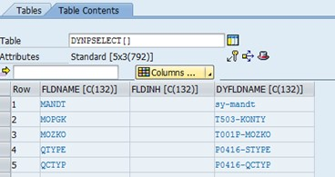
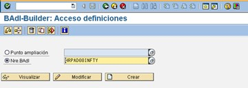
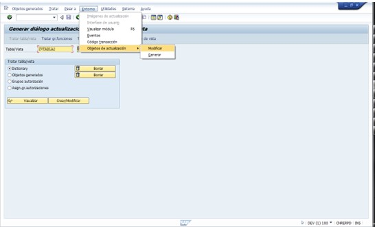
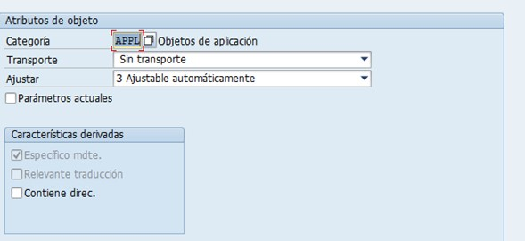
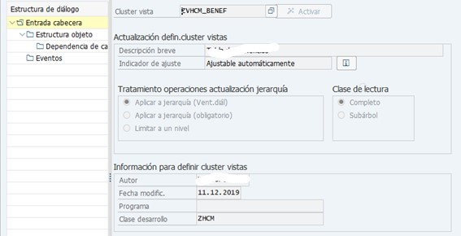
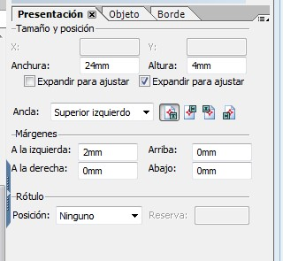

-
Recomendaciones para realizar un codigo limpio
Aquí
TRANSACCIONES
ABAPDOCU: documentacion abap
SE01: ejecutar ordenes de transportar programa
SE03: herramientas de transporte
SE09: organizador de transporte workbech
SE10: organizador de transporte customizing
SCC1: pasar programa de desarrollo a calidad (QAS) siempre y cuando DEV y QAS esten en la misma maquina, me ubico en qas, le doy la orden que debo pasar y hago check en tareas inferiores y luego inicio inmediato y me devuelvo.
STMS: pasar programa de desarrollo a calidad (QAS) siempre y cuando DEV y QAS esten en diferente maquina
SE11: abap/4 visualizacion de tablas del diccionario: por aquí también se corrigen las tablas, cuando hay un campo de una tabla en desarrollo y no existe en qas o prd, hay que modificar algo (puede ser del atributo un punto, y se activa).
SE54: se tratan las vistas de cluster (encadenar tablas SM30)
SE12: abap/4 visualizacion de tablas del diccionario
SE13: actualizar opciones tecnicas del diccionario
SE14: utilidad para el diccionario de bases de datos para arreglar tablas cuando genere error al crear o borrar campos.
SE15: abap/4 navegador de objetos
SE16: ver datos de tablas infotipos
SE16N: ver datos de tablas infotipos otra forma de visualizar
SE17: ver datos generales de tablas
SE30: abap/4 analisis en tiempo de ejecucion
SE32: abap/4 visualizar estructura de programas
SE35: abap/4 actualizar modulos de dialogo
SE36: abap/4: generador de bases de datos logicas
SE37: abap/4 prueba de funciones (cuando se hace call function)
SE38: editor de programas abap
SE39: comparar dos programas
SE40: acceso a menu painter
SE41: menu painter : para copiar statusgui
SE43: menu de ambito
SE51: imagen inicial del screen painter (hacer dynpros)
SE54: genera vistas de tablas
SE61: actualizacion de documentos
SE62: activar conversion txt.breve
SE63: aplicar conversion
SE64: actualizar terminologia
SE65: r/3 document. short text statistics
SE66: r/3 documentation statistics (test!)
SE68: translation administration
SE71: sapscript formularios
SE72: SAPscript stilos
SE73: SAPscript de fonts
Pasos para cargar:
https://sap4tech.net/add-new-font-family-smartforms-sap/
SE74: sapscript importar y exportar archivos rtf, doc y en sapscripts
SE75: sapscript parametros
SE76: sapscript traduccion de formularios
SE77: sapscript traduccion de stilos
ST22: revisión de procesos con error, debug, seguimiento
SM12: revisión bloqueo de tabla
ST05: trx. sat revisión de procesos debug, seguimiento – trace
ST06: todo la información del servidor que se esta trabajando.
AL11: directorio sap, para download o bajar un archivo se hace
CG3Y: bajar archivos de una carpeta SAP al PC (Suele tener problemas y no exporta todos los campos)
CACS_FILE_COPY: bajar archivos de una carpeta SAP al PC, funciona mejor que CG3Y
CG3Y: subir archivos del PC a una carpeta del servidor SAP
SE78: gestion de graficos del formulario
/n/UI2/FLPD_CONF: invocar FIORI Launchpad configuration (si esta disponible en el mismo servidor)
/n/UI2/FLPD_CUST: invocar FIORI Launchpad designer (si esta disponible en el mismo servidor)
/n/UI2/FLP: invocar FIORI Launchpad usuario (si esta disponible en el mismo servidor)
OAER: Crear logo que se ingresan a Reportes ALV, ver instrucciones a continuación:
Pasos para subir el logo:
1. Ir a la transacción OAER
2. En el nombre de clase, poner 'PICTURES'
3. El tipo de clase es 'OT'
4. En el "object key" (clave del objeto ): introduce el nombre que se le quiere dar al logo, en este caso : LOGOCOMPLETO111, una cosa, yo lo pondría todo en mayúsculas en la llamada en el módulo de función.
5. Ejecutar la transacción
6. En la siguiente pantalla selecciona documento standard. Pincha sobre el icono de imagen y entonces te preguntará por el nombre del fichero que vas a subir.
Ahora podrás usuar tu logo con la función REUSE_ALV_COMMENTARY_WRITE
ejemplo: CALL FUNCTION 'REUSE_ALV_COMMENTARY_WRITE'
EXPORTING
i_logo = 'ZLOGO_XXXX'
it_list_commentary = ti_list_top_of_page_ent.
SE80: abap/4 navegador de objetos, resumen de programa
SE81: visualizar la jerarquia de aplicaciones sap
SE82: crear jerarquia de aplicacion
SE84: abap/4 ver reuse library
SE86: abap/4 repository information system
SE87: data modeler information system
SE88: development coordination info system
SE93: crear transacción, se debe asociar a un programa.
SE43: para asociarla en el menu
SM12: matar bloqueos de sap
SM30: actualizar y modificar tablas.
SQ{01-99}: ABAP/4 Querys
S_PH0_48000510: querys al modulo de nomina adhoc query
STMS: ordenes de transporte
CMOD: Para crear entradas a un user-exit
BAPI: ingreso a BAPI
PROGRAMAS RSTXSCRP Upload y Download de SAPSCRIPT import o export de formatos sapscript se le da lo basico, para copiar a disco duro o para importar. se hace a través de la SE38. RSTXLDMC Subir Logos de SAPSCRIPT RSTXR3TR Transportar de un cliente a otro de SAPSCRIPT RSTXFPR0 Para probar-Test un SAPSCRIPT
TABLAS los infotipos tienen dos tipos de tabla: Pnnn: tabla interna que se llena cuando se carga un programa abap PAnnn: tabla de la base de datos que contiene la informacion, por la se16 se puede ver la estructura. ejemplo PA0001. RT: tiene todos los resultado de nomina standar CRT: tabla de resultados acumulados WPBP: datos de puesto de trabajo y emolumentos bas. V0: asignacion variable tablas temporales del calculo de nomina: IT, VAR, OT. definitivas son la RT Y LA CRT PIT: procesa la tabla temporal IT PRT: procesa la tabla de resultados RT V_T5F99K2: Tabla configuracion nomina adicional V_T7CO01 Datos adicionales de sociedad V_T7CO02 Parámetros generales de Seguridad Social V_T7CO03 Tipo de entidades de seguridad social V_T7CO04 Entidades de seguridad social (Tipos) V_T7CO04A Datos adicionales de Entidad V_T7CO05 Sucursales de seguridad social V_T7CO06 Centros de trabajo y porcentajes de riesgos profesionales V_T7CO07_A Configuración general de absentismos V_T7CO07_B Configuración de Incapacidades V_T7CO08 Tabla de Retención V_T7CO08A Fondo de solidaridad V_T7CO08B Fondo de solidaridad - Pensionados V_T7CO09 Parámetros de Retención en la Fuente V_T7CO10 Acumuladores de préstamos y Embargos V_T7CO11 Conceptos a inicializar en tabla CRT de acuerdo a la medida. V_T7CO12 Indicadores para Clase de Fecha IT0041 Colombia V_T7CO13 Saldos de Periodos Anteriores V_T7CO14 Motivos anticipos de cesantías V_T7CO15 Juzgados (CO) V_T7CO16 Vista Categorías de Embargos V_T7CO17 Equivalencias Código Bancario ACH V_T7CO18 Tipos de cálculo V_T7CO20 CC-nominas de Provisión V_T7CO21 Parametros de provisiones V_T7CO22 Función de calculo para prestaciones sociales - provisiones V_T7CO23 Parámetros generales de nómina V_T7CO24 Conceptos que no suman a la base para autoliquidación V_T7CO25 Parámetros de tipos de cálculo V_T7CO26 Agrup. de personal para bases y calculo de prestaciones V_T7CO27 Concepto de salida para cálculo de liquidación y provisiones V_T7CO28 Información del Banco Agrario (Embargos CO) V_T7CO29 Bases para cálculo de provisiones V_T7CO30 Oficinas para giros del Banco Agrario (Embargos CO) V_T7CO31 Agrupación conceptos DIAN V_T7CO32 Medidas para Cambios de Condiciones V_T7CO33 Conceptos de anticipo de pagos V_T7CO34 Acumuladores Certificado Ingresos y Retenciones V_T7CO35 CC nóminas para ausentismos V_T7CO36 Tipos de Entidad por Clase de evaluación/Concepto DIAN. V_T7CO37 DIAN: Equivalencias Tipos de Documento Medios Magnéticos. V_T7CO38 Operadores de Información V_T7CO40 Tabla de retención en la fuente - UVT V_T7CO41 Tarifa Minima de Retencion en la Fuente - Empleados V_T7CO85 Tipos ID en Nómina CO V_T7CO90 Tipos de cálculo por tipo de empleado y subtipo V_T7CO91 Rangos días de Indemnización por despido sin justa causa V_T7CO92 Vigencias Tablas de Indemnización V_T7CO95 Códigos de indemnización V_T7CO97 Reglas de cálculo para los conceptos de liquidación V_T7CO98 Agrupación de empleados para liquidación de contrato V_T7CO98_A Agrupación de empleados para liquidación de contrato T547S: traer el texto de tipo de contrato T510A: traer el texto de regimen laboral T512T: traer el texto del cc nomina T247: traer el texto del mes TTDTG: tabla de textos abap – mes – dia - etc CSKS: traer el texto centro de costo T549T: textos area nomina T500P: textos division personal T511K: constantes de nomina T511P: otras constantes T528T: traer el texto de la posicion (cargo) T527O. traer el texto de las secretarias T527X: traer el texto de la unid.org.(dependencia) T529T: "traer el texto clase de medida (retiro) T52OCV: variantes para cálculos de nómina especial HRP1000: textos de la estructura HRP1001: relaciones jerarquicas de la estructura HRP1005: remuneracion teorica escala salarial HRP1008: caracter de imputacion HRP1014: obsolescencia PA0001: Tabla del infotipo 0001 PA0008: Tabla del infotipo 0008
INFOTIPOS 0000 Medidas 0001 Asignación organizacional 0002 Datos personales 0003 Status de nómina 0004 Invalidez 0005 Derecho a vacaciones 0006 Direcciones 0007 Horar.trabajo teór. 0008 Emol.básicos 0009 Relación bancaria 0011 Transferencias ext. 0014 Dev./deduc.periód. 0015 Pago complementario 0016 Elementos contrato 0017 Privilegios de viaje 0019 Seguimiento fechas 0021 Familia/pers.refer. 0022 Formación 0023 Otras empresas/Empresas anteriores 0024 Cualificaciones 0025 Calificaciones 0027 Distribución de costes 0028 Servicios médicos 0030 Poderes 0031 Número de personal de referencia 0032 Datos internos de la empresa 0033 Estadísticas 0034 Función interna 0035 Instruc. empresa 0037 Seguros 0040 Cesiones 0041 Datos de fecha 0045 Préstamos 0050 Información entrada tiempos 0054 Comités empresa 0057 Asociaciones 0077 Datos adic.persona 0078 Pagos de préstamos 0080 Maternidad/Período de excedencia 0081 Serv.mil./Prest.sust. 0082 Datos absent.compl. 0083 Compensac.derecho a vacaciones 0095 Datos control (KAN) 0105 Comunicación 0121 Prioridad NºPersRef. 0128 Notificaciones 0130 Proced.verific. 0139 Nº candidato empleado 0165 Límites para devengos 0167 Planes de salud 0168 Planes de seguro 0169 Planes de ahorro 0171 Información de beneficios 0185 ID personal Cedula 0219 Organizaciones externas 0221 Cheque manual 0236 Planes de crédito 0267 Pagos complementarios nóm.especial 0283 Objetos archivados 0302 Medidas complementarias 0315 Valores propuestos hoja tiempos 0330 Remuneración en especie 0377 Otros planes 0378 Motivos adaptación 0379 Planes de adquisición acciones 0380 Ajuste de remuneración 0381 Admisibilidad de la remuneración 0382 Participación de empleado 0383 Componente de remuneración 0384 Paquete de remuneración 0402 Resultados del cálculo de la nómina 0403 Resultados cálculo de la nómina 2 0415 Status de export 0416 Compensaciones contingente tiempos 0439 Información transferencia datos 0458 Acumulación mensual 0459 Acumulación trimestral 0460 Acumulación anual 0468 Perfil viaje (no especificado) 0469 Perfil viaje (no especificado) 0470 Perfil viaje 0471 Preferencia vuelo 0472 Preferencia hotel 0473 Preferencia coche alquiler 0474 Preferencia tren 0475 Programa cliente 0491 Subcontratación de nóminas 0503 Definición pensionista 0504 Ventaja pensión 0552 Datos de tiempo/Período de empleo 0553 Cálculo período empleo 0561 Datos Impuestos 0655 Parametriz.p.ESS recibo salarios 0900 Datos comerciales 0901 Datos de compras 2001 Absentismos 2002 Asignación costes (Presencias) 2002 Facturac.actividad (Presencias) 2002 Notif.pedido (pres.) 2002 Presencias 2002 Servicios externos (Presencias) 2003 Suplencias 2003 Suplencia: Horarios tbjo.indiv. 2004 Servicio de guardia 2005 Horas extras 2006 Conting.absentismos 2007 Conting.presencias 2010 Asignación costes (Compr.remmun.) 2010 Comprob.remuneración 2010 Facturac.actividad (Compr.remun.) 2011 Hechos temporales 2011 Hechos temporales CO 2011 Hechos temporales PM 2011 Hechos temporales PP 2011 Hechos tempor.compl. 2012 Prop.transfer.tiempos 2013 Corrección contingentes 2050 Calendario anual 2051 Calendario mensual 2052 Entrada lista presencia/absentismo 2052 Entrada semanal con asignac.costes 2052 Entrada semanal con fact.actividad 2052 Entrada semanal (sin distrib.horas) 2500 Tiempos del PHT personal 2501 Tiempos personal 2502 Movimiento contingentes 3003 Gestión de materiales
CAMPOS TABLAS EN INFOTIPOS ABART grupo ABKRS area de nomina ANSVH relacion laboral BUKRS sociedad (isa, univ.) BTRTL subdivision de personal BEGDA fecha inicial del periodo ENDDA fecha final del periodo KOSTL centro de costos LGART maneja los conceptos de nomina (las cc-nominas) MOLGA pais (colombia 38) ORGEH unidad organizativa PERSG grupo de personal PERNR codigo empleado PERSK area de personal PLANS posicion SPRAS idioma STELL funcion SUBTY subtipo UNAME nombre de la ultima persona que modifico WERKS division de personal
COSAS QUE SE UTILIZAN EN SAP Crear un batch input (bi) y ejecutarlo: Se crea a través de la transacción SHDB, y se ejecuta por la SM35 Revisar errores de transporte: se ingresa por la SE10 se busca la orden transportada y se da clic derecho “log de transporte” y se buscan los errores. Si al volverlo a efectuar sale bien, revisar que no haya pendientes de transporte y se activa nuevamente el programa y se genera una orden de transporte nueva. Log de modificaciones en tablas con el LOG activado: Trx. SCU3
MESES - NOMBRE MES - FECHA EN LETRAS DATA: ti_meses TYPE TABLE OF t247, wa_meses TYPE t247, gv_dia(2) TYPE c. CALL FUNCTION 'MONTH_NAMES_GET' EXPORTING language = sy-langu TABLES month_names = ti_meses.
READ TABLE ti_meses INTO wa_meses WITH KEY mnr = sy-datum+4(2). gv_dia = sy-datum+6(2). CALL FUNCTION 'CONVERSION_EXIT_ALPHA_OUTPUT' EXPORTING input = gv_dia IMPORTING output = gv_dia. CONCATENATE gv_dia 'de' wa_meses-ltx 'de' sy-datum(4) INTO ptxt1-zzfecha_let SEPARATED BY space.
DEFINE LOS BLOQUES QUE SE VAN A ACTIVAR DENTRO DEL PROGRAMA ************************************************************************ *Descripcion: Aqui se dira si hay o no lugar a que sea algun tipoo de * nomina especial. SELECTION-SCREEN BEGIN OF BLOCK b0 WITH FRAME TITLE text-001. PARAMETERS: * p_payty like pc261-payty modif id spe, "pay type * p_ocrsn like pc261-ocrsn modif id spe, "off-cycle reason " p_error AS CHECKBOX. SELECTION-SCREEN END OF BLOCK b0.
INITIALIZATION. PERFORM initial_selection_screen. : PREDEFINE VALORES A LAS VARIABLES Y CAMPOS QUE SE VAN A UTILIZAR PROGRAMA SELECTION-OPTIONS. : ES DONDE SE CAPTURARAN LOS DATOS DE LOS CAMPOS DE LA SELECTION-SCREEN INCLUSIVE CAMPOS PARA CAPTURA DE DATOS DE LA TABLA POR CHECKBOX. CAMPOS OBLIGATORY, START-OF-SELECTION. *RP-SET-NAME-FORMAT. REFRESH: empleados, int_datos. LIMPIA LA INFORMACION CONTENIDA DENTRO DE LAS TABLAS CLEAR: empleados . LIMPIA LA INFORMACION CONTENIDA DENTRO DE LA CABECERA DE LA TABLA myreport = sy-repid. ASIGNA EL NOMBRE DEL PROGRAMA A MYREPORT.
************************************************************************ *Descripcion: Aqui se mueven los datos de fecha, para traer luego el * nombre del mes con el año. ************************************************************************ MOVE: pn-endda TO fecha. COLOCA EL FORMATO DE FECHA DE 01 02 2005 A 2005 02 01 w_begau = pn-begda. FECHAS EN LA QUE SE EJECUTA EL REPORTE w_endau = pn-endda. PERFORM trae_nomb_mes USING sy-langu fecha-mes CHANGING v_kname_month v_lname_month.
TRANSLATE v_lname_month TO UPPER CASE.
Calculo de Fecha final indicando Fecha inicial y numero de dias. CALL FUNCTION 'RP_CALC_DATE_IN_INTERVAL' EXPORTING date = pn-begda days = 00 months = 01 signum = '-' years = 00 IMPORTING calc_date = w_began. w_endan = pn-begda - 1.
GET pernr. LLENA TODA LA TABLA CON LA INFORMACION DEL EMPLEADO, PARA QUE SE PUEDA LEER DE LA TABLA LOGICA Y NO DE LA FISICA. En el programa en atributos se debio definir la base de datos PNP
DESCRIBE TABLE gti_plano. IF sy-tfill = 0. MESSAGE s001(zfi) WITH text-m01. ENDIF. lv_tab_lines_txt = lines( lti_objbin ). Valida Numero de Lineas en el rango o tabla IF lines( S_MATKL ) GT 0. ENDIF.
LOOP AT rtx. CHECK rtx-lgart = c_nsal. MOVE rtx-betrg TO w_betrg. WRITE rtx-betrg TO w_valor CURRENCY c_moneda_siemens. * WRITE pfedy-endda DD/MM/YYYY TO pdpla-planzeit+13. ESTE EJEMPLO DA COMO RESULTADO 15.11.2007 MOVE w_valor TO w_valorn. CLEAR rtx-betrg. MOVE w_valorn TO rtx-betrg. IF w_betrg < 0. rtx-betrg = rtx-betrg * -1. ENDIF. MOVE rtx-betrg TO int_datos-saldo-ant. ENDLOOP.
CALL FUNCTION 'RP_CALC_DATE_IN_INTERVAL' EXPORTING date = sy-datum days = 00 months = 01 signum = '-' years = 00 IMPORTING calc_date = fecha_dia. WRITE fecha_dia TO fecha_desple. WRITE hora_dia TO hora_desple. IF pn-begda NE pn-endda. CONCATENATE '[Fecha desde' date-begda 'Hasta' date-endda ']' INTO header2 SEPARATED BY space. CONCATENATE '[Reporte Generado el ' fecha_desple ' Hora: ' hora_desple ']' INTO footnote1 SEPARATED BY space. CONCATENATE '[Usuario: ' nom_usuario ']' INTO footnote2 SEPARATED BY space. ELSE. CONCATENATE 'Fecha ' date-begda INTO header2 SEPARATED BY space. CONCATENATE '[Reporte Generado el ' fecha_desple ' Hora: ' hora_desple ']' INTO footnote1 SEPARATED BY space. CONCATENATE '[Usuario: ' nom_usuario ']' INTO footnote2 SEPARATED BY space. ENDIF.
CALL FUNCTION 'HR_DISPLAY_BASIC_LIST' DEJA LOS TITULOS LISTOS PARA IMPRIMIR EN EL REPORTE EXPORTING lay_out = 0 head_line1 = header2 head_line2 = footnote1 head_line3 = footnote2 head_line4 = footnote3 basic_list_title = sy-title file_name = myreport current_report = myreport list_level = list_level IMPORTING return_code = return_code TABLES data_tab = int_datos fieldname_tab = fieldnames * error_tab = display_err EXCEPTIONS print_problems = 5 OTHERS = 1.
rp-provide-from-last p0001 space p_pn_begda p_pn_endda. IF pnp-sw-found EQ found. p_report_statistic-processes_employee = p_report_statistic-processes_employee + 1. MOVE-CORRESPONDING p0001 TO p_empleados. MOVE-CORRESPONDING p0001 TO int_datos. lwa_p0001_1 = CORRESPONDING #( p0001 ) . lwa_p0001_1 = CORRESPONDING #( BASE ( lwa_p0001_1 ) p0001 ) . DATA(extract) = FILTER #( spfli_tab USING KEY carr_city WHERE carrid = CONV #( to_upper( carrid ) ) AND cityfrom = CONV #( to_upper( cityfrom ) ) ). cl_demo_output=>display( CORRESPONDING flights( spfli_tab ) ). Lectura de tabla READ TABLE: DATA(ls_address) = lt_addresses[ 4 ]. DATA(ls_address) = lt_addresses[ comp_id = 'SAP' location = 'Texas' ]. c_interfaz-descrp = lti_messages[ 1 ]-msgv1. “INDEX 1 lti_customerdetails = VALUE #( ( retailstoreid =
DESDE TABLA DE BASE DE DATOS TYPES: BEGIN OF ty_final, ebeln TYPE ebeln, ebelp TYPE ebelp, lifnr TYPE lifnr, matnr TYPE matnr, maktx TYPE maktx, werks TYPE werks_d, name1 TYPE name1, END OF ty_final, ty_t_final TYPE STANDARD TABLE OF ty_final WITH DEFAULT KEY. DATA(lt_final) = VALUE ty_t_final( FOR ls_ekpo IN lt_ekpo FOR ls_ekko IN lt_ekko FROM line_index( lt_ekko[ ebeln = ls_ekpo-ebeln ] ) WHERE ( ebeln = ls_ekpo-ebeln ) FOR ls_makt IN lt_makt FROM line_index( lt_makt[ matnr = ls_ekpo-matnr ] ) WHERE ( matnr = ls_ekpo-matnr ) FOR ls_t001w IN lt_t001w FROM line_index( lt_t001w[ werks = ls_ekpo-werks ] ) WHERE ( werks = ls_ekpo-werks ) LET ls_final = VALUE ty_final( lifnr = ls_ekko-lifnr maktx = ls_makt-maktx name1 = ls_t001w-name1 ) IN ( CORRESPONDING #( BASE ( ls_final ) ls_ekpo ) ) ). DATA(lti_clase_entrega_salida) = lti_rangos[]. DELETE lti_clase_entrega_salida[] WHERE id_range <> lc_clase_entrega_salida. lr_lfart = VALUE #( FOR
Llenar una tabla interna que tiene diferente estructura: Para este caso lwa_mats no se requiere data TYPES: BEGIN OF gty_materials, matnr TYPE matnr, END OF gty_materials. TYPES: gty_tti_materials TYPE STANDARD TABLE OF gty_materials. DATA: lti_materials TYPE zcl_amdp_mmgp03=>gty_tti_materials, lti_materials = VALUE #( FOR lwa_mats IN gti_data_inicial ( matnr = lwa_mats-matnr ) ).
TODOS LOS CAMPOS DE LA TABLA, SIN RESTRICCION TYPES: lty_transaction TYPE /posdw/tt_bapitransaction, lty_goodsmovement TYPE /posdw/tt_goodsmovement. DATA(lti_transaction) = VALUE lty_transaction( FOR lwa_transaction IN input-transaction-item ( CORRESPONDING #( lwa_transaction ) ) ) . DATA(lti_goodsmovement) = VALUE lty_goodsmovement( FOR lwa_goodsmovement IN input-goodsmovement-item ( CORRESPONDING #( lwa_goodsmovement ) ) ) . SQL CON WHERE ex_ti_proxy_lineitemtax = VALUE lty_proxy_lineitemtax( BASE ex_ti_proxy_lineitemtax FOR lwa_proxy_lineitemtax IN
PROGRAMA DEMO_CORRESPONDING_VS_FOR DEMO_OLD_VS_NEW* PARA TABLA DEMO_FILTER_TABLE http://zevolving.com/2015/05/abap-740-for-iteration-expression/
CALL FUNCTION 'HR_APPEND_ERROR_LIST' EXPORTING arbgb = pco00_errid msgty = p_msgty msgno = p_error_number msgv1 = p_msgv1 msgv2 = p_msgv2 msgv3 = p_msgv3 msgv4 = p_msgv4 EXCEPTIONS OTHERS = 1. CHECK sy-subrc NE 0. WRITE:'Error al agregar elemento a la lista de errores'(e02).
*----------------------------------------------------------------------* * FORM PRINT_ERROR_LIST * *----------------------------------------------------------------------* * Rutina de impresión de errores * *----------------------------------------------------------------------* FORM print_error_list. CALL FUNCTION 'HR_DISPLAY_ERROR_LIST' EXPORTING no_popup = 'X' no_print = space no_img = space EXCEPTIONS invalid_linesize = 1 OTHERS = 2. CHECK sy-subrc NE 0. WRITE: 'Error al agregar elemento a la lista de errores'(e02).
DATA: BEGIN OF var0041, dar LIKE p0041-dar01, dat LIKE p0041-dat01, END OF var0041. rp-provide-from-last p0041 space p_pn_begda p_pn_endda. IF pnp-sw-found EQ found. p_report_statistic-processes_employee = p_report_statistic-processes_employee + 1. DO 20 TIMES VARYING var0041 FROM p0041-dar01 NEXT p0041-dar02. IF var0041-dar EQ '01'. MOVE: var0041-dat TO p_empleados-dat01, var0041-dat TO int_datos-dat01. EXIT. ENDIF. ENDDO. READ TABLE datumsangabe INTO datumsangabe_ret WITH KEY typ = 'ZF'. IF datumsangabe_ret-wert BETWEEN aper-begda AND aper-endda. gd_fecha_fin = datumsangabe_ret-wert. ENDIF. ***** OTRO FORMA DE LEER DO 12 TIMES VARYING p41dat-art FROM p0041-dar01 NEXT p0041-dar02 VARYING p41dat-datum FROM p0041-dat01 NEXT p0041-dat02. "UC IF p41dat-art = '25'. gd_fecha_ini = p41dat-datum. EXIT. ENDIF. ENDDO.
LOOP AT SCREEN. CASE screen-name. WHEN 'PNPABKRS-LOW'. IF pnpabkrs[] IS INITIAL. MOVE 'C2' TO pnpabkrs-low. APPEND pnpabkrs. screen-required = 1. MODIFY SCREEN. ENDIF. WHEN 'PNPXABKR'. IF pnpxabkr IS INITIAL. MOVE 'C2' TO pnpxabkr. MODIFY SCREEN. ENDIF. ENDCASE. ENDLOOP.
CREAR FORMULARIO DE CEDT Por transacción PE51_CHECKTAB se digita pais 38 o 99 según el caso, tipo de formulario CEDT, y se compararan los parámetros con otro que ya existe. Por transacción PE51, se crea el formulario. Se prueba con HCOCEDT0 Luego para que muestre el recibo de pago asociado a la liquidación de nomina HCOCALV0 se va a recibo de pago y finiquito HCOCEDT0, y se escoje el Nombre del formulario (el que se creo) y se graba con una variante. Al volver al driver HCOCALV0 ya debe aparecer para visualizar el recibo. PE51 Para tiempos, lo que se debe hacer es copiar, para ello se invoca la trx. PT61, en Denominación formulario se da F1 -> Customizing Se busca Gestión de tiempos de personal-> Copiar modelo de formulario Es la Trx. OG00 Y F8 Se copian los formularios: TF00 TF01 y TF02
VISUALIZAR MENSAJES EN UN PROGRAMA Mensaje en cuadrado, con mensaje largo… cuando es con I MESSAGE 'Se descuenta el Sabado, Verifique ingreso del registro en IT0015 (subty.2TS1)' TYPE 'I'. MESSAGE e156(pg) WITH pernr gv_begda RAISING pernr_not_found.para funciones MESSAGE e058(00) WITH '9101' p9101-hilfm 'T777W'. Si el mensaje anterior es con ‘S’ se muestra en la barra. message i060(zhrmsg) with 'Archivo Plano No Definido.'. MESSAGE text-i04 TYPE 'I' DISPLAY LIKE 'E'. “Mensaje en cuadrado MESSAGE text-e01 TYPE 'S' DISPLAY LIKE 'E'. “Mensaje en barra Para usar con el & CALL FUNCTION 'AUTHORITY_CHECK_TCODE' EXPORTING tcode = 'ZHCMTR_TEMPARIOS' EXCEPTIONS ok = 0 not_ok = 8. IF sy-subrc NE 0. MESSAGE a172(00) WITH sy-tcode. "falta autorización para la transacción ENDIF. MESSAGE s006(8B) WITH 'men1' 'men2' 'men3'. MESSAGE ID 'sapdemos' TYPE 'I' number 888 WITH 'm1' 'm2'. MENSAJE VALIDACIÓN CUANDO SE VA A GRABAR EN UN DYNPRO 2000 Y CON ESTO PERMITE CORREGIR LOS DATOS DEL DYNPRO MESSAGE s040(zhcm) WITH
ANTIGUEDAD DEL EMPLEADO EN NUMEROS DATA: planvar LIKE p1000-plvar, w_orgeh LIKE p0001-orgeh, p1001_subrc LIKE sy-subrc, zpt_subrc LIKE sy-subrc, nro_unidad TYPE i, d_fecha_ing TYPE p0041-dat01, d_fecha_tope TYPE p0041-dat01, p_dias TYPE p, p_meses TYPE p, p_anos TYPE p, c_dias TYPE c, c_meses TYPE c, c_anos TYPE c, gd_begda_1800 TYPE begda VALUE '01011800', gd_endda_9999 TYPE endda VALUE '31129999', p_totdias TYPE p. DATA: it_p0000 TYPE STANDARD TABLE OF p0000, it_p0001 TYPE STANDARD TABLE OF p0001, it_phifi TYPE STANDARD TABLE OF phifi. CALL FUNCTION 'HR_READ_INFOTYPE' EXPORTING tclas = 'A' pernr = wa_dim_employee-key-personnel_number infty = '0000' begda = gd_begda_1800 endda = gd_endda_9999 TABLES infty_tab = it_p0000 EXCEPTIONS infty_not_found = 1 OTHERS = 2. CALL FUNCTION 'HR_READ_INFOTYPE' EXPORTING tclas = 'A' pernr = wa_dim_employee-key-personnel_number infty = '0001' begda = gd_begda_1800 endda = gd_endda_9999 TABLES infty_tab = it_p0001 EXCEPTIONS infty_not_found = 1 OTHERS = 2. CALL FUNCTION 'RP_HIRE_FIRE' EXPORTING beg = wa_dim_position_key_lee-key-begda end = wa_dim_position_key_lee-key-endda IMPORTING hire_date = gd_fecha_ing fire_date = gd_fecha_ret TABLES pp0000 = it_p0000 "input pp0001 = it_p0001 "input pphifi = it_phifi. "output IF d_fecha_ing IS NOT INITIAL. CALL FUNCTION 'HRVE_GET_TIME_BETWEEN_DATES' EXPORTING beg_date = d_fecha_ing end_date = d_fecha_tope IMPORTING days = p_dias months = p_meses years = p_anos EXCEPTIONS invalid_period = 1 OTHERS = 2. IF sy-subrc = 0. p_totdias = ( p_meses * 30 ) + ( p_anos * 360 ) + p_dias. zpt_antiguedad_num = p_totdias / 360. ENDIF. ENDIF. CALL FUNCTION 'HRCO_DAYS_BETWEEN_TWO_DATES' EXPORTING begda = lc_bdate endda = lc_edate modif = modif-mod0a divisor30 = gl_swco-divisor30 disabilities = p_disabilitys p_class = p_class IMPORTING days = lc_tage TABLES p0001 = ls_p0001 coabs = coabs it_t7co07 = it_t7co07 EXCEPTIONS error = 1 OTHERS = 2.
ANTIGUEDAD DEL EMPLEADO EN LETRAS DATA: planvar LIKE p1000-plvar, w_orgeh LIKE p0001-orgeh, p1001_subrc LIKE sy-subrc, zpt_subrc LIKE sy-subrc, nro_unidad TYPE i, d_fecha_ing TYPE p0041-dat01, d_fecha_tope TYPE p0041-dat01, p_dias TYPE p, p_meses TYPE p, p_anos TYPE p, c_dias TYPE c, c_meses TYPE c, c_anos TYPE c, p_totdias TYPE p. CLEAR: d_fecha_ing, zpt_antiguedad_let. CALL FUNCTION 'RP_GET_HIRE_DATE' EXPORTING persnr = p0041-pernr check_infotypes = '0041' datumsart = '01' * STATUS2 = '3' * P0016_OPTIONEN = ' ' IMPORTING hiredate = d_fecha_ing. IF pn-endda = '31129999'. d_fecha_tope = sy-datum. ELSE. d_fecha_tope = pn-endda. ENDIF. IF d_fecha_ing IS NOT INITIAL. CALL FUNCTION 'HRCO_GET_TIME_BETWEEN_DATES' EXPORTING beg_date = d_fecha_ing end_date = d_fecha_tope IMPORTING days = p_dias months = p_meses years = p_anos EXCEPTIONS invalid_period = 1 OTHERS = 2. IF sy-subrc = 0. c_anos = p_anos. c_meses = p_meses. c_dias = p_dias. CONCATENATE c_anos 'año(s)' c_meses 'mes(es)' c_dias 'dia(s)' INTO zpt_antiguedad_let SEPARATED BY space. ENDIF. ***** OTRO CÓDIGO IF sy-subrc = 0. gv_meses_c = gv_meses_p. gv_anos_c = gv_anos_p. CALL FUNCTION 'CONVERSION_EXIT_ALPHA_OUTPUT' EXPORTING input = gv_meses_c IMPORTING output = gv_meses_c. CALL FUNCTION 'CONVERSION_EXIT_ALPHA_OUTPUT' EXPORTING input = gv_anos_c IMPORTING output = gv_anos_c. CASE gv_anos_p. WHEN 0. CASE gv_meses_p. WHEN 0 OR 1. CONCATENATE '1' 'mes' INTO wa_pernr-tieser SEPARATED BY space. WHEN OTHERS. CONCATENATE gv_meses_c 'meses' INTO wa_pernr-tieser SEPARATED BY space. ENDCASE. WHEN 1. CASE gv_meses_p. WHEN 0. CONCATENATE gv_anos_c 'año' INTO wa_pernr-tieser SEPARATED BY space. WHEN 1. CONCATENATE gv_anos_c 'año y' gv_meses_c 'mes' INTO wa_pernr-tieser SEPARATED BY space. WHEN OTHERS. CONCATENATE gv_anos_c 'año y' gv_meses_c 'meses' INTO wa_pernr-tieser SEPARATED BY space. ENDCASE. WHEN OTHERS. CASE gv_meses_p. WHEN 0. CONCATENATE gv_anos_c 'años' INTO wa_pernr-tieser SEPARATED BY space. WHEN 1. CONCATENATE gv_anos_c 'años y' gv_meses_c 'mes' INTO wa_pernr-tieser SEPARATED BY space. WHEN OTHERS. CONCATENATE gv_anos_c 'años y' gv_meses_c 'meses' INTO wa_pernr-tieser SEPARATED BY space. ENDCASE. ENDCASE. ENDIF. DEDUCE NUMERO DE DIAS ENTRE FECHAS if w_fecha_tope > P0041-DAT01. CALL FUNCTION 'HRCO_GET_TIME_BETWEEN_DATES' EXPORTING beg_date = P0041-DAT01 end_date = w_fecha_tope IMPORTING DAYS = w_dias MONTHS = w_meses YEARS = w_anos EXCEPTIONS INVALID_PERIOD = 1 OTHERS = 2. IF sy-subrc = 0. anos = w_anos. meses = w_meses. dias = w_dias. CONCATENATE anos 'año(s)' meses 'mes(es)' dias 'dia(s)' into antiguedad SEPARATED BY SPACE. ENDIF. endif.
ULTIMO DIA DEL MES - FECHAS - DIA FINAL - MES FINAL CALL FUNCTION 'RP_LAST_DAY_OF_MONTHS' EXPORTING day_in = gd_datuv IMPORTING last_day_of_month = gd_datub EXCEPTIONS day_in_no_date = 1 OTHERS = 2.
DEDUCE NUMERO DE DIAS ENTRE FECHAS OTRA CALL FUNCTION 'HRVE_GET_TIME_BETWEEN_DATES' EXPORTING beg_date = int_9392-begda end_date = int_9392-endda IMPORTING days = w_dias months = w_meses years = w_anos EXCEPTIONS invalid_period = 1 OTHERS = 2. w_totdias_aux = ( w_meses * 30 ) + ( w_anos * 360 ) + w_dias. DEDUCE NUMERO DE DIAS ENTRE FECHAS OTRA UTILIZAR SIEMPRE ESTA, YA QUE DEVUELVE LOS DIAS EXACTOS, EN CAMBIO LAS OTRAS NO. CALL FUNCTION 'HR_99S_INTERVAL_BETWEEN_DATES' EXPORTING BEGDA = w_fechaini ENDDA = w_fechafin IMPORTING days = w_dias * C_WEEKS * C_MONTHS * C_YEARS * WEEKS * MONTHS * YEARS * D_MONTHS EXCEPTIONS invalid_period = 1 OTHERS = 2. DATA lo_date TYPE REF TO cl_hrpy_date. CREATE OBJECT lo_date EXPORTING imp_date = aper-endda. lo_date->subtract_months( lc_time_amount ). * lo_date->subtract_years( lc_time_amount ). lo_date->add_days( lc_time_amount ). lv_bdate = lo_date->date.
DESACTIVAR ASISTENTE , NO DEJA EDITAR PROGRAMA A PARECE EN BLANCO TRATAR > OPERACIONES DE MODIFICACION > DESACTIVAR ASISTENTE.
NO DEJA GENERAR EL ESQUEMA CON EL LOG POR DESACTIVACION DE UNA FUNCION O INDICES INDEX - PE04 Include: PCBURZCO0 El sistema genera un error que dice que una parte del esquema esta desactivado y en este caso una función no existe, aunque no sea verdad, ejemplo Z_INC entonces: Se ingresa por la transacción pe01 se digita el esquema que tiene el problema ejemplo ZCL0 e icono generar, se desactivan los check que tenga chuleados y modo = 2 y F8. Se ingresa por la PE04 y se activa la función Z_INC. FORM fuz_fun. CASE as-parm1. WHEN '9COA'. PERFORM ajuste_coava. "Aumenta o disminuye provision vacaciones WHEN 'BASI'. PERFORM base_absentismos. WHEN 'ZGCV'. PERFORM genera_cc_cv. " Genera conceptos Compensacion Variable 15 enero WHEN 'SUPA'. PERFORM susti_patronal . "Sustitución patronal 23.11.2020 ENDCASE. ENDFORM. ACTIVAR FUNCIÓN: Ejecutar programa RPUCT700 y con eso se crea automáticamente el código ABAP Ejecutar programa RPUGCC00 El include para PY modificado es: PCASFCO0, ahí estan las funciones INCLUDE PARA INGRESAR FUNCIONES Y OPERACIONES DE NOMINA HCOCALC0 En el include PCBURZCO0 se ingresa el include con la función INCLUDE zpcburzco0_f01. ACTIVAR FUNCIÓN (Ejemplo parámetro BCRT), LUEGO DE HABERLA INCLUIDO EN UN PROGRAMA DE FUNCIÓN COMO ZCBURZ38FU Cuando uno agrega un parámetro ejemplo a la función Z_CFU, debe ejecutarse la PE04, llamar el esquema Z_CFU y darle modificar, a continuación se da doble click en la ventana Lista de parámetro al parámetro OBJPR y se agrega el nombre del parámetro adicionado, para el ejemplo BCRT, y luego grabar y activar.
TRABAJOS EN JOB Para programar trabajos en JOB, se debe ejecutar la transacción SM36, (Ver JOBS ejecutándose transacción SMX), SM37 Mirar JOBS de otro usuario. 1. Llenar la fecha y hora de inicio del JOB, y prioridad A, B o C 2. se da asistente JOB, 3. Nombre del JOB, 4.Servidor de destino, usualmente se le da en donde esta la base de datos 5. Usualmente si es un programa de da programa ABAP y el nombre del programa. 6. DEBE CREAR UNA VARIANTE, para que el programa sepa que hacer. 7. Se especifica una impresora obligatoriamente, la impresora debe estar prendida en el momento de terminar el log, o de lo contrario creo que se pierde. Ya volviendo al menú principal, Por el icono Jobs Propios (Resumen de Job), se ven los trabajos de job y en que estado están. En la columna ID, si tiene una hojita café, quiere decir que se mando a imprimir, si le doy doble click ahí, nos lleva a otra pantalla, en esta se le da paso, se elije SPOOL, y ahí se ve el estado de la impresión y se puede visualizar lo que salio en el log, con las gafitas.
AMPLIACION DE FECHAS DE MODELOS DE PAGO DE PRESTAMOS, PARA CUANDO AL AMORTIZAR UN PRÉSTAMO, NO GENERA TODAS LAS CUOTAS El inconveniente consiste en que los modelos de pago tienen fecha de validez hasta el 2010. Para ampliar los modelos de pago debe ingresar a la transacción SM30. - Ampliar la información de la tabla V_T549Z, al ingresar el sistema pide: - Modificador de fecha: 00 - Parámetro de periodo: 02 - Tipo de acumulación: M y L, (No conocemos los tipo de acumulación de Propilco, por lo que los hicimos con estos y para el caso si funciono). - Puede copiar los parámetros de un año a otro, para que quede mas fácil la configuración (Para el caso nosotros generamos el 2011). - Ampliar la información de la tabla V_T549X, al ingresar el sistema pide: - Modelo de pago: BM00, BS00, BS01, ZM01 y ZM02 (No conocemos los modelos de pago de Propilco, por lo que los hicimos con estos y para el caso si funciono). - Pregunta el país: 99 (Otros Paises). - Y luego se amplia el año. Para el caso se amplio hasta el año 2011, para probarlo con un empleado y funciono correctamente.
PARA CREAR UNA TRANSACCION ASOCIADA A UNA TABLA TRANSACCION SE93, Y SE ELIJE LA OPCION Transacción con parámetros Luego se digita la transacción SM30, Check omitir imagen y todos los SAP GUI y check Heredar propiedades GUI. En nombre del campo Dynpro: la palabra fija “VIEWNAME” y al frente el nombre de la tabla Y otro renglón con nombre del campo DYNPRO: UPDATE y al frente X
FUNCION DE LEER LOS INFOTIPOS CALL FUNCTION 'HR_READ_INFOTYPE' EXPORTING tclas = 'A' pernr = i_reguh-pernr infty = '0839' begda = i_reguh-zaldt endda = i_reguh-zaldt TABLES infty_tab = it_p0839 EXCEPTIONS infty_not_found = 1 OTHERS = 2. IF sy-subrc <> 0. * MESSAGE ID SY-MSGID TYPE SY-MSGTY NUMBER SY-MSGNO * WITH SY-MSGV1 SY-MSGV2 SY-MSGV3 SY-MSGV4. ENDIF.
CONVERTIR UNA ORDEN DE SPOOL EN PDF Ejecutar reporte RSTXPDFT4 y ya.
PROGRAMA ALV PROGRAMA DE MANEJO DE ALV, QUE PUEDE GENERAR UNA SALIDA LISTA O ALV , funcion J_3G_ALV_LIST_DISPLAY REPORTE J_3GBEST
TRANSACCIÓN DE REVISAR MAIL SCOT Business Communication Administration -> Administration -> Outbound Send Requests
PASAR DATOS DE UNA TABLA BD A TABLA INTERNA select * from HRT1018 into table ithrt_p1018 where tabnr eq it_p1018-tabnr.
SELECT * INTO TABLE gt_cdhdr FROM cdhdr FOR ALL ENTRIES IN gt_cdpos WHERE changenr = gt_cdpos-changenr AND objectid = is_ekko-ebeln.
SELECT SINGLE butxt nitnr dignr INTO (c_titulo1, c_nit, c_digver) FROM ZTHR_EC01 WHERE bukrs = p0001-bukrs AND begda <= pn-endda AND endda => pn-begda.
CREAR FORMATO DE PAGINA, TAMAÑO DE PAGINA ESPECIAL EN SAP • Transacción SPAD, icono Gestión Total • Pestaña Tp.dispos. • Primero se crea el tamaño de la hoja esto se hace por Formatos de pagina ejemplo ZCOMPAGO y el tamaño de alto 139mm y ancho 215mm (Ojo lapicito para modificar y crear). • Luego formas de edición, también se crea. En comentario se le coloca el nombre y tamaño que queremos que vea el usuario. • En la pestaña Dispos.y Servidor: al frente de Dispositivos salida damos el nombre de la impresora y enter: ejemplo: Aquí nos aparece el nombre del Tipo de dispositivo: ejemplo: Damos click sobre la palabra Tipos de Dispositivo. Damos Click en el icono Ediciones: , se le da el icono crear y se le da el nombre del tipo de dispositivo creado. Comentarios: se liga el tipo de puerto al formato creado y ya. (Ojo no buscar por LP01, hay k ligarlo es la tipo no al nombre ejemplo SAPWIN) Por SAPWIN y SWIN: doble click, en Ediciones se agregar el tipo creado, es importante mirar si tiene los comandos (aparecen en Verde). Adicionalmente hay que insertar en configuración del SPAD en pestaña Tp.dispos. Tipos de Dispositivo en SAPWIN y SWIN lo siguiente:
 Inicializar impresora
# no action
Restaurar tras fin
# no action
Fin página
# formfeed
\f
Fin línea
# newline
\n
En la impresora del usuario se crea el mismo formato, siguiendo los siguientes pasos en WINDOWS:
Para que te salga dos empleados en una misma hoja, en SAP ya esta configurada la mitad de la hoja, solo falta crear la media pagina en tu computador, para ello debes de realizar lo siguiente en tu computador:
1. Click en Inicio
2. Click en Impresoras y faxes
3. Click derecho sobre el area en blanco
4. escoger la siguiente opcion subrayada
5. Marcar (click) la opcion “crear un formulario nuevo”
Asi debe de quedar
6. EL nombre del formulario es ZMEDPAG y las medidas son:
Ancho: 21.50cm
Alto: 13.80cm
7. Debe de quedar como la siguiente imagen se muestra
APLICAR Y ACEPTAR.
1. Estando en la lista de impresoras le das click derecho en el nombre de la impresora predeterminada para el volante. En mi caso es Kyocera KM-1820 KX
2. Escoges la opción “propiedades”
3.
4. Te aparece la siguiente pantalla.
5. Hacer click en el icono Preferencias de impresión
6. Te aparece la siguiente pantalla donde escoges el formato “ZMEDPAG” y aceptar.
7. Por ultimo hacer pruebas para verificar que funcione.
Inicializar impresora
# no action
Restaurar tras fin
# no action
Fin página
# formfeed
\f
Fin línea
# newline
\n
En la impresora del usuario se crea el mismo formato, siguiendo los siguientes pasos en WINDOWS:
Para que te salga dos empleados en una misma hoja, en SAP ya esta configurada la mitad de la hoja, solo falta crear la media pagina en tu computador, para ello debes de realizar lo siguiente en tu computador:
1. Click en Inicio
2. Click en Impresoras y faxes
3. Click derecho sobre el area en blanco
4. escoger la siguiente opcion subrayada
5. Marcar (click) la opcion “crear un formulario nuevo”
Asi debe de quedar
6. EL nombre del formulario es ZMEDPAG y las medidas son:
Ancho: 21.50cm
Alto: 13.80cm
7. Debe de quedar como la siguiente imagen se muestra
APLICAR Y ACEPTAR.
1. Estando en la lista de impresoras le das click derecho en el nombre de la impresora predeterminada para el volante. En mi caso es Kyocera KM-1820 KX
2. Escoges la opción “propiedades”
3.
4. Te aparece la siguiente pantalla.
5. Hacer click en el icono Preferencias de impresión
6. Te aparece la siguiente pantalla donde escoges el formato “ZMEDPAG” y aceptar.
7. Por ultimo hacer pruebas para verificar que funcione.
INSTRUCCIÓN PARA COLOCAR UNA IMAGEN BMP EN SAPSCRIPT - LOGO - SO10 BITMAP 'ZBMP-CONCONCRETO 600' OBJECT GRAPHICS ID BMAP TYPE BMON DPI 600 BITMAP 'ZLOGO_CNR_01' OBJECT GRAPHICS ID BMAP TYPE BCOL DPI 200
ACTIVAR Y DESACTIVAR ICONOS DE UN REPORTE Se abre el programa por la se38, click en el icono ver visualizar lista de objetos se va a STATUS GUI Se abren las opciones, para habilitar o deshabilitar se para sobre el nombre del icono y se hace click sobre icono Código func. (Debemos estar en modo modificar). O por SE80 y status gui
PASAR EL CONTENIDO DE UNA TABLA DE DATOS A UNA TABLA INTERNA DATA: it_t52ev TYPE TABLE OF t52ev, wa_t52ev TYPE t52ev. SELECT * FROM t52ev INTO TABLE it_t52ev.
VER LA CONFIGURACIÓN DEL DYNPRO POR LA SE51 Por la se51, pero para ello primero vemos por el IT respectivo los nombres del programa y el numero de la imagen. Al ingresar muestra una pantalla similar a la siguiente: Y en este punto le damos la opción de layout, para visualizar los campos.
HERRAMIENTA DE CARGUES NUEVA: LTMC
LSMW ADICIONAR UN REGISTRO CUANDO SE ESTA LEYENDO LA LINEA transfer_record. Con este adiciona una línea al BI. En el programa normal hace el otro transfer, por lo tanto grabaria 2 registros.
MENSAJES PARA EL USUARIO DURANTE LA EJECUCIÓN DE UN PROGRAMA ABAP CALL FUNCTION 'SAPGUI_PROGRESS_INDICATOR' EXPORTING PERCENTAGE = 100 TEXT = PERNR-PERNR.
PARA CREAR EN UN BLOCK DE SELECTION SCREEN QUE PREGUNTE EL NOMBRE DEL ARCHIVO CON EL QUE SE DESEA GUARDAR Esto va en el block PARAMETERS: p_file TYPE rlgrap-filename OBLIGATORY DEFAULT text-m02. SELECTION-SCREEN END OF BLOCK b01. AT SELECTION-SCREEN ON VALUE-REQUEST FOR p_file. DATA: gs_filename TYPE string, gs_path TYPE string, gs_fullpath TYPE string, gn_user_action TYPE i. CALL METHOD cl_gui_frontend_services=>file_save_dialog EXPORTING window_title = 'Directorio...' default_extension = 'XLSX' default_file_name = 'Proyecto.XLSX' file_filter = 'Excel (*.XLSX)|*.XLSX' initial_directory = 'C:\\TEMP' CHANGING filename = gs_filename path = gs_path fullpath = gs_fullpath user_action = gn_user_action EXCEPTIONS cntl_error = 1 error_no_gui = 2 not_supported_by_gui = 3 OTHERS = 4. IF sy-subrc <> 0. MESSAGE e162(alvht). EXIT. ENDIF. p_file = gs_fullpath. CALL FUNCTION 'WS_FILENAME_GET' EXPORTING def_filename = text-m02 "Reporte.xls def_path = 'D:' mask = ',all files,*.*.' mode = 'O' title = text-m01 "Selección de Directorio IMPORTING filename = p_file EXCEPTIONS inv_winsys = 1 no_batch = 2 selection_cancel = 3 selection_error = 4 OTHERS = 5.
CONOCER LOS USUARIOS ACTIVOS - LOGEADOS DENTRO DE UN SISTEMA SAP Transaccion AL08 o SM04, ademas dice que transaccion esta ejecutando.
GENERAR UN PUSHBUTTON EN LA SELECTION SELECTION-SCREEN PUSHBUTTON /5(70) t_push USER-COMMAND tecla_push MODIF ID 001. Dos push en la misma linea: SELECTION-SCREEN BEGIN OF BLOCK t_pushb WITH FRAME TITLE text-anz. SELECTION-SCREEN PUSHBUTTON 1(79) t_clau USER-COMMAND t_claus MODIF ID nur VISIBLE LENGTH 38. SELECTION-SCREEN PUSHBUTTON 40(79) t_clauad USER-COMMAND t_clausad MODIF ID all VISIBLE LENGTH 38. SELECTION-SCREEN SKIP 1. SELECTION-SCREEN END OF BLOCK t_pushb. En la INITIALIZACION el nombre del boton: t_push = ‘Seleccione opcion’. Luego en la AT SELECTION-SCREEN OUTPUT. Perform HIDDEN_PUSH. &WA_L_XEKPO-TXZ01& Colocamos lo que queremos que lleve: Ejemplo: *&---------------------------------------------------------------------* *& Form HIDDEN_PUSH *&---------------------------------------------------------------------* * text *----------------------------------------------------------------------* * --> p1 text * <-- p2 text * Visualiza unas opciones del menu inicial *----------------------------------------------------------------------* FORM hidden_push . IF swa_fdef IS INITIAL. "Invisible LOOP AT SCREEN. IF screen-group1 = '001'. screen-input = 0. screen-output = 0. screen-active = 0. screen-invisible = 1. MODIFY SCREEN. ENDIF. ENDLOOP. ELSE. LOOP AT SCREEN. "Visible IF screen-group1 = '001'. screen-input = 1. screen-output = 1. screen-active = 1. screen-invisible = 0. MODIFY SCREEN. ENDIF. ENDLOOP. ENDIF. ENDFORM. " HIDDEN_PUSH AT SELECTION-SCREEN OUTPUT. LOOP AT SCREEN. IF screen-group1 = 'ZB2'. IF p_pdf = abap_true. screen-invisible = 0. ELSE. screen-invisible = 1. screen-input = 0. screen-output = 0. screen-active = 0. ENDIF. MODIFY SCREEN. ENDIF. ENDLOOP. SI SE QUIERE ACCION CUANDO SE DE CLICK SOBRE EL PUSHBUTTON DATA: it_funciones LIKE tline-tdline OCCURS 0 WITH HEADER LINE, it_funcexp LIKE tline OCCURS 0 WITH HEADER LINE. SELECTION-SCREEN BEGIN OF BLOCK bloq_03 WITH FRAME TITLE text-002. SELECTION-SCREEN BEGIN OF LINE. SELECTION-SCREEN COMMENT 1(31) text-004 FOR FIELD gd_fece. PARAMETERS: gd_fece TYPE sy-datum. SELECTION-SCREEN END OF LINE. PARAMETERS: p_check AS CHECKBOX, pfile LIKE rlgrap-filename . SELECTION-SCREEN END OF BLOCK bloq_03. SELECTION-SCREEN BEGIN OF BLOCK t_pushb WITH FRAME TITLE text-003. SELECTION-SCREEN SKIP 1. SELECTION-SCREEN PUSHBUTTON 10(79) t_clau USER-COMMAND t_claus MODIF ID nur VISIBLE LENGTH 38. SELECTION-SCREEN PUSHBUTTON 56(79) t_func USER-COMMAND t_funcs MODIF ID nur VISIBLE LENGTH 38. SELECTION-SCREEN END OF BLOCK t_pushb. AT SELECTION-SCREEN. CASE sscrfields-ucomm. WHEN 'T_CLAUS'. CALL SCREEN 2000 STARTING AT 10 1. WHEN 'T_CLAUSAD'. CALL SCREEN 2001 STARTING AT 10 1. WHEN 'T_FUNCS'. CALL FUNCTION 'TERM_CONTROL_EDIT' EXPORTING titel = 'Funciones desempeñadas por el empleado' langu = sy-langu TABLES textlines = it_funciones EXCEPTIONS user_cancelled = 1 OTHERS = 2. IF sy-subrc <> 0. ENDIF. ENDCASE.
BOTON BUTTON QUE PIDE UNA CONFIRMACION DEL USUARIO PARA CONTINUAR, MESSAGE, MENSAJES, PREGUNTA CALL FUNCTION 'POPUP_TO_CONFIRM' EXPORTING titlebar = 'Borrar Versión del ECP' * DIAGNOSE_OBJECT = ' ' text_question = lc_question text_button_1 = 'Aceptar' * ICON_BUTTON_1 = ' ' * text_button_2 = 'Cancelar' * ICON_BUTTON_2 = ' ' * DEFAULT_BUTTON = '1' display_cancel_button = '' * USERDEFINED_F1_HELP = ' ' * START_COLUMN = 25 * START_ROW = 6 * POPUP_TYPE = * IV_QUICKINFO_BUTTON_1 = ' ' * IV_QUICKINFO_BUTTON_2 = ' ' IMPORTING answer = lc_answer * TABLES * PARAMETER = EXCEPTIONS text_not_found = 1 OTHERS = 2. IF sy-subrc <> 0. EXIT. ENDIF. IF lc_answer NE '1'. EXIT. ENDIF. DATA: T_ANSWER TYPE C. CALL FUNCTION 'POPUP_WITH_2_BUTTONS_TO_CHOOSE' EXPORTING DEFAULTOPTION = '1' DIAGNOSETEXT1 = ' ' DIAGNOSETEXT2 = '_______________________________________________________' TEXT_OPTION1 = 'Genera Archivo' TEXT_OPTION2 = 'Cancelar' TEXTLINE1 = ' Desea Generar los Archivos PDF,' TEXTLINE2 = ' Asociados a esta Contabilizacion' TEXTLINE3 = ' ' TITEL = 'Opcion' IMPORTING ANSWER = T_ANSWER. CHECK T_ANSWER = '1'. CALL FUNCTION 'POPUP_CONTINUE_YES_NO' EXPORTING defaultoption = 'Y' textline1 = text-i04 textline2 = text-i05 titel = 'Error al Seleccionar empleados' start_column = 25 start_row = 6 IMPORTING answer = t_answer. CALL FUNCTION 'POPUP_CONTINUE_YES_NO' EXPORTING defaultoption = 'Y' textline1 = TEXT-i01 textline2 = TEXT-i02 titel = 'Desea salir del programa sin grabar?' start_column = 25 start_row = 6 IMPORTING answer = lv_answer. IF lv_answer = 'J'. "Continuar en la pantalla actual CLEAR: gv_ok_code_0101. RETURN. ENDIF. UN SOLO BOTON CALL FUNCTION 'POPUP_FOR_INTERACTION' EXPORTING headline = 'Pedido con Entradas' text1 = 'Ya existen entradas, No se permite cambiar el precio...' * TEXT2 = ' ' * TEXT3 = ' ' * TEXT4 = ' ' * TEXT5 = ' ' * TEXT6 = ' ' * TICON = 'I' button_1 = 'Aceptar'. * BUTTON_2 = ' ' * BUTTON_3 = ' ' * IMPORTING * BUTTON_PRESSED =.
AYUDA DE BUSQUEDA EN EL CAMPO DE SELECCION SELECTION-SCREEN BEGIN OF BLOCK blk2 WITH FRAME TITLE text-b02. SELECTION-SCREEN BEGIN OF LINE. SELECTION-SCREEN COMMENT 2(30) text-b21 FOR FIELD p_posf. PARAMETERS: p_posf TYPE hrobjid MODIF ID pos. SELECTION-SCREEN END OF LINE. SELECTION-SCREEN END OF BLOCK blk2. ESTE CÓDIGO SIGUIENTE REEMPLAZA LA BÚSQUEDA DE HRBAS00OBJID AT SELECTION-SCREEN ON VALUE-REQUEST FOR p_posf. DATA: gv_plvar TYPE plvar VALUE '01', gv_otype TYPE otype VALUE 'S', f4_objec LIKE objec. CALL FUNCTION 'RH_OBJID_REQUEST' "XMKBCEK002468 EXPORTING plvar = gv_plvar otype = gv_otype dynpro_repid = sy-repid "self_repid dynpro_dynnr = sy-dynnr "self_dynnr dynpro_plvarfield = 'PPHDR-PLVAR' dynpro_searkfield = 'PM0D1-SEARK' IMPORTING sel_object = f4_objec EXCEPTIONS cancelled = 1 wrong_condition = 2 nothing_found = 3 illegal_mode = 4 internal_error = 5 OTHERS = 6. IF sy-subrc = 0. MOVE f4_objec-realo TO p_posf. ENDIF.
CONSULTA AYUDA DE BUSQUEDA DE OBJETOS CON ESTRUCTURA – UNIDAD ORGANIZATIVA – POSICION – FUNCION HRBAS00OBJID
FUNCIONES DE MENSAJES DE CONFIRMACION AQ_INT_SHOW_MESSAGE_AS_POPUP EWB_POPUP_MESSAGE POPUP_TO_CONFIRM DD_POPUP_TO_CONFIRM_CANCEL POPUP_WITH_2_BUTTONS_TO_CHOOSE POPUP_WITH_3_BUTTONS_TO_CHOOSE POPUP_WITH_TABLE_DISPLAY_OK CALL FUNCTION 'POPUP_TO_CONFIRM' EXPORTING titlebar = 'Aprobación de Horas Extras' * DIAGNOSE_OBJECT = ' ' text_question = 'Proceso que desea efectuar:' text_button_1 = 'Aprobar HE' icon_button_1 = 'ICON_CHECKED' text_button_2 = 'Recalculo HE' icon_button_2 = 'ICON_CALCULATION' default_button = '2' * DISPLAY_CANCEL_BUTTON = 'X' * USERDEFINED_F1_HELP = ' ' * START_COLUMN = 25 * START_ROW = 6 * POPUP_TYPE = * IV_QUICKINFO_BUTTON_1 = ' ' * IV_QUICKINFO_BUTTON_2 = ' ' IMPORTING answer = w_resp * TABLES * PARAMETER = * EXCEPTIONS * TEXT_NOT_FOUND = 1 * OTHERS = 2 *****
ESTE PARA MENÚ: DYNAMIC_MENUE, devuelve la posición de la línea que se escogio.
DATA: t_answer TYPE c. CALL FUNCTION 'POPUP_WITH_2_BUTTONS_TO_CHOOSE' EXPORTING defaultoption = '1' diagnosetext1 = 'Se han Generado Errores al efectuar la Grabacion del Registro' diagnosetext2 = '_______________________________________________________' text_option1 = 'Continuar' text_option2 = 'Continuar' textline1 = returnstr textline2 = ' ' textline3 = 'La Promoción no se ha podido Grabar, Verifique la Inconsistencia.' titel = ' Error' IMPORTING answer = t_answer. CHECK t_answer = '1'.
MENSAJES DE VISUALIZACION A USUARIOS Transacción SE91, se crea la clase de mensaje ejemplo zhcm y se crean los mensajes necesarios. Recordar que el & es el k reemplaza el mensaje que uno envia desde el programa.
CREAR PAQUETE DE TRANSPORTE ZHCM – SE80
MODIFICACION DE PROPUESTA PARA EL USER-EXIT ZXPADU01 Primero se ingresa a la transacción CMOD, se elije el proyecto Z* ejemplo ZHCM0001. En asignación de ampliaciones se elige PBAS0001 PA: Gestión/contratac.personal: Valores propuesta y verif., Existen otras ampliaciones que se deben buscar según las necesidades ejemplo: PBEN0008 para beneficios, PBEN0010 creo que es para beneficios también. Para revisar algunas ampliaciones: Vista SM30 tabla T582C V_T582V V_T521A – para que aparezca este campo
 Luego visualizar o modificar y se ingresa por el boton componentes, donde se ve una pantalla similar a la siguiente:
Luego visualizar o modificar y se ingresa por el boton componentes, donde se ve una pantalla similar a la siguiente:
Si le damos doble click sobre el EXIT_SAPFP50M_001, nos lleva a un programa k contiene el include ZXPADU01, si no existe se crea como include comun y corriente, dentro de este van las validaciones en el momento k el usuario efectua la captura. El EXIT_SAPFP50M_001, el chulo en Impl aparecerá activado. Un ejemplo es: *&---------------------------------------------------------------------* *& Include ZXPADU01 *&---------------------------------------------------------------------* * Tablas disponibles. * INNNN STRUCTURE PRELP * IPSYST STRUCTURE PSYST * I001P STRUCTURE T001P * I503 STRUCTURE T503 ** AQUI SE ESTABLECEN PROPUESTA DE DATOS CUANDO SE CREAN O COPIAN ** INFOTIPOS. DATA: gti_p1008 TYPE STANDARD TABLE OF p1008, gst_p1008 TYPE p1008. CLEAR: gti_p1008, gti_p1008[]. CALL FUNCTION 'RH_READ_INFTY' EXPORTING plvar = planvar otype = 'S' objid = objec_plans infty = '1008' subty = ' ' begda = wa_req-fec_sol endda = wa_req-fec_sol TABLES innnn = gti_p1008 EXCEPTIONS all_infty_with_subty = 1 nothing_found = 2 no_objects = 3 wrong_condition = 4 wrong_parameters = 5 OTHERS = 6. DATA: i0831 LIKE p0831. DATA: i1222 LIKE p1222 OCCURS 0 WITH HEADER LINE, it1222 LIKE hrt1222 OCCURS 0 WITH HEADER LINE. CLEAR: i1222, it1222. REFRESH: i1222, it1222. CASE innnn-infty. WHEN '0831'. CALL METHOD cl_hr_pnnnn_type_cast=>prelp_to_pnnnn EXPORTING prelp = innnn IMPORTING pnnnn = i0831. CASE i0831-subty. WHEN 'ARP'. CALL FUNCTION 'RH_INTEGRATION_CHECK' IMPORTING integrated_plvar = planvar EXCEPTIONS OTHERS = 1. * Verificar el centro de trabajo de la posicion * Buscar en el infotipo atributos adicionales 1222 CALL FUNCTION 'RH_READ_INFTY' EXPORTING plvar = planvar otype = 'S' objid = ipsyst-plans infty = '1222' subty = 'ZDET' begda = i0831-begda endda = i0831-begda TABLES innnn = i1222 EXCEPTIONS all_infty_with_subty = 1 nothing_found = 2 no_objects = 3 wrong_condition = 4 wrong_parameters = 5 OTHERS = 6. IF sy-subrc EQ 0. CALL FUNCTION 'RH_READ_INFTY_TABDATA' EXPORTING infty = '1222' TABLES innnn = i1222 hrtnnnn = it1222. IF sy-subrc EQ 0. LOOP AT i1222 WHERE plvar EQ '01' AND otype EQ 'S' AND objid EQ ipsyst-plans AND infty EQ '1222' AND subty EQ 'ZDET' AND begda LE i0831-begda AND endda GE i0831-begda. LOOP AT it1222 WHERE tabnr EQ i1222-tabnr AND attrib = 'Z_ARPPORCE'. MOVE it1222-low TO i0831-centr. select single perpr into i0831-pecom from T7CO06 where bukrs = ipsyst-bukrs and centr = i0831-centr. ENDLOOP. ENDLOOP. ENDIF. ENDIF. WHEN OTHERS. ENDCASE. "fin CASE i0831-subty. CALL METHOD cl_hr_pnnnn_type_cast=>pnnnn_to_prelp EXPORTING pnnnn = i0831 IMPORTING prelp = innnn. WHEN OTHERS. ENDCASE. "fin CASE innnn-infty. Importante son los call method, ya k el primero pasa la información a una estructura interna para trabajar, y el segundo la retorna al programa principal. Si queremos validar después de capturar los datos, pero antes de grabar se debe utilizar el ZXPADU02, pero activando el EXIT_SAPFP50M_002.
MENSAJES DE ADVERTENCIA EN EL ZXPADU01 Y ZXPADU02 Pero solo se puede en estos directamente no se puede sobre ZXPADF02 CONCATENATE 'Solo a Empleados Puede Cambiar el Sueldo Propuesto' '.' INTO w_mensaje SEPARATED BY space. MESSAGE i001(zhcm) WITH w_mensaje. show_data_again = 'X'.
CREACION DEL IT 9381 – CREACION DE INFOTIPOS NUEVOS * Se deben definir k campos contiene el IT. * transacción PM01 crear el infotipo, al dar el icono crear, el crea la estructura PS9381 en esta estructura definimos los campos particulares k vamos a manejar, ya que los campos clave quedan generados automáticamente en la P9381 y PA9381. * Las caracteristicas tecnicas es mejor copiarlas de un Infotipo k maneje un enlace parecido o relacion parecida, y la imagen del dynpro de una parecida. * Una vez creado el IT ya se puede ver por la pa30 y revisar como kedo, cuando lo veamos por aki vamos a sistema status y vemos el nombre del programa dynpro p.ejemplo MP938100 y el nro. Del dynpro p.ejemplo 2000. *como usualmente lo que se muestra no es agradable a la vista entramos a la transacción SE51 (Screen painter) e ingresamos el nombre del programa dynpro y el nro del dynpro y empezamos a modificar lo k necesitamos.
MODIFICAR, INSERTAR INFOTIPOS SELECT * FROM PA0016 WHERE PERNR = PERNR-PERNR AND BEGDA = P0006-BEGDA AND ENDDA = P0006-ENDDA. MOVE 'X' TO PA0016-NBTGK. MODIFY PA0016. WRITE: pernr-pernr no-gap. ENDSELECT. UPDATE pa9303 SET endda = w_fecha_finant WHERE pernr EQ ls_9303-pernr AND endda GT w_fechai AND begda LT w_fechai. INSERT pa9303 FROM ls_9303. IF sy-subrc NE 0. UPDATE pa9303 FROM ls_9303. ENDIF. CALL FUNCTION 'HR_INFOTYPE_OPERATION' EXPORTING infty = inf_actual_p9381-infty number = inf_actual_p9381-pernr subtype = inf_actual_p9381-subty validityend = inf_actual_p9381-endda validitybegin = inf_actual_p9381-begda record = inf_actual_p9381 operation = 'MOD' nocommit = 'X' IMPORTING return = return key = key. Programa SAPLHRMM, LHRMMU01 y rutina IF NO_ENQUEUE IS INITIAL.
PARA VALIDAR UN CAMPO DESPUES DE CAPTURARSE EN UN INFOTIPO, Y DEJAR ACTIVO EL DYNPRO if p0830-prced is initial. message i060(zhrmsg) with 'Defina Tipo de Procedimiento'. clear:fcode. endif. Con e060(zhrmsg) tiene el problema k inactiva los campos y no los deja habilitados para trabajar..
TABLA PARA VALIDAR CAMPOS DE DYNPROS V_T588M
INSERTAR NODOS EN EL SPRO Transaccion s_img_extension En estructura IMG, abrimos el match code y damos el nombre de un nodo que ya exista, por ejemplo: Gestión de personal En ID Ampliación damos el nombre del Z de la ampliación, ejemplo: ZHCM_NOMINA Ampliación Actividades Cálculo de Nómina Colombia Y luego ampliar estructura Se busca donde insertar, mediante el icono actividad o lapiz si ya existe. Ejemplo:
COMO SE LLAMAN LOS USER EXIT EN UN PROGRAMA ABAP Usualmente están indicados con la función: Customer_fuction CALL FUNCTION 'HR_GET_BUSINESS_ADD_IN' EXPORTING exit_name = 'HRCMP00COMPA_RATIO' “ Nombre de user k varia flt_val = molga IMPORTING is_implemented = l_exit_implemented * TABLES * ACTIVE_IMPS = CHANGING instance = l_compa_ratio_exit.
AMPLIACION INFOTIPO PA ESTÁNDAR POR PM01 Por la PM01, por la pestaña Ampliar Estructura imagen, se le da GENERAR OBJETOS, se incluyen los campos que hagan falta. Se crea y se activa todo. Es importante Crear las estructuras del infotipo ejemplo: CI_XX_R0006 y CI_XX_R0006: en ambas va la misma información de campos. Para que lo tome el infotipo actual: por la pestaña Imag.Ind (Ampliar Infotipo), en el campo include imagen se coloca el numero del dynpro (XXXX) que uno quiere para que se vean los nuevos campos Z definidos. Uno puede crear uno propia para cada país, aparecerán todos los campos, pero uno elige los que quiere quitándolos por SE51. En esta pestaña aparece el icono Asignar ampliación, se ingresa en orden: el Nombre del Modulpool estándar y el dynpro respectivo (usualmente el 2000), en el nombre del reporte se coloca el Z generado (ejemplo: ZP082900) y el dynpro creado para esa ampliación (XXXX). Si desea modificar algo del dynpro, utilice la SE51 con el nombre ZP* [Numero del IT]. Cuando no aparezca en la vista de imagen Z generado (ejemplo: ZP082900) con el numero de dynpro (XXXX), verificar en el screen painter, en la ventana de detalles del screen painter donde dice grupos revisar que puede o no manejar el mismo numero de grupo de otros objetos en la primera casilla, la segunda va vacia, la tercera va con el numero que aparecerá en la tabla de imagen, y la cuarta va vacia. Ejemplo: tabla de imágenes
AMPLIACION INFOTIPO OM ESTÁNDAR POR PPCM - AMPLIAR PPCJ – CREAR INFOTIPO PPCI – COPIAR INFOTIPO Como crear PPCJ: • Crear la estructura HRI9001 va sin P, ejecutar Trx. PPCJ Ejemplos: • http://www.mundoabap.es/index.php?option=com_content&view=article&id=28:infotipopd&catid=5:hr&Itemid=31 • http://saptechnical.com/Tutorials/HRABAP/OMinfotype/Create.htm Al ingresar indique el IT que desea ampliar y en la opción de imagen individual, genere cada opción normalmente con el icono crear. Después de terminar vera la ampliación por la transacción PO13, Si desea modificar algo del dynpro, utilice la SE51 con el nombre ZP* [Numero del IT]. Pasos que también funcionan: • Crear la estructura HRI9001 va sin P, a veces Pide clave de objeto y con paquete Z* o SAP • Se ejecuta la función RH_INFTY_CREATE, con el nuevo infotipo y se basa en uno similar. • Se asocia al objeto: Gestión de personal -> Gestión de organización -> Parametrizaciones básicas -> Ampliación modelación de datos -> Actualización de infotipos • Existen varias funciones que permiten regenerar los dynpros RH_INFTY_SCREEN_CREATE, etc: inician por RH_INFTY*
CUANDO SE BLOQUEA UNA AMPLIACION PARECE QUE YA UTILIZADA Se ingresa por la SE80 en los objetos Repository Mime Browser de Repository Transport Organizer Debe aparecer un elemento k se llama enhancement Info System Una vez aparezca se ingresa a la ampliación bloqueada, en modo modificar, se ingresa al icono ABAP, se graba y se activa y listo.
CAPTURA DE UN CAMPO EN LA SELECTION-SCREEN CON MATCH CODE – BOTON SELECCIÓN MULTIPLE (SELECT-OPTIONS) AYUDA DE BUSQUEDA selection-screen begin of line. selection-screen comment 2(30) text-b21 for field p_repre. parameters: p_repre like pernr-pernr modif id sel " CODIGO REPRESENTANTE CIA matchcode object prem. selection-screen end of line. ejemplo enviar un parametro al MATCHCODE OBJECT: TABLES: m_plksa. SELECTION-SCREEN BEGIN OF BLOCK blk3 WITH FRAME TITLE text-003. SELECTION-SCREEN BEGIN OF LINE. SELECTION-SCREEN COMMENT 2(29) text-s31 FOR FIELD p_agrup. PARAMETERS: p_agrup TYPE m_plksa-plnnr. "plnnr MATCHCODE OBJECT plks. SELECTION-SCREEN END OF LINE. INITIALIZATION. m_plksa-plnty = 'Q'. Ahora si queremos enviar un parametro al MATCHCODE OBJECT se debe utilizar un campo de una tabla que ya exista con la ayuda de busqueda y simplemente se mueve el valor al campo que supuestamente leyo. En el siguiente ejemplo de ayuda de H_T556, el campo MOVER se alimenta del dato de la tabla T001P-MOVER, por lo tanto NO SE DEBE USAR: SELECT-OPTIONS: t_vtart FOR p2003-vtart MATCHCODE OBJECT h_t556. SELECTION-SCREEN END OF LINE. SE DEBE USAR: SELECT-OPTIONS: t_vtart FOR p2003-vtart. SELECTION-SCREEN END OF LINE. La forma exacta de generarla es revisar el debug del la consulta, en el programa SAPLSHL2, include LSHL2U01 en la línea 54 al efectuar al instrucción: * Alle F4-Hilfe Aufrufe werden hier abgehandelt if help_infos-call = 'T' or "Alle Arten von Prüftabellen help_infos-call = 'M' or "Matchcode-Hilfe help_infos-call = 'V'. "Festwerte (Domäne oder VALUES) "+ alle anderen call function 'DD_SHLP_CALL_FROM_DYNP' En la tabla: DYNPSELECT se llenan los campos en las tablas respectivas. Ejemplo:  Por lo tanto en el programa se efectúa: REPORT zrphcm027. TABLES: pernr, t503, t001p. En INITIALIZATION: t503-konty = '1'. t001p-mozko = '38'.
PARA VALIDAR LEER SE UTILIZA IN: LOOP AT p2002 WHERE subty IN s_presen ...
PARA QUE AL HACER UNA CONSULTA SE CONOZCA EL CONTENIDO DE LOS CAMPOS DE LA DYNPRO, ASÍ NO SE LE HALLA INDICADO ENTER. AT SELECTION-SCREEN ON VALUE-REQUEST FOR p_perio1. PERFORM f4_dotacion USING 'P_PERIO1' 'PERIOD'. FORM f4_dotacion USING dynprofield TYPE help_info-dynprofld p_nomcampo TYPE fieldname. DATA: dynpfields LIKE dynpread OCCURS 0 WITH HEADER LINE. CALL FUNCTION 'DYNP_VALUES_READ' EXPORTING dyname = sy-repid dynumb = sy-dynnr request = 'A' TABLES dynpfields = dynpfields EXCEPTIONS OTHERS = 9. CHECK sy-subrc EQ 0. LOOP AT dynpfields WHERE fieldname = 'PNPBUKRS-LOW'. MOVE dynpfields-fieldvalue TO pnpbukrs-low. EXIT. ENDLOOP.
PARA UTILIZAR SIN QUE PREGUNTE EL INTERVALO SELECT-OPTIONS: p_jefeu FOR p0001-pernr NO INTERVALS.
CAPTURA DE UN CAMPO EN LA SELECTION-SCREEN CON RADIOBUTTON SELECTION-SCREEN BEGIN OF LINE. PARAMETERS: p_ingres LIKE rptxxxxx-kr_feld1 RADIOBUTTON GROUP lis2 DEFAULT 'X'. SELECTION-SCREEN COMMENT 2(79) text-s01 FOR FIELD p_ingres. SELECTION-SCREEN END OF LINE. SELECTION-SCREEN BEGIN OF LINE. PARAMETERS: p_trasla LIKE rptxxxxx-kr_feld1 RADIOBUTTON GROUP lis2. SELECTION-SCREEN COMMENT 2(79) text-s02 FOR FIELD p_trasla. SELECTION-SCREEN END OF LINE. SELECTION-SCREEN BEGIN OF LINE. PARAMETERS: p_retiro LIKE rptxxxxx-kr_feld1 RADIOBUTTON GROUP lis2. SELECTION-SCREEN COMMENT 2(79) text-s03 FOR FIELD p_retiro. SELECTION-SCREEN END OF LINE.
CAPTURA DE UN CAMPO EN LA SELECTION-SCREEN QUE NO PREGUNTE EL ICONO DE SELECCIÓN MULTIPLE. QUITAR ICONO. SELECT-OPTIONS: s_date FOR sy-datum OBLIGATORY NO-EXTENSION .
CAPTURA DE UN CAMPO EN LA SELECTION-SCREEN CON VARIANTE DE VISUALIZACIÓN REPORTE Data: l_variant LIKE disvariant. SELECTION-SCREEN BEGIN OF BLOCK blk3 WITH FRAME TITLE text-301. SELECTION-SCREEN: BEGIN OF LINE. SELECTION-SCREEN: COMMENT 1(26) text-351 FOR FIELD %alvl MODIF ID new. PARAMETERS: %alvl TYPE slis_vari MODIF ID new. SELECTION-SCREEN: END OF LINE. SELECTION-SCREEN END OF BLOCK blk3. AT SELECTION-SCREEN. PERFORM alvl_check USING %alvl . "Valida que existe la variante AT SELECTION-SCREEN ON VALUE-REQUEST FOR %alvl. PERFORM alvl_value_request USING %alvl. "Muestra las Variantes para este reporte *----------------------------------------------------------------------* * FORM ALVL_CHECK *----------------------------------------------------------------------* * Überprüfung der ALV Layoutvariante *----------------------------------------------------------------------* * --> P_VARIANT ALV Layoutvariante * P_LID1 Id der ersten Teilliste *----------------------------------------------------------------------* FORM alvl_check USING p_variant TYPE slis_vari. * p_lid1 type aql_lid. DATA: l_disvariant TYPE disvariant. IF p_variant = space. EXIT. ENDIF. * Existenzcheck l_disvariant-report = sy-cprog. * l_disvariant-report(1) = 'A'. l_disvariant-variant = p_variant. * l_disvariant-log_group = p_lid1. CALL FUNCTION 'LVC_VARIANT_EXISTENCE_CHECK' * exporting * i_save = 'A' CHANGING cs_variant = l_disvariant EXCEPTIONS OTHERS = 1. IF sy-subrc <> 0. MESSAGE 'No existe Variante de Visualización' TYPE 'I'. CLEAR: p_variant. ENDIF. ENDFORM. "ALVL_CHECK *----------------------------------------------------------------------* * FORM ALVL_VALUE_REQUEST *----------------------------------------------------------------------* * F4-Hilfe für die ALV Layoutvariante *----------------------------------------------------------------------* * --> P_VARIANT ALV Layoutvariante * P_LID1 Id der ersten Teilliste *----------------------------------------------------------------------* FORM alvl_value_request USING p_variant TYPE slis_vari. * p_lid1 type aql_lid. DATA: l_disvariant TYPE disvariant. * Wertehilfe l_disvariant-report = sy-cprog. * l_disvariant-report(1) = 'A'. l_disvariant-variant = p_variant. * l_disvariant-log_group = p_lid1. CALL FUNCTION 'LVC_VARIANT_SAVE_LOAD' * exporting * i_save_load = 'F' * i_tabname = '1' CHANGING cs_variant = l_disvariant EXCEPTIONS OTHERS = 1. IF sy-subrc = 0. p_variant = l_disvariant-variant. ELSE. * MESSAGE ID sy-msgid TYPE sy-msgty NUMBER sy-msgno * WITH sy-msgv1 sy-msgv2 sy-msgv3 sy-msgv4. ENDIF. ENDFORM. "ALVL_VALUE_REQUEST Luego se mueve en la función: MOVE sy-cprog TO l_variant-report. MOVE %alvl TO l_variant-variant. CALL FUNCTION 'REUSE_ALV_GRID_DISPLAY' EXPORTING En el exporting is_variant = l_variant
PROGRAMA PARA LEER DESDE UN ARCHIVO PLANO SELECCIONADO parameters: p_path like IBIPPARMS-PATH. * F4 PARA SELECCION DE ARCHIVOS AT SELECTION-SCREEN ON VALUE-REQUEST FOR p_path. IF p_pc = 'X'. CALL FUNCTION 'F4_FILENAME' EXPORTING field_name = 'P_PATH' IMPORTING file_name = p_path. ELSEIF p_unix = 'X'. CALL FUNCTION 'F4_FILENAME_SERVER' DESTINATION p_server EXPORTING pfad = p_path EXCEPTIONS no_file_on_server = 1 OTHERS = 2. ENDIF. *DESPUES USAS OPEN PARA LEER EL ARCHIVO DATA REC(65000) TYPE C. *OPEN DATASET P_PATH FOR INPUT IN TEXT MODE. OPEN DATASET P_PATH FOR INPUT IN TEXT MODE ENCODING DEFAULT WITH SMART LINEFEED.. IF sy-subrc = 0. DO. READ DATASET P_PATH INTO rec. IF sy-subrc <> 0. EXIT. ELSE. WRITE / rec. ENDIF. ENDDO. ENDIF.
DEFINICION EN TABLA DE TEXTO LARGO EN LUGAR DE CAMPO STRING TXINT INT4 INT4 10 0 Número natural TXDES TX4096_D LCHR 4096 0 Texto 4096 posiciones Dominio: TX4096
PARA LEER EL DIRECTORIO *&---------------------------------------------------------------------* *& Form RUTA_DIRECTORIO *&---------------------------------------------------------------------* * text *----------------------------------------------------------------------* * --> p1 text * <-- p2 text *----------------------------------------------------------------------* FORM ruta_directorio . DATA: l_sel_dir TYPE string. * Browse the Directories CALL METHOD cl_gui_frontend_services=>directory_browse CHANGING selected_folder = l_sel_dir EXCEPTIONS cntl_error = 1 error_no_gui = 2 not_supported_by_gui = 3 OTHERS = 4. p_file = l_sel_dir. ENDFORM. " RUTA_DIRECTORIO Tambien se puede: CALL FUNCTION 'TMP_GUI_BROWSE_FOR_FOLDER' EXPORTING window_title = 'Elija un directorio' "#EC NOTEXT initial_folder = p_directorio IMPORTING selected_folder = p_directorio EXCEPTIONS cntl_error = 1 OTHERS = 2.
PARA UTILIZAR RADIOBUTTON CON USER-COMMAND SELECTION-SCREEN BEGIN OF LINE. PARAMETERS: swa_ftes LIKE rptxxxxx-kr_feld1 RADIOBUTTON GROUP lis2 DEFAULT 'X' USER-COMMAND T_C_RBLIS2. SELECTION-SCREEN COMMENT 2(79) text-rb1 FOR FIELD swa_ftes. SELECTION-SCREEN END OF LINE. SELECTION-SCREEN BEGIN OF LINE. PARAMETERS: swa_fdef LIKE rptxxxxx-kr_feld1 RADIOBUTTON GROUP lis2. SELECTION-SCREEN COMMENT 2(79) text-rb2 FOR FIELD swa_fdef. SELECTION-SCREEN END OF LINE. Apenas le den click dispara el evento AT SELECTION-SCREEN ON RADIOBUTTON GROUP LIS2. PERFORM request_bi. PERFORM period_valid.
LEER LA TABLA T511K - T511P POR FUNCION CALL FUNCTION 'HR_99S_READ_T511K' EXPORTING molga = c_molga constant = 'ZFSOR' date = pchobeg IMPORTING value = valor_abrwt EXCEPTIONS constant_not_found = 1 OTHERS = 2. CALL FUNCTION 'HRPY_READ_T511P' EXPORTING pf_molga = gc_molga pf_curr = 'COP' pf_const = 'COAUX' pf_date = gd_fecha_lect pf_sw_dec = '' IMPORTING ps_t511p = gst_t511p EXCEPTIONS no_entry_found_t511p = 1 error_in_currency_conversion = 2 OTHERS = 3. IF sy-subrc <> 0. * Implement suitable error handling here ENDIF.
PARAMETROS DE LA AYUDA DE BÚSQUEDA – VISTA DE AYUDA
FUNCIÓN QUE EJECUTA UNA TRANSACCIÓN DESDE ABAP Este es un enter dentro del programa CALL FUNCTION 'SAPGUI_SET_FUNCTIONCODE' EXPORTING functioncode = 'ENTR' EXCEPTIONS function_not_supported = 1 OTHERS = 2.
EXPORTAR PARAMETROS A MEMORIA DATA: t549b_abkrs LIKE p0001-abkrs. " Deben ser del mismo tipo EXPORT t549b_abkrs TO MEMORY ID 't549b_abkrs'. " Pasarla a memoria IMPORT t549b_abkrs FROM MEMORY ID 't549b_abkrs'. " recuperarla EXPORT DE TABLAS A MEMORIA DATA: p1_t001 TYPE t001, p2_t001 TYPE t001, it_t001a TYPE STANDARD TABLE OF t001, it_t001b TYPE STANDARD TABLE OF t001. SELECT * INTO TABLE it_t001a FROM t001 WHERE bukrs = '1001'. EXPORT table_t001 FROM it_t001a TO MEMORY ID 'ZPROGRAM01'. IMPORT table_t001 TO it_t001b FROM MEMORY ID 'ZPROGRAM01'. OTRA FORMA DE EXPORT IMPORT DATA: zgc_memory TYPE char50, zc_gen_table TYPE char1, gti_pos_data TYPE STANDARD TABLE OF zsps_control_presupuesto_exp, gst_pos_data TYPE zsps_control_presupuesto_exp, zcnom_pos_data TYPE char30. zc_gen_table = abap_true. CONCATENATE 'ZCONTROLP_' sy-uname INTO zgc_memory. EXPORT zzcontrol FROM zc_gen_table TO MEMORY ID zgc_memory. **** AMPLIACION EN EL PROGRAMA SAPLKAEP INCLUDE LKAEPFLI EN LA TRX CJI3 PROGRAMA RKPEP003 **** EN EL FORM LIST, PARA IMPORTAR LOS DATOS GENERADOS EN ESA TRANSACCION SUBMIT rkpep003 EXPORTING LIST TO MEMORY WITH cn_projn-low = gc_pspnr WITH r_budat-low = gd_fecini WITH r_budat-high = sy-datum AND RETURN. FREE MEMORY ID: zgc_memory. CONCATENATE 'ZFI_COMPENSA_BSID_' sy-uname INTO zgc_memory. IMPORT zzcontrol TO zc_gen_comp FROM MEMORY ID zgc_memory. Tablas: CONCATENATE 'ZCNOM_POS_DATA_' sy-uname INTO zcnom_pos_data. IMPORT zttable TO gti_pos_data FROM MEMORY ID zcnom_pos_data. COMO SE RECIBE EN EL OTRO PROGRAMA DATA: zgc_memory TYPE char50, zc_gen_table TYPE char1. CONCATENATE 'ZCONTROLP_' sy-uname INTO zgc_memory. IMPORT zzcontrol TO zc_gen_table FROM MEMORY ID zgc_memory. IF zc_gen_table = abap_true. DATA: gti_pos_data TYPE STANDARD TABLE OF zsps_control_presupuesto_exp, gst_pos_data TYPE zsps_control_presupuesto_exp, zcnom_pos_data TYPE char30. IF
AMPLIACIONES POR BADI A INFOTIPOS Para este caso tomaremos la ampliacion a la PPOME Transacción SE18, ingresamos la BADI a modificar en este caso la HRBAS00INFTY O HRPAD00INFTY para los de PA, que indico mas adelante
CUANDO UN OBJETO SE COPIA DE LA PPOME, SE PUEDE EXPORTAR LA INFORMACIÓN DEL OBJETO ORIGINAL ASÍ: • Ampliación en el include: LRHOM_COPY_OF_OBJECTF01 ENHANCEMENT 1 ZENHHCM_PPOME. "active version """""""""""""""""""""""""""""""""""""""""""""""""""""""""""""""""""""""""""""""""""""""""""""$"$\SE:(3) Forma CREATE_OBJECT_COPIES, Final, Ampliación ZENHHCM_PPOME, Inicio A * Ampliacion en el include LRHOM_COPY_OF_OBJECTF01 al final del FORM create_object_copies IF sy-ucomm = 'CONT'. DATA: gst_p9002_old TYPE pnnnn_exp, gst_p9002_new TYPE objec, gc_name_object_new TYPE char30, gc_name_object_old TYPE char30. gst_p9002_old = act_infty. gst_p9002_new = new_objects. CONCATENATE gst_p9002_new-plvar gst_p9002_new-otype gst_p9002_new-objid 'OLD' INTO gc_name_object_old. CONCATENATE gst_p9002_new-plvar gst_p9002_new-otype gst_p9002_new-objid 'NEW' INTO gc_name_object_new. FREE MEMORY ID: gc_name_object_old, gc_name_object_new. READ TABLE act_infty WITH KEY plvar = '01' otype = 'S' infty = '9002'. IF sy-subrc = 0. EXPORT gst_p9002_old TO MEMORY ID gc_name_object_old. EXPORT gst_p9002_new TO MEMORY ID gc_name_object_new. ENDIF. ENDIF. """""""""""""""""""""""""""""""""""""""""""""""""""""""""""""""""""""""""""""""""""""""""""""$"$\SE:(4) Forma CREATE_OBJECT_COPIES, Final, Ampliación ZENHHCM_PPOME, Final A ENDENHANCEMENT. • El dato se recupera en el MÓDULO 2000 del Dynpro indicado ejemplo: IF sy-tcode = 'PPOME' AND "Se esta invocando desde la PPOME sy-pfkey = 'INSE'. break hramirez. * Ampliacion en el include LRHOM_COPY_OF_OBJECTF01 al final del FORM create_object_copies CONCATENATE p9002-plvar p9002-otype p9002-objid 'OLD' INTO gc_name_object_old. CONCATENATE p9002-plvar p9002-otype p9002-objid 'NEW' INTO gc_name_object_new. IMPORT gst_p9002_old FROM MEMORY ID gc_name_object_old. IMPORT gst_p9002_new FROM MEMORY ID gc_name_object_new. ENDIF.
BADI CONTABLE SMOD_PCPO0001, se copia la implementación HRPAYCO_00001. User exit contable de la PCP0: trx. CMOD PCPO0001 include ZXPAPU02
BADI HRBAS00INFTY Trx. SE18 Se le da visualizar, al ingresar vemos la pantalla Por el menú, escojemos Implementación Resumen, y muestra las ampliaciones efectuadas, debemos elegir la de HR, si no esta se crea nueva, si esta se elije, para el ejemplo ZHRBAS00INFTY Elegimos y damos modificar, debe mostrar una pantalla similar a la siguiente, cada seccion aplica a un parte especifica del usuario, antes de salida, en salida, después de salida. Todo depende el k uno necesite, por ejemplo si se utiliza: BEFORE_OUTPUT AFTER_INPUT BEFORE_UPDATE IN_UPDATE Cada metodo, mira el ingreso o salida segun el caso. HRPAD00INFTY  Implementación Resumen Elegimos para este caso ZHRPAD00INFTY Doble click en la Rutina IN_UPDATE (Buscar en la documentación copia del CODIG fuente) método IF_EX_HRPAD00INFTY~IN_UPDATE Pool de subrutinas ZHRPAD00INFTYF01, que es ingresar a la SE38 y crear un programa con este nombre y ahí se colocan los FORMS utilizados.
VALIDAR AUTORIZACIONES EN PROGRAMA ABAP Para saber como se llama cada objeto de autorizacion que tiene restringido un usuario por debug en sentencia indique: AUTHORITY-CHECK OBJECT El sistema se detiene en la parte donde esta haciendo la lectura por ejemplo para HR AUTHORITY-CHECK OBJECT 'P_PERNR' FOR USER uname ID 'AUTHC' FIELD level ID 'PSIGN' FIELD '*' " Any authority. ID 'INFTY' DUMMY ID 'SUBTY' DUMMY. IF sy-subrc IS INITIAL. is_authorized = true. ELSE. " SY-SUBRC IS INITIAL. Now we check for always 'E'. AUTHORITY-CHECK OBJECT 'P_PERNR' FOR USER uname ID 'AUTHC' FIELD level ID 'PSIGN' FIELD 'E' " Authority to exclude authori ID 'INFTY' FIELD '*' ID 'SUBTY' FIELD '*'. El elemento de datos AUTHC_D: que es el que envia el LEVEL tiene la documentación al respecto. Ahora, para NO PONERSE A HACER TODA ESA VAINA SE LLAMA LA TRANSACCIÓN: CALL FUNCTION 'HR_CHECK_AUTHORITY_TCODE' EXPORTING TCODE = SY-TCODE LEVEL = 'R' MIN_CHECKS = 'X' EXCEPTIONS NO_AUTHORIZATION = 1 OTHERS = 2. IF SY-SUBRC <> 0. MESSAGE e001(zhcm) WITH 'No tiene Autorización para Ejecutar este Proceso ...'. LEAVE PROGRAM. ENDIF.
ACTUALIZACIÓN DEL SCREEN POR DYNPRO PNPSTAT2-SIGN = 'I'. PNPSTAT2-OPTION = 'EQ'. PNPSTAT2-LOW = '0'. PNPSTAT2-LOW = '3'. APPEND PNPSTAT2. repname = sy-repid. LOOP AT SCREEN. IF screen-name = 'PNPWERKS-LOW'. screen-required = 1. MODIFY SCREEN. ENDIF. IF screen-name = 'PNPSTAT2-LOW' OR screen-name = 'PNPPERSG-LOW'. IF screen-name = 'PNPPERSG-LOW'. ENDIF. screen-input = 0. screen-output = 1. screen-active = 1. screen-DISPLAY_3D = 1. screen-VALUE_HELP = 1. MODIFY SCREEN. ENDIF. ENDLOOP.
PARA QUE PERMITA GENERAR EL BOTÓN DE SELECCIONES VARIAS SELECTION-SCREEN BEGIN OF BLOCK xedt_param1 WITH FRAME TITLE text-x99. PARAMETERS: alv_list TYPE c DEFAULT ' ' AS CHECKBOX, p_dev TYPE c DEFAULT ' ' AS CHECKBOX. SELECTION-SCREEN BEGIN OF LINE. SELECTION-SCREEN COMMENT 2(27) text-s13 FOR FIELD so_lgart. SELECT-OPTIONS: so_lgart FOR t512w-lgart NO INTERVALS MATCHCODE OBJECT hrpayru_t5yt1_lgart. “En initialization SET PARAMETER ID 'MOL' FIELD cc_molga. SELECTION-SCREEN END OF LINE. SELECTION-SCREEN END OF BLOCK xedt_param1. SELECTION-SCREEN END OF BLOCK frm1. Trae en gris el campo, es decir no deja al usuario ingresar o modificar los valores IF screen-name EQ 'PNPABKRS-LOW' . MODIFY SCREEN. ENDIF. Inactiva los campos para que no se dejen modificar, cada campo cumple una función especial. IF screen-name EQ 'PNPABKRS-LOW' OR screen-name EQ '%_PNPABKRS_%_APP_%-TEXT' OR screen-name EQ '%_PNPABKRS_%_APP_%-OPTI_PUSH' OR screen-name EQ '%_PNPABKRS_%_APP_%-VALU_PUSH'. SCREEN-INPUT = '0'. MODIFY SCREEN. Para tener en cuenta –VALU_PUSH es el icono que aparece al frente de cada campo de captura . Con esta opción el campo ya no aparece, es decir screen-invisible = 1. no muestra la opción, se puede utilizar para otros campos. IF screen-name EQ '%_PNPABKRS_%_APP_%-VALU_PUSH'. screen-invisible = 1. MODIFY SCREEN. ENDIF. En este caso, lo que el usuario vaya a digitar queda oculta bajo ** IF screen-name EQ 'PNPABKRS-LOW'. screen-invisible = 1. MODIFY SCREEN. ENDIF.
PARA BUSCAR EN UN PROGRAMA DONDE SE UBICA UNA CARACTERISTICA PERFORM RE549D USING 'RECDM' SPACE REPID T549BRC.
TRANSACCIÓN PARA REVISAR PROCESOS SM12 Bloqueos, desbloqueos, transacciones, procesos ejecutandose
CREAR RANGES ranges: gr_ESTAT for tj30-ESTAT. gr_estat-sign = 'I'. gr_estat-option = 'EQ'. gr_estat-low = estat COLLECT gr_estat INTO gr_estat. RANGES SELECT-OPTION CON AMDP APPLY_FILTER – WHERE DINAMICO NEW zcl_amdp_bc_params( )->get_range( EXPORTING im_progname = lc_interfaz im_range = lc_range_ktsch im_modulo = lc_modulo_mm IMPORTING ex_range = DATA(lti_range_ktsch) ). Data: lr_ktsch TYPE RANGE OF ktsch IF lti_range_ktsch[] IS NOT INITIAL. lr_ktsch = VALUE #( FOR
RUTINA DE LEER SUELDO DIRECTA O INDIRECTAMENTE *&---------------------------------------------------------------------* * text *----------------------------------------------------------------------* * --> p1 text * <-- p2 text *----------------------------------------------------------------------* FORM lee_sueldo USING p_p_pernr CHANGING p_nom_salario. DATA: p_nom_salario LIKE p0008-bet01. DO 20 TIMES VARYING var0008-lgart FROM inf_p0008-lga01 NEXT inf_p0008-lga02. CHECK NOT var0008-lgart IS INITIAL. temp = inf_p0008-bet01. PERFORM valor_visualizacion USING temp CHANGING temp. p_nom_salario = temp. IF p_nom_salario = 0. PERFORM gesamt_p0008(rplico90) USING p_nom_salario p_p_pernr p_fecha_lee_pernr "siempre leer una sola Fecha, nunca dar un rango. p_fecha_lee_pernr. IF p_nom_salario = 0. p_nom_salario = p0008-bet01. ENDIF. IF p_nom_salario NE 0. temp = p_nom_salario. PERFORM valor_visualizacion_0008 USING temp CHANGING temp. p_nom_salario = temp. ENDIF. ENDIF. ENDDO. ENDFORM. " lee_sueldo PERFORM valor_visualizacion_moneda USING zn_salario p0008-waers CHANGING zn_salario. *&---------------------------------------------------------------------* *& Form valor_visualizacion_moneda *&---------------------------------------------------------------------* * text *----------------------------------------------------------------------* * -->P_P0008_WAERS text * -->P_VAL text *----------------------------------------------------------------------* FORM valor_visualizacion_moneda USING p_val p_p0008_waers CHANGING p_valfinal. * Moneda COP - CURRENCY DATA: zn_amount_ini TYPE dec11_4, zn_amount_dis TYPE dec11_4. zn_amount_ini = p_val. CALL FUNCTION 'CURRENCY_AMOUNT_SAP_TO_DISPLAY' EXPORTING currency = p_p0008_waers amount_internal = zn_amount_ini IMPORTING amount_display = zn_amount_dis EXCEPTIONS internal_error = 1 OTHERS = 2. p_valfinal = zn_amount_dis. ENDFORM. "valor_visualizacion_moneda
FUNCIÓN PARA LA MONEDA QUE RESTA LOS CEROS DE LA MONEDA OPERACIÓN INVERSA A 'CURRENCY_AMOUNT_SAP_TO_DISPLAY' DATA: gc_betrg_amt TYPE dec11_4. CALL FUNCTION 'CURRENCY_AMOUNT_DISPLAY_TO_SAP' EXPORTING currency = calc_currency amount_display = gc_betrg_amt IMPORTING amount_internal = gc_betrg_amt EXCEPTIONS internal_error = 1 OTHERS = 2. FUNCIÓN PARA CONVERSION DE LA MONEDA COP EN USD FI_PSO_CURRENCY_CONVERT DATA: GN_DMBTR TYPE VBSEG-DMBTR, GN_WWERT TYPE VBKPF-WWERT, GN_KURSF TYPE VBKPF-KURSF, GN_WRBTR TYPE VBSEG-WRBTR. gn_dmbtr = saldo_prof. CALL FUNCTION 'FI_PSO_CURRENCY_CONVERT' EXPORTING i_waers = 'USD' i_hwaer = 'COP' i_budat = b_budat i_typ = 'M' CHANGING c_dmbtr = gn_dmbtr c_wwert = b_budat c_kursf = gn_kursf c_wrbtr = gn_wrbtr. saldo_prof2 = gn_wrbtr.
FUNCIÓN QUE LEE SI UN DIA ES FESTIVO O NO *----------------------------------------------------------------------* * -->P_T_D_DATE_PROCESS text * -->P_T_C_CALID text * -->P_T_C_HOLIDAY text * Determina si el dia es festivo o no. *----------------------------------------------------------------------* FORM is_day_holiday USING p_t_d_date_process p_t_c_calid p_t_c_holiday. DATA: t_it_ithol LIKE thol OCCURS 1 WITH HEADER LINE. CALL FUNCTION 'HOLIDAY_CHECK_AND_GET_INFO' EXPORTING date = p_t_d_date_process holiday_calendar_id = p_t_c_calid with_holiday_attributes = 'X' IMPORTING holiday_found = p_t_c_holiday TABLES holiday_attributes = t_it_ithol EXCEPTIONS calendar_buffer_not_loadable = 1 date_after_range = 2 date_before_range = 3 date_invalid = 4 holiday_calendar_id_missing = 5 holiday_calendar_not_found = 6 OTHERS = 7. IF p_t_c_holiday = 'X'. LOOP AT t_it_ithol. IF t_it_ithol-klass = '1'. "1=Dia festivo, 3=Dia convencionado 4=Dia sabado santo ELSE. CLEAR: p_t_c_holiday. ENDIF. ENDLOOP. ENDIF. ENDFORM. " IS_DAY_HOLIDAY PARA SABER EL DIA DE LA SEMANA – DOMINGO *&---------------------------------------------------------------------* *& Form ES_DIA_DOMINGO *&---------------------------------------------------------------------* * text *----------------------------------------------------------------------* * -->P_D_FECHA_CALCULO text * -->P_P_DIA_DOMINGO text *----------------------------------------------------------------------* FORM es_dia_domingo USING p_d_fecha_calculo p_p_dia_domingo. CALL FUNCTION 'DAY_IN_WEEK' EXPORTING datum = p_d_fecha_calculo IMPORTING wotnr = p_p_dia_domingo. ENDFORM. " ES_DIA_DOMINGO
PARA SABER SI UN EMPLEADO ESTA BLOQUEADO ACT_ENQK = ENK_KEY. CALL FUNCTION 'HR_ENQUEUE_OBJECT' EXPORTING PLVAR = ACT_ENQK-PLVAR OTYPE = ACT_ENQK-OTYPE OBJID = ACT_ENQK-OBJID ENQUEUE_ONCE = ' ' IMPORTING LOCK_USER = ACT_USER EXCEPTIONS ENQUEUE_FAILED = 4 OBJID_IS_INITIAL = 0 ILLEGAL_OTYPE = 0 INTERNAL_ERROR = 12 OTHERS = 12. ENK_SUBRC = SY-SUBRC. si ACT_USER esta en blanco, el empleado no esta ocupado, de lo contrario devuelve el nombre del usuario k bloquea al empleado.
TRAER UN VALOR DE MEMORIA DE UN CAMPO O ESTRUCTURA DENTRO DE UN INCLUDE O FUNCIÓN QUE SE INVOQUE DENTRO DE UN PROGRAMA, PERO QUE UNO DENTRO DE LA FUNCIÓN NECESITE ESTA INFORMACION Ejemplo: tengo el programa mp200000, el cual tiene la estructura PSYST, se necesita dentro de la función CALL FUNCTION 'HR_ABS_ATT_TIMES_AT_ENTRY', trabajar con dicha estructura (que no esta con información desntro de la función), para ello: Dentro de la función 'HR_ABS_ATT_TIMES_AT_ENTRY' en el perform RE554S_CS se ingresa la instrucción así: data: IMP_PSYST(15) TYPE C VALUE '(MP200000)PSYST', lc_psyst LIKE psyst. FIELD-SYMBOLS:
PARA TOMAR EL NOMBRE DEL CAMPO DE LA TABLA INTERNA, TRABAJARLO EN MEMORIA Y VOLVERSELO A ALA TABLA QUE SE ESTA TRABAJANDO DATA: c_dienst_txt TYPE t77et-dienst_txt, c_nombre_campo(11) TYPE c VALUE 'MONTH_TABLE', c_struc(18) TYPE c, c_month_table TYPE month_table_line-d1, c_contador(3) TYPE c. * C_STRUC(18) type c VALUE 'MONTH_TABLE-D1'. FIELD-SYMBOLS:
TRANSACCIÓN ST05 DEBUG GRABADO EN EL SISTEMA – TRACE Objetivo: verificar que hace cuando se le da el icono grabar en la PA30. Ejemplo: Se ejecuta programa PA30, para insertar un registro. Se dan los datos del registro. Se invoca la transacción ST05 y seleccionar los campos de acuerdo a lo que uno requiera, es mejor indicar solo el usuario de uno y click en el primer botón activar. Después se invoca la transacción y se ejecutan los pasos a seguir, ejemplo: Por PA30 se le da GRABAR. Por ST05 y click en el tercer botón. Por ST05 y click en el cuarto botón. Si se definió seguimiento por autorizaciones, los objetos a autorizar se muestran de un color diferente, y esos son los que se deben activar en el perfil de usuario.
ACTIVAR LOG AUDITORIA A INFOTIPOS Por el spro Gestión de personal Gestión de personal Herramientas Revisión Definir documento de modificación
TRANSPORTE DE VARIANTES EN REPORTES Al grabar la variante de entrada debe iniciar el nombre con cus& y luego el nombre de la variante, al grabar el sistema solicita orden de transporte y ya. La tabla donde se almacenan las variantes de visualización son las tablas VARI*
VARIANTES DE DISPOSICION, VARIANTES DE VISUALIZACION EN UN TRANSPORTE Se graba la variante de visualización común y corriente. Por la misma pantalla de salida se ingresa por el menú: Opciones -> Disposicion -> Gestionar Ahí salen todas las variantes, se elige la que se necesite transportar y luego por el menú: Layout -> Transportar.
 Las variantes de visualización se graban en las tablas LTDX y LTDXT, pero no tienen vista para editar.
Las variantes de visualización se graban en las tablas LTDX y LTDXT, pero no tienen vista para editar.
COMPARAR PROGRAMAS – REPORTES – MODULPOOL ENTRE MANDANTES Transacción SE39
TRANSPORTE DE ADHOC QUERYS Y GENERACIÓN DE ADHOC QUERYS COMO REPORTES – OPCION NO RECOMENDADA Para crear un Quey se ingresa por la transacción: S_PH0_48000513 - Ad-hoc-Query, se ingresa por ámbito de 2 ambito global, ello para poder elegir la base de datos que mas nos sirva, para PA se eligio 21 HR: Gestión de personal (SAPQUERY/H2), para OM 43 HR: Organigrama (SAPQUERY/HO). Se elabora el query y se graban los campos que se necesitan, y se graba. Una vez grabado se ingresa por la SQ01 y por el menú: Query otras funciones Generar programa Luego por el menú: Query otras funciones Visualizar nombre reporte Con este nombre, creamos la transacción por SE93 y le ligamos el nombre del programa, hay varias formas de ligar el programa, pero lo voy a hacer común y corriente. Una vez verificado que el programa corra, ingresamos en el mandante DEV por la SE38 y ejecutamos el reporte RSAQR3TR_OLD Nota: Muchas veces es necesario transportar los grupos de usuarios, si no están en el ámbito estándar. (Es igual a transportar el infoset, como se detalla mas adelante), tanto en el mandante DEV como PRD. Copiamos los infosets del ámbito global al ámbito estándar en primera instancia, en forma de test primero y luego en real. Para transportar Querys o SQ02: En DEV: - Entender que el Query e infoset, están creados a nivel global, Para poder hacer download, se deben pasar a nivel estándar. - Llama la trx. SQ01 o SQ02. o Por entorno Ambitos funcionales la primera vez esta en ámbito global o Estando en ámbito global, de damos transportar. o Aparece la siguiente pantalla, como ejemplo Infoset - Se pasa de área global a estandar. o Por entorno Ambitos funcionales colocar ámbito estándar. o Estando en ámbito estandar, de damos transportar. o Aparece la siguiente pantalla, como ejemplo Infoset Bajamos el archivo que queda como txt. - En PRD: trx Query o SQ02 se hace upload, teniendo en cuenta los siguiente: o Por entorno Ambitos funcionales colocar ámbito estándar. o Luego transportar en Ambito estándar para hacer upload, con la opción sobreescribir activa, con el nombre del Query o infoset o Luego cambiar Por entorno Ambitos funcionales colocar ámbito global. o Luego transportar, y pasar de ámbito estándar a global, con la opción sobreescribir activa, con el nombre del Query o infoset. NOTA: Es decir aki los querys se ejecutan por la opción copiar de ámbito estándar a ámbito global, aquí la cuestion es que deja solo visualizar, por lo tanto toca con debug, modificar el sy-subrc a 2 y sy-comm cuando se pida cambiarlo de GO35 a SH35, y grabar común y corriente. Y luego se va a la transacción SQ01 y se le indica generar reporte a cada query, por el menú: Query otras funciones generar report
GUI_DOWNLOAD Y GUI_UPLOAD DATA: gs_filename TYPE string, gs_path TYPE string, gs_fullpath TYPE string, gn_user_action TYPE i. CALL METHOD cl_gui_frontend_services=>file_save_dialog EXPORTING window_title = 'Directorio...' default_extension = 'XLSX' default_file_name = 'Proyecto.XLSX' file_filter = 'Excel (*.XLSX)|*.XLSX' initial_directory = 'C:\\TEMP' CHANGING filename = gs_filename path = gs_path fullpath = gs_fullpath user_action = gn_user_action EXCEPTIONS cntl_error = 1 error_no_gui = 2 not_supported_by_gui = 3 OTHERS = 4. IF sy-subrc <> 0. MESSAGE e162(alvht). EXIT. ENDIF. p_file = gs_fullpath. IF sy-subrc <> 0. MESSAGE e162(alvht). EXIT. ENDIF. CALL FUNCTION 'GUI_DOWNLOAD' EXPORTING BIN_FILESIZE = BIN_FILESIZE FILENAME = FILENAME FILETYPE = FILETYPE APPEND = APPEND WRITE_FIELD_SEPARATOR = WRITE_FIELD_SEPARATOR HEADER = HEADER TRUNC_TRAILING_BLANKS = TRUNC_TRAILING_BLANKS WRITE_LF = WRITE_LF COL_SELECT = COL_SELECT COL_SELECT_MASK = COL_SELECT_MASK DAT_MODE = DAT_MODE CONFIRM_OVERWRITE = CONFIRM_OVERWRITE NO_AUTH_CHECK = NO_AUTH_CHECK CODEPAGE = CODEPAGE IGNORE_CERR = IGNORE_CERR REPLACEMENT = REPLACEMENT WRITE_BOM = WRITE_BOM TRUNC_TRAILING_BLANKS_EOL = TRUNC_TRAILING_BLANKS_EOL WK1_N_FORMAT = WK1_N_FORMAT WK1_N_SIZE = WK1_N_SIZE WK1_T_FORMAT = WK1_T_FORMAT WK1_T_SIZE = WK1_T_SIZE SHOW_TRANSFER_STATUS = SHOW_TRANSFER_STATUS write_lf_after_last_line = write_lf_after_last_line IMPORTING FILELENGTH = FILELENGTH TABLES DATA_TAB = DATA_TAB FIELDNAMES = FIELDNAMES EXCEPTIONS FILE_WRITE_ERROR = 1 NO_BATCH = 2 GUI_REFUSE_FILETRANSFER = 3 INVALID_TYPE = 4 NO_AUTHORITY = 5 UNKNOWN_ERROR = 6 HEADER_NOT_ALLOWED = 7 SEPARATOR_NOT_ALLOWED = 8 FILESIZE_NOT_ALLOWED = 9 HEADER_TOO_LONG = 10 DP_ERROR_CREATE = 11 DP_ERROR_SEND = 12 DP_ERROR_WRITE = 13 UNKNOWN_DP_ERROR = 14 ACCESS_DENIED = 15 DP_OUT_OF_MEMORY = 16 DISK_FULL = 17 DP_TIMEOUT = 18 FILE_NOT_FOUND = 19 DATAPROVIDER_EXCEPTION = 20 CONTROL_FLUSH_ERROR = 21 OTHERS = 22. IF SY-SUBRC <> 0. case sy-subrc. when 1. RAISE FILE_WRITE_ERROR. when 2. RAISE NO_BATCH. when 3. RAISE GUI_REFUSE_FILETRANSFER. when 4. RAISE INVALID_TYPE . when 5. RAISE NO_AUTHORITY. when 6. RAISE UNKNOWN_ERROR. when 7. RAISE HEADER_NOT_ALLOWED. when 8. RAISE SEPARATOR_NOT_ALLOWED. when 9. RAISE FILESIZE_NOT_ALLOWED. when 10. RAISE HEADER_TOO_LONG. when 11. RAISE DP_ERROR_CREATE. when 12. RAISE DP_ERROR_SEND. when 13. RAISE DP_ERROR_WRITE. when 14. RAISE UNKNOWN_DP_ERROR. when 15. RAISE ACCESS_DENIED. when 16. RAISE DP_OUT_OF_MEMORY. when 17. RAISE DISK_FULL. when 18. RAISE DP_TIMEOUT. when 19. RAISE FILE_NOT_FOUND. when 20. RAISE DATAPROVIDER_EXCEPTION. when 21. RAISE CONTROL_FLUSH_ERROR. when OTHERS. RAISE UNKNOWN_ERROR. endcase. ENDIF.
UPLOAD DE ARCHIVO EXCEL – PARA QUE NO SE REVIENTE POR WEBGUI CALL FUNCTION 'GUI_UPLOAD' EXPORTING filename = lv_filename filetype = 'BIN' CALL FUNCTION 'SCMS_BINARY_TO_XSTRING' https://www.samplecodeabap.com/how-to-upload-excel-to-sapusing-abap/
CREAR UNA VENTANA EN UN PROGRAMA – BOTON SELECCIÓN MULTIPLE ( FOR ) En el programa se coloca la instrucción en la selection screen así: SELECTION-SCREEN BEGIN OF SCREEN 0200 AS WINDOW. SELECTION-SCREEN BEGIN OF BLOCK xedt_param1 WITH FRAME TITLE text-x01. PARAMETERS: alv_list TYPE c DEFAULT ' ' AS CHECKBOX, p_dev TYPE c DEFAULT ' ' AS CHECKBOX. SELECT-OPTIONS: so_lgart FOR pc207-lgart. SELECTION-SCREEN END OF BLOCK xedt_param1. SELECTION-SCREEN BEGIN OF BLOCK blk1 WITH FRAME TITLE text-x02. PARAMETERS: p_vari LIKE disvariant-variant. SELECTION-SCREEN END OF BLOCK blk1. SELECTION-SCREEN END OF SCREEN 0200. Cuando se llame en el programa se invoca así: CALL SELECTION-SCREEN 0200 STARTING AT 10 10. ***** El ejemplo estandar de SAP SELECTION-SCREEN BEGIN OF SCREEN 500 TITLE title AS WINDOW. PARAMETERS name TYPE sy-uname. SELECTION-SCREEN END OF SCREEN 500. title = 'Input name'. CALL SELECTION-SCREEN '0500' STARTING AT 10 10.
TIPOS DE SELECTION-SCREEN Tipo Bloque SELECTION-SCREEN BEGIN OF BLOCK blk1 WITH FRAME TITLE text-001. SELECTION-SCREEN BEGIN OF LINE. PARAMETERS: p_solodi TYPE c AS CHECKBOX DEFAULT 'X'. SELECTION-SCREEN COMMENT 2(50) text-b01 FOR FIELD p_solodi. SELECTION-SCREEN END OF LINE. SELECTION-SCREEN END OF BLOCK blk1. Tipo Radio button horizontal SELECTION-SCREEN BEGIN OF BLOCK blk3 WITH FRAME TITLE text-ss3. SELECTION-SCREEN BEGIN OF LINE. SELECTION-SCREEN COMMENT 1(45) text-p03 FOR FIELD rudif_o. SELECTION-SCREEN POSITION 46. PARAMETERS: rudif_o(4) TYPE n DEFAULT 10. *PARAMETERS rcurr LIKE t510f-waers MODIF ID dis. SELECTION-SCREEN END OF LINE. SELECTION-SCREEN BEGIN OF LINE. SELECTION-SCREEN POSITION 33. PARAMETERS rutyp_d LIKE rpuxxxxx-aus_knopf1 RADIOBUTTON GROUP rtp. SELECTION-SCREEN COMMENT 35(12) text-p05 FOR FIELD rutyp_d. SELECTION-SCREEN POSITION 48. PARAMETERS rutyp_du LIKE rpuxxxxx-aus_knopf2 RADIOBUTTON GROUP rtp. SELECTION-SCREEN COMMENT 50(12) text-p06 FOR FIELD rutyp_du. SELECTION-SCREEN POSITION 63. PARAMETERS rutyp_u LIKE rpuxxxxx-aus_knopf3 RADIOBUTTON GROUP rtp DEFAULT 'X'. SELECTION-SCREEN COMMENT 65(12) text-p07 FOR FIELD rutyp_u. SELECTION-SCREEN END OF LINE. SELECTION-SCREEN END OF BLOCK blk3. Tipo Radio button vertical SELECTION-SCREEN BEGIN OF BLOCK blk4 WITH FRAME TITLE text-002. SELECTION-SCREEN BEGIN OF LINE. PARAMETERS: p_test LIKE rptxxxxx-kr_feld1 RADIOBUTTON GROUP lis2 DEFAULT 'X'. SELECTION-SCREEN COMMENT 2(79) text-s01 FOR FIELD p_test. SELECTION-SCREEN END OF LINE. SELECTION-SCREEN BEGIN OF LINE. PARAMETERS: p_aplica LIKE rptxxxxx-kr_feld1 RADIOBUTTON GROUP lis2. SELECTION-SCREEN COMMENT 2(79) text-s02 FOR FIELD p_aplica. SELECTION-SCREEN END OF LINE. SELECTION-SCREEN BEGIN OF LINE. SELECTION-SCREEN COMMENT 11(79) text-s03. SELECTION-SCREEN END OF LINE. SELECTION-SCREEN END OF BLOCK blk4.
PARA EN UN LSMW PEDIR DATOS POR LA SELECTION-SCREEN EN LA SECCION GLOBAL_DATA Se genera un código como el siguiente: SELECTION-SCREEN BEGIN OF BLOCK blk1 WITH FRAME TITLE text-002. PARAMETERS: p_fecha LIKE sy-datum OBLIGATORY. SELECTION-SCREEN END OF BLOCK blk1. INITIALIZATION. %_P_FECHA_%_APP_% = 'Fecha de Proceso'. AT SELECTION-SCREEN OUTPUT. %_sodate_%_app_%-to_text = 'XYZ'." Here I have Replaced to with XYZ Se pasan los datos a los campos necesarios, por ejemplo aquí se pidio una fecha se pasa de la siguiente forma: SUBSIDIO_F0015-RP50G-ENDDA = p_fecha. SUBSIDIO_F0015-RP50G-ENDDA+0(2) = p_fecha+6. SUBSIDIO_F0015-RP50G-ENDDA+2(2) = p_fecha+4. SUBSIDIO_F0015-RP50G-ENDDA+4(4) = p_fecha.
AJUSTAR EL LSMW POR TABLAS, EN LA PARTE DE RECORDING OF PROJECT. SE DEBEN TOCAR ESTA TABLAS. /SAPDMC/LSGBDC /SAPDMC/LSGBDCA /SAPDMC/LSGBDCS /SAPDMC/LSGBDCT
BAJAR EL ASCENSOR UNA PAGINA ABAJO EN LSMW - NO SIEMPRE FUNCIONA =PNPG CODE_PAGE_DOWN CP+ CODE_PAGE_LAST CP++ CODE_PAGE_UP CP- CODE_PAGE_FIRST CP--
EN SMARTFORMS CAMBIAR A LA SIGUIENTE HOJA Paginacion SMARTFORMS Página &SFSY-PAGE& de &SFSY-FORMPAGES(Z3)&
PARA CREAR UN PROGRAMA ABAP CON STATUS GUI Se puede copiar el statusgui de un programa ya elaborado, pueden servir los reportes como SAPLKKBL del status STANDARD_FULLSCREEN. esto se hace por la transacción SE41, hay se elige el icono copiar status, hay pregunta a k programa y con que nombre se va a copiar, es imprtante darle un nombre para que de pronto no modifique el status gui del programa original. Una vez se hace esto se puede ingresar a la se80 y ver que ya se creo una carpeta llamada status gui. Aquí se pueden modificar todos los iconos necesarios. Ahora para llamarlos en el programa: Para el ejemplo voy a tomar un código fuente pero puede varia de acuerdo a las necesidades. Esta rutina se llama con una transacción mas adelante, pero básicamente se da el mismo nombre que se encuentra en la carpeta status gui por la se80, para este caso STATUS_052 *&---------------------------------------------------------------------* *& Form set_pf_status_052 *&---------------------------------------------------------------------* * text *----------------------------------------------------------------------* * -->SPS_EXCLUDING text *----------------------------------------------------------------------* FORM set_pf_status_052 USING sps_excluding TYPE slis_t_extab. SET PF-STATUS 'STATUS_052' EXCLUDING sps_excluding. SET TITLEBAR '002'. “sirve para mostrar los titulos ENDFORM. "set_pf_status_052 Esta rutina lo que hace es que cuando se haga click en un icono definido por nosotros mismos, ejecute una accion, en este caso tenemos iconos con las acciones NAVIGATE, HRFORM, etc *&---------------------------------------------------------------------* *& Form user_command_052 *&---------------------------------------------------------------------* * text *----------------------------------------------------------------------* * -->UC_USER_COMMAND text * -->UC_SELFIELD text *----------------------------------------------------------------------* FORM user_command_052 USING uc_user_command LIKE sy-ucomm uc_selfield TYPE slis_selfield. CASE uc_user_command. WHEN 'NAVIGATE'. "Pasar a resultados PERFORM show_result. WHEN 'HRFORM'. "Imrpimir recibo de salarios PERFORM print_form USING uc_user_command. WHEN 'PC_PYRSL'. "Pasar a PC_PAYRESULT PERFORM go_to. WHEN 'PRENOM'. "Imprime prenómina PERFORM print_prenom USING uc_user_command. WHEN 'SINGLETAB'. PERFORM print_singletab USING uc_user_command. WHEN 'REFRESH'. "Refresca la lista PERFORM refresh_list. uc_selfield-refresh = 'X'. WHEN OTHERS. ENDCASE. ENDFORM. "USER_COMMAND_052 Aquí definimos los títulos del reporte, este es un ejemplo: *&---------------------------------------------------------------------* *& Form top_of_page__052 *&---------------------------------------------------------------------* * text *----------------------------------------------------------------------* FORM top_of_page_052. DATA: lt_list_header TYPE slis_t_listheader, lt_list_header_line TYPE slis_listheader. DATA: lc_datum1(10), lc_datum2(10), lc_datum3(10). * LIST HEADING LINE: TYPE H (Titel Groß) CLEAR lt_list_header_line. lt_list_header_line-typ = 'H'. lt_list_header_line-info = 'Pignoración de Cesantias'. APPEND lt_list_header_line TO lt_list_header. * STATUS LINE: TYPE S (Normale Schrift: KEY=Fett; INFO=Normal) CLEAR lt_list_header_line. lt_list_header_line-typ = 'S'. lt_list_header_line-key = 'Datos de Pignoración:'. WRITE bondt TO lc_datum3 DD/MM/YYYY. CONCATENATE 'Motivo:' ocrsn 'tipo:' payty 'id:' payid 'para Fecha: ' lc_datum3 INTO lt_list_header_line-info SEPARATED BY space. APPEND lt_list_header_line TO lt_list_header. CLEAR lt_list_header_line. CLEAR lt_list_header_line. lt_list_header_line-typ = 'S'. lt_list_header_line-key = 'Selección'. lt_list_header_line-info = 'Comprometidos de Cesantias e interes ces. en Prestamos'. APPEND lt_list_header_line TO lt_list_header. NOTA: Trx. OAER Crear logo que se ingresan a Reportes ALV, al inicio se indica como se debe ejecutar esta trx. CALL FUNCTION 'REUSE_ALV_COMMENTARY_WRITE' EXPORTING i_logo = 'ECOPETROL' “Colocar logo en reporte ALV salida ALV it_list_commentary = lt_list_header * I_LOGO = * I_END_OF_LIST_GRID = . ENDFORM. "top_of_page_052 FORM top_of_page_01_ent. "#EC CALLED CALL FUNCTION 'REUSE_ALV_COMMENTARY_WRITE' EXPORTING i_logo = 'ENJOYSAP_LOGO' it_list_commentary = ti_list_top_of_page_ent. ENDFORM. "top_of_page_01_ent Este perform permite enviar los datos para la salida ALV, en este caso: tabi_salida_datos: es la tabla interna con los datos. gv_guireport : es asignado así: gv_guireport = sy-repid. 'SET_PF_STATUS_052': hace un llamado al perform definido anteriormente 'USER_COMMAND_052' : hace un llamado al perform definido anteriormente 'USER_COMMAND_052' 'TOP_OF_PAGE_052': hace un llamado al perform definido anteriormente gs_layout : esta definido como: DATA gs_layout TYPE slis_layout_alv. Estan los datos generales del reporte. i_fieldcat : DATA: i_fieldcat TYPE slis_t_fieldcat_alv. Es donde estan los datos. IF NOT tabi_salida_datos[] IS INITIAL. PERFORM call_reuse_alv_funct TABLES tabi_salida_datos USING gv_guireport 'SET_PF_STATUS_052' 'USER_COMMAND_052' 'TOP_OF_PAGE_052' gs_layout i_fieldcat. ENDIF. El codigo general de este llamado ALV es: Después del end-selection. END-OF-SELECTION. CLEAR: tabi_salida_datos. PERFORM init_layout. PERFORM formatear_datos_alv_det USING i_fieldcat[]. PERFORM build_sort. PERFORM f_generar_lista_alv. ********************************************************************** * FORM : init_layout * Created : 10.04.2007 12:26:47 ********************************************************************** FORM init_layout. * OPCIONES POSIBLES GENERALES PARA EL REPORTE gs_layout-box_fieldname = 'SELEC'. gs_layout-zebra = 'X'. "SE VA A MOSTRAR CON 2 COLORES INTERCALADOS. * gs_layout-edit = 'X'. "PERMITE EDITAR LOS VALORES DE LOS CAMPOS * GS_LAYOUT-DETAIL_INITIAL_LINES = 'X'. "NO VEO PARA QUE SIRVE * GS_LAYOUT-DETAIL_TITLEBAR = 'DETAIL TITLE BAR'. "NO VEO PARA QUE SIRVE * GS_LAYOUT-DETAIL_POPUP = 'X'. " "NO VEO PARA QUE SIRVE gs_layout-colwidth_optimize = 'X'. "OPTIMIZA EL TAMAÑO DE LAS COLUMNAS * GS_LAYOUT-BOX_FIELDNAME = 'BOX'. "NO VEO PARA QUE SIRVE ENDFORM. "init_layout ********************************************************************** * FORM : formatear_datos_alv_det * Created : 10.04.2007 12:29:29 ********************************************************************** FORM formatear_datos_alv_det USING t_fieldcat TYPE slis_t_fieldcat_alv. DATA: l_fieldcat TYPE slis_fieldcat_alv. * CLEAR l_fieldcat. * l_fieldcat-tabname = 'TABI_SALIDA_DATOS'. * l_fieldcat-fieldname = 'SELEC'. * l_fieldcat-checkbox(1) = tabi_salida_datos-selec. " AS CHECKBOX "COLOCA UN CHECKBOX * l_fieldcat-seltext_l = 'Se Imprime'. * l_fieldcat-col_pos = 1. * l_fieldcat-outputlen = 10. * l_fieldcat-edit = 'X'. * l_fieldcat-no_out = 'X'. "PARA QUE NO MUESTRE * APPEND l_fieldcat TO t_fieldcat. * CLEAR l_fieldcat. * DESCRIPCION DE LA SALIDA DE CADA COLUMNA DEL REPORTE l_fieldcat-tabname = 'TABI_SALIDA_DATOS'. l_fieldcat-fieldname = 'PERNR'. l_fieldcat-seltext_l = 'Cod.Empleado'. l_fieldcat-col_pos = 2. l_fieldcat-outputlen = 13. * l_fieldcat-no_out = 'X'. "PARA QUE NO MUESTRE APPEND l_fieldcat TO t_fieldcat. CLEAR l_fieldcat. l_fieldcat-tabname = 'TABI_SALIDA_DATOS'. l_fieldcat-fieldname = 'ENAME'. l_fieldcat-seltext_l = 'Nombre'. l_fieldcat-col_pos = 4. l_fieldcat-outputlen = 40. APPEND l_fieldcat TO t_fieldcat. CLEAR l_fieldcat. WHEN 'TIPTXT'. "Para generar una consulta sobre un campo ALV ls_fieldc-scrtext_s = ls_fieldc-scrtext_m = ls_fieldc-scrtext_l = 'Tipo Contrato'. ls_fieldc-reptext = 'Tipo Contrato'. ls_fieldc-f4availabl = abap_true. * ls_fieldc-ref_field = 'TIPTXT'. ls_fieldc-ref_table = 'ZTPS_TIPO_CONTR'. * ls_fieldc-txt_field = 'TIPTXT'. ls_fieldc- checktable = 'ZTPS_TIPO_CONTR'. IF gst_ztps_plan_procsp-status IS INITIAL. ls_fieldc-edit = abap_true. ENDIF. ENDFORM. "formatear_datos_alv_det ********************************************************************** * FORM : build_sort * Created : 10.04.2007 12:30:50 ********************************************************************** FORM build_sort. CLEAR gs_sort. * SE INDICA LA COLUMNA POR LA CUAL SE VA A ORDENAR EL REPORTE gs_sort-spos = 1. gs_sort-fieldname = 'PERNR'. * GS_SORT-SUBTOT = 'X'. gs_sort-up = 'X'. APPEND gs_sort. CLEAR gs_sort. ENDFORM. "build_sort ********************************************************************** * FORM : f_generar_lista_alv * Created : 10.04.2007 12:31:43 ********************************************************************** FORM f_generar_lista_alv. DATA: gv_guireport LIKE sy-repid VALUE sy-repid. gv_guireport = sy-repid. IF NOT tabi_salida_datos[] IS INITIAL. PERFORM call_reuse_alv_funct TABLES tabi_salida_datos USING gv_guireport 'SET_PF_STATUS_052' 'USER_COMMAND_052' 'TOP_OF_PAGE_052' gs_layout i_fieldcat. ENDIF. ENDFORM. "f_generar_lista_alv *&---------------------------------------------------------------------* *& Form call_reuse_alv_funct *&---------------------------------------------------------------------* * text *----------------------------------------------------------------------* * --> p1 text * <-- p2 text *----------------------------------------------------------------------* FORM call_reuse_alv_funct TABLES p_datatab USING value(p_progname) value(p_status) value(p_usercomm) value(p_topofpage) value(p_layout) value(p_fieldcatalogue). CALL FUNCTION 'REUSE_ALV_GRID_DISPLAY' EXPORTING * I_INTERFACE_CHECK = ' ' i_callback_program = p_progname i_callback_pf_status_set = p_status i_callback_user_command = p_usercomm i_callback_top_of_page = p_topofpage * i_callback_html_top_of_page = 'HTML_TOP_OF_PAGE' * i_callback_html_end_of_list = 'HTML_END_OF_LIST' * i_structure_name = 'ZHCM_EERGDIR' is_layout = p_layout it_fieldcat = p_fieldcatalogue * it_excluding = exclude * IT_SPECIAL_GROUPS = * it_sort = sort_table * IT_FILTER = * IS_SEL_HIDE = * I_DEFAULT = 'X' * i_save = 'U' * is_variant = variant * it_events = events * IT_EVENT_EXIT = t_event_exit * IS_PRINT = * IS_REPREP_ID = * I_SCREEN_START_COLUMN = 0 * I_SCREEN_START_LINE = 0 * I_SCREEN_END_COLUMN = 0 * I_SCREEN_END_LINE = 0 * IMPORTING * e_exit_caused_by_caller = exit_caused_by_caller * es_exit_caused_by_user = exit_caused_by_user TABLES t_outtab = p_datatab EXCEPTIONS program_error = 1 OTHERS = 2. ENDFORM. " call_reuse_alv_funct
VALIDACION CAMPO ALV - -EDIT PARA VALIDAR CUANDO LE DEN ENTER O UN ICONO, O CUANDO RETORNA Programa ZPSR_PLAN_DE_PROCURA http://scn.sap.com/thread/3201712 FORM eventtab_build_01_hcm_pos CHANGING pgt_events TYPE slis_t_event. * CONSTANTS: c_formname_top_of_page TYPE slis_formname VALUE 'TOP_OF_PAGE_01_HCM_POS', c_formname_data TYPE slis_formname VALUE 'DATA_CHANGED', c_formname_campo TYPE slis_formname VALUE 'CALLER_EXIT'. DATA: ls_event TYPE slis_alv_event. CALL FUNCTION 'REUSE_ALV_EVENTS_GET' EXPORTING i_list_type = 0 IMPORTING et_events = pgt_events. READ TABLE pgt_events WITH KEY name = slis_ev_top_of_page INTO ls_event. IF sy-subrc = 0. MOVE c_formname_top_of_page TO ls_event-form. APPEND ls_event TO pgt_events. MOVE c_formname_campo TO ls_event-form. MOVE c_formname_campo TO ls_event-name. APPEND ls_event TO pgt_events. MOVE c_formname_data TO ls_event-form. MOVE c_formname_data TO ls_event-name. APPEND ls_event TO pgt_events. ENDIF. ENDFORM. " EVENTTAB_BUILD_01_HCM_pos FORM data_changed USING ir_data_changed TYPE REF TO cl_alv_changed_data_protocol. DATA: ls_modi TYPE lvc_s_modi, gst_ztps_tipo_contr TYPE ztps_tipo_contr. LOOP AT ir_data_changed->mt_mod_cells INTO ls_modi. CASE ls_modi-fieldname. WHEN 'TIPTXT'. READ TABLE gti_ztps_tipo_contr INTO gst_ztps_tipo_contr WITH KEY tiptxt = ls_modi-value. IF sy-subrc <> 0. CALL METHOD ir_data_changed->add_protocol_entry EXPORTING i_msgid = 'ZPS' i_msgty = 'E' i_msgno = '009' i_msgv1 = 'Tipo de Contratación No Valida' i_msgv2 = '' i_msgv3 = '' i_msgv4 = '' i_fieldname = ls_modi-fieldname i_row_id = ls_modi-row_id. ENDIF. ENDCASE. ENDLOOP. ENDFORM. "data_changed *&---------------------------------------------------------------------* *& Form caller_exit *&---------------------------------------------------------------------* * text *----------------------------------------------------------------------* * -->IS_DATA text *----------------------------------------------------------------------* FORM caller_exit USING is_data TYPE slis_data_caller_exit. * Switch to OO_ALV: DATA: lr_alv TYPE REF TO cl_gui_alv_grid. CALL FUNCTION 'GET_GLOBALS_FROM_SLVC_FULLSCR' IMPORTING e_grid = lr_alv. * Register ENTER as edit event: CALL METHOD lr_alv->register_edit_event EXPORTING i_event_id = cl_gui_alv_grid=>mc_evt_enter. ENDFORM. "caller_exit
STATUS GUI MANIPULADO DESDE DYNPRO En el module output (Antes de salida de datos) se ingreso el MODULE status_dynpro_3000 PROCESS BEFORE OUTPUT. MODULE liste_initialisieren. module status_dynpro_3000. “SE COLOCA JUSTO ANTES DEL LOOP LOOP AT extract WITH CONTROL tctrl_ztvhr_bv_asoind CURSOR nextline. MODULE liste_show_liste. MODULE descripcion. ENDLOOP. Se crea el dynpro por la SE80 para el programa de la SE51 por ejemplo SAPLZTVHR_BV_ASOIND, como no existe, se debe copiar a través de la transacción SE41 tomar como referencia el programa: SAPLSVIM, o RSSYSTDB o SAPLKKBL del status STANDARD_FULLSCREEN o cualquier otro. MODULE status_dynpro_3000 OUTPUT. CASE status-action. WHEN 'U'. SET PF-STATUS 'ZTVHR_BV_ASOIND01'. * WHEN 'S'. SET PF-STATUS 'ZTVHR_BV_ASOIND02'. WHEN OTHERS. ENDCASE. ENDMODULE. " status_dynpro_3000 OUTPUT Status-action toma el valor de lo que se esta ejecutando: por ejemplo si le doy visualizar toma el valor S, actualizar U, copier C, etc. De acuerdo a eso se programa un status gui diferente. En el ejemplo solo tuve que manipular cuando actualiza de resto no copie status gui, deje el sistema tomara los estándar, que funcionan bien. SE51 Controlar el numero de líneas a visualizar por la table control, desde un inicio: CONTROLS: tc_elementos TYPE TABLEVIEW USING SCREEN 2000. Modificar CONTROL tc_elementos-lines Antes de k se ejecute el LOOP AT ti_elementos INTO wa_elementos WITH CONTROL tc_elementos CURSOR tc_elementos-current_line. Ejemplo tc_elementos-lines = gv_totallineas.
MODIFICAR DATOS EN LOGICA DE PROCESO POR LA SM30 – SE51 *----------------------------------------------------------------------* ***INCLUDE LZTPS_COMBOS_ADMF01. *----------------------------------------------------------------------* FORM act_fec_bloqueo. *** FORM EN EL EVENTO 01 HRP DATA: f_indx TYPE sytabix, gv_hora(10) TYPE c, gv_fecha(10) TYPE c. IF sy-ucomm = 'SAVE'. TYPES: BEGIN OF l_total. INCLUDE STRUCTURE ztps_combos_adm. INCLUDE STRUCTURE vimtbflags. TYPES END OF l_total. DATA: ls_total TYPE l_total. LOOP AT total INTO ls_total. IF ls_total-vim_action = 'U'. READ TABLE extract WITH KEY
LLAMADO SUBMIT SUBMIT rcs13001 EXPORTING LIST TO MEMORY WITH pm_mtnrv INCL rc29l-matnr WITH pm_werks INCL rc29l-werks WITH pm_stlal INCL rc29l-stlal AND RETURN. CONSTANTS: c_tip_sepa TYPE c VALUE '|'. TYPES: BEGIN OF ty_linea, filler TYPE char200, END OF ty_linea. TYPES: BEGIN OF ty_vlist, blanco1 TYPE c, blanco2 TYPE c, matnr TYPE matnr, maktx TYPE maktx, ovfls TYPE ovfls, " id. desbordamiento mnglg TYPE char15, " cantidad sumkz TYPE sumkz, dunit TYPE dunit, "unidad blanco3 TYPE char50, werks TYPE werks_d, END OF ty_vlist. gti_list_tab TYPE STANDARD TABLE OF abaplist, gti_linea_vlist TYPE STANDARD TABLE OF ty_linea, gst_linea_vlist TYPE ty_linea, gti_vlist TYPE STANDARD TABLE OF ty_vlist, gst_vlist TYPE ty_vlist, CLEAR: gti_list_tab[], gti_linea_vlist[], gti_vlist[]. CALL FUNCTION 'LIST_FROM_MEMORY' TABLES listobject = gti_list_tab EXCEPTIONS not_found = 1 OTHERS = 2. CALL FUNCTION 'LIST_TO_ASCI' EXPORTING list_index = -1 TABLES listasci = gti_linea_vlist listobject = gti_list_tab EXCEPTIONS empty_list = 1 list_index_invalid = 2 OTHERS = 3. LOOP AT gti_linea_vlist INTO gst_linea_vlist. CHECK: gst_linea_vlist(1) = c_tip_sepa. CLEAR: gst_vlist. SPLIT gst_linea_vlist-filler AT c_tip_sepa INTO gst_vlist-blanco1 gst_vlist-blanco2 gst_vlist-matnr gst_vlist-maktx gst_vlist-ovfls gst_vlist-mnglg gst_vlist-sumkz gst_vlist-dunit gst_vlist-blanco3. IF gst_vlist-matnr NE 'Obj'. gst_vlist-werks = p_werk. CALL FUNCTION 'CONVERSION_EXIT_ALPHA_INPUT' EXPORTING input = gst_vlist-matnr IMPORTING output = gst_vlist-matnr. APPEND gst_vlist TO gti_vlist. ENDIF. ENDLOOP.
LLAMADO A CON SUBMIT Y CALL TRANSACTION El problema es que solo ejecuta un empleado, para este caso SUBMIT hcocalv0 EXPORTING LIST TO MEMORY WITH PNPXABKR = PNPABKRS-LOW WITH PNPTIMR9 = 'X' WITH PNPPABRP = ' ' WITH PNPPABRJ = ' ' WITH PNPPERNR-LOW = tabi_salida_final-pernr WITH PNPABKRS-LOW = PNPABKRS-LOW WITH OCRSN = OCRSN WITH PAYTY = PAYTY WITH PAYID = PAYID WITH BONDT = BONDT WITH RADI_EDT = 'X' WITH EDT_VARI = 'CUS&RECIBO' **** Llamado con CALL Transaction, este parámetro ‘ABK’ esta dentro del programa, o si no jodidos. SET PARAMETER ID 'ABK' FIELD PNPABKRS-LOW. CALL TRANSACTION 'PA03' AND SKIP FIRST SCREEN.
CALL TRANSACTION CON PARAMETROS DATA: bdcdata_wa TYPE bdcdata, bdcdata_tab TYPE TABLE OF bdcdata. clear: bdcdata_tab. refresh: bdcdata_tab. DATA: Z_PLVAR TYPE PPHDR-PLVAR VALUE '01', Z_OTYPE TYPE PPHDR-OTYPE VALUE '01'. CLEAR bdcdata_wa. bdcdata_wa-program = 'SAPMH5A0'. bdcdata_wa-dynpro = '5000'. bdcdata_wa-dynbegin = 'X'. APPEND bdcdata_wa TO bdcdata_tab. CLEAR bdcdata_wa. bdcdata_wa-fnam = 'PM0D1-SEARK'. clear: bdcdata_wa-fval. APPEND bdcdata_wa TO bdcdata_tab. *** Recordar que ‘POP’ es el nombre de la variable ID parámetro, que encuentra uno cuando le da F1 al campo del dynpro del dato k desea enviar. NO SIEMPRE EXISTE, CUANDO NO EXISTA Id parámetro, se debe utilizar el bdcdata. SET PARAMETER ID: 'POP' FIELD Z_PLVAR, 'POT' FIELD Z_OTYPE. CALL TRANSACTION 'PP01' USING bdcdata_tab. PARA CREAR UN ID parámetro, ID parametro para utilizar en SET PARAMETERS ingresar a SM30 y editar la table TPARA
PARA EJECUTAR EL DRIVER DE NOMINA DESDE OTRO PROGRAMA DATA driver_co LIKE rsparams OCCURS 5 WITH HEADER LINE. CLEAR: driver_co. REFRESH: driver_co. LOOP AT tabi_salida_final. CLEAR: driver_co. driver_co-selname = 'PNPPERNR'. driver_co-kind = 'S'. driver_co-sign = 'I'. driver_co-option = 'EQ'. driver_co-low = tabi_salida_final-pernr. APPEND driver_co. ENDLOOP. CLEAR: driver_co. driver_co-selname = 'EDT_VARI'. driver_co-kind = 'P'. driver_co-low = 'CUS&RECIBO'. APPEND driver_co. CLEAR: driver_co. driver_co-selname = 'PNPABKRS'. driver_co-kind = 'S'. driver_co-sign = 'I'. driver_co-option = 'EQ'. driver_co-low = pnpabkrs-low. APPEND driver_co. CLEAR: driver_co. driver_co-selname = 'PNPTIMR9'. driver_co-kind = 'P'. driver_co-sign = ''. driver_co-option = ''. driver_co-low = 'X'. APPEND driver_co. CLEAR: driver_co. driver_co-selname = 'PNPXABKR'. driver_co-kind = 'P'. driver_co-sign = ''. driver_co-option = ''. driver_co-low = pnpabkrs-low. APPEND driver_co. CLEAR: driver_co. driver_co-selname = 'OCRSN'. driver_co-kind = 'P'. driver_co-sign = ''. driver_co-option = ''. driver_co-low = ocrsn. APPEND driver_co. CLEAR: driver_co. driver_co-selname = 'PAYTY'. driver_co-kind = 'P'. driver_co-sign = ''. driver_co-option = ''. driver_co-low = payty. APPEND driver_co. CLEAR: driver_co. driver_co-selname = 'PAYID'. driver_co-kind = 'P'. driver_co-sign = ''. driver_co-option = ''. driver_co-low = payid. APPEND driver_co. CLEAR: driver_co. driver_co-selname = 'BONDT'. driver_co-kind = 'P'. driver_co-sign = ''. driver_co-option = ''. driver_co-low = bondt. APPEND driver_co. SUBMIT hcocalv0 WITH SELECTION-TABLE driver_co EXPORTING LIST TO MEMORY AND RETURN. PARA recuperar la información de memoria CALL FUNCTION 'LIST_FROM_MEMORY' TABLES listobject = gt_list_tab EXCEPTIONS not_found = 1 OTHERS = 2. CALL FUNCTION 'LIST_TO_ASCI' EXPORTING list_index = -1 TABLES listasci = gt_vlist listobject = gt_list_tab EXCEPTIONS empty_list = 1 list_index_invalid = 2 OTHERS = 3. CHECK gt_vlist[] IS NOT INITIAL. ******* ***** TYPES: BEGIN OF ty_linea, filler TYPE char200, END OF ty_linea. TYPES: BEGIN OF ty_vlist, blanco1 TYPE c, equnr TYPE equnr, eqktx TYPE ktx01, swerk TYPE swerk, stort TYPE stort, blanco2 TYPE c, END OF ty_vlist. DATA: gti_list_tab TYPE STANDARD TABLE OF abaplist, gti_linea TYPE STANDARD TABLE OF ty_linea, gst_linea TYPE ty_linea, gti_vlist TYPE STANDARD TABLE OF ty_vlist, gst_vlist TYPE ty_vlist. CONSTANTS: c_tip_sepa TYPE c VALUE '|'. SUBMIT riequi20 EXPORTING LIST TO MEMORY USING SELECTION-SET 'CUS&JOB_AVISO' AND RETURN. *PARA recuperar la información de memoria CALL FUNCTION 'LIST_FROM_MEMORY' TABLES listobject = gti_list_tab EXCEPTIONS not_found = 1 OTHERS = 2. CALL FUNCTION 'LIST_TO_ASCI' EXPORTING list_index = -1 TABLES listasci = gti_linea listobject = gti_list_tab EXCEPTIONS empty_list = 1 list_index_invalid = 2 OTHERS = 3. LOOP AT gti_linea INTO gst_linea. IF sy-tabix > 3. "desde aqui inician los items CLEAR: gst_vlist. SPLIT gst_linea AT c_tip_sepa INTO gst_vlist-blanco1 gst_vlist-equnr gst_vlist-eqktx gst_vlist-swerk gst_vlist-stort gst_vlist-blanco2. APPEND gst_vlist TO gti_vlist. ENDIF. ENDLOOP.
CUANDO SE QUIERE PASAR UN PARAMETRO DE RANGE EN SUBMIT. SUBMIT zhcmr_promedios_sala EXPORTING LIST TO MEMORY AND RETURN WITH pnpbegda = p_fep1 WITH pnpendda = p_fep2 WITH pnppernr = pernr-pernr WITH s_ccin in s_ccin WITH s_ccex = s_ccex WITH p_pdf = ''.
REEMPLAZAR PALABRAS INGRESADAS CON $ Y & PARA REEMPLAZAR CON PALABRAS DE PROGRAMA Y SISTEMA REPLACE ALL OCCURRENCES OF: '$AA' IN p_file_ou WITH p_perio_info-inmns(4), '$MM' IN p_file_ou WITH p_perio_info-inmns+4(2), '$IR' IN p_file_ou WITH p_perio_info-indrc, '$SO' IN p_file_ou WITH p_bukrs_info-bukrs, '$SU' IN p_file_ou WITH p_branc_info-branc, '$AN' IN p_file_ou WITH pnpabkrs-low, '$IP' IN p_file_ou WITH 'A', '&AA' IN p_file_ou WITH p_perio_info-inmns(4), '&MM' IN p_file_ou WITH p_perio_info-inmns+4(2), '&IR' IN p_file_ou WITH p_perio_info-indrc, '&SO' IN p_file_ou WITH p_bukrs_info-bukrs, '&SU' IN p_file_ou WITH p_branc_info-branc, '&AN' IN p_file_ou WITH pnpabkrs-low, '&IP' IN p_file_ou WITH 'A'. CONDENSE p_file_ou NO-GAPS.
EJEMPLOS INSTRUCCIÓN WRITE WRITE:/1 '.'. WRITE:/1 '.'. WRITE:/3 sy-uline(255), /1 sy-vline, 12 sy-vline, 13(324) 'DETALLE POR EMPLEADO DE LOS VALORES CALCULADOS EN LA TABLA UVT' COLOR COL_HEADING INTENSIFIED ON, 337 sy-vline, /1 sy-vline, 12 sy-vline. * 13(324) lc_head COLOR COL_HEADING INTENSIFIED ON, * 337 sy-vline. WRITE:/1 sy-uline(255), /1 sy-vline, 3 sy-vline, 4(8) text-l13 COLOR COL_HEADING INTENSIFIED ON, 12 sy-vline, 13(40) text-l14 COLOR COL_HEADING INTENSIFIED ON, 53 sy-vline, 54(10) text-l15 COLOR COL_HEADING INTENSIFIED ON, 64 sy-vline, 65(20) text-l01 COLOR COL_HEADING INTENSIFIED ON, 85 sy-vline, 86(20) text-l02 COLOR COL_HEADING INTENSIFIED ON, 106 sy-vline, 107(20) text-l03 COLOR COL_HEADING INTENSIFIED ON, 127 sy-vline, 128(20) text-l04 COLOR COL_HEADING INTENSIFIED ON, 148 sy-vline, 149(20) text-l05 COLOR COL_HEADING INTENSIFIED ON, 169 sy-vline, 170(20) text-l06 COLOR COL_HEADING INTENSIFIED ON, 190 sy-vline, 191(20) text-l07 COLOR COL_HEADING INTENSIFIED ON, 211 sy-vline, 212(20) text-l08 COLOR COL_HEADING INTENSIFIED ON, 232 sy-vline, 233(20) text-la8 COLOR COL_HEADING INTENSIFIED ON, 253 sy-vline, 254(20) text-l09 COLOR COL_HEADING INTENSIFIED ON, 274 sy-vline, 275(20) text-l10 COLOR COL_HEADING INTENSIFIED ON, 295 sy-vline, 296(20) text-l11 COLOR COL_HEADING INTENSIFIED ON, 316 sy-vline, 317(20) text-l12 COLOR COL_HEADING INTENSIFIED ON, 337 sy-vline, /1 sy-uline(255). LOOP AT $list_pernr. IF intensified_on = 0. FORMAT COLOR COL_NORMAL INTENSIFIED OFF. intensified_on = 1. ELSE. FORMAT COLOR COL_NORMAL INTENSIFIED ON. intensified_on = 0. ENDIF. WRITE:/1 sy-vline, 4 $list_pernr-pernr, 12 sy-vline, 13 $list_pernr-ename. WRITE:/1 '.'.
INSTRUCCION DELETE ADJACENT DUPLICATES FROM uvt_calc_mem. Borrar los registros repetidos. Importante saber que hay que ordenarlo por el campo que se desea borrar Con parametros: DELETE ADJACENT DUPLICATES FROM it_datacosso COMPARING seqnr typen entit.
LA TABLA DE DATOS DONDE EL SISTEMA GUARDA LA INFORMACION DE LA ASIGNACION DE COSTOS – CENTRO DE COSTOS – ORDEN DE SERVICIO ES: Tabla assob_hr, en el programa FP50PF20. Sirve para el infotipo 2003, 0014, 0015, 2010, etc. Se definió una función así: Data: zpt_ccosto_2002 type ASSOB-KOSTL. CALL FUNCTION 'ZHRPT_CENTRO_COSTOS_INFTY' EXPORTING zpt_pernr = p2002-pernr zpt_infty = p2002-infty zpt_subty = p2002-subty zpt_objps = p2002-objps zpt_sprps = p2002-sprps zpt_endda = p2002-endda zpt_begda = p2002-begda zpt_seqnr = p2002-seqnr IMPORTING zpt_kostl = zpt_ccosto_2002. FUNCTION zhrpt_centro_costos_infty. *"---------------------------------------------------------------------- *"*"Interfase local *" IMPORTING *" REFERENCE(ZPT_PERNR) LIKE PERNR-PERNR *" REFERENCE(ZPT_INFTY) TYPE INFTY *" REFERENCE(ZPT_SUBTY) TYPE SUBTY *" REFERENCE(ZPT_OBJPS) TYPE OBJPS *" REFERENCE(ZPT_SPRPS) TYPE SPRPS *" REFERENCE(ZPT_ENDDA) TYPE ENDDA *" REFERENCE(ZPT_BEGDA) TYPE BEGDA *" REFERENCE(ZPT_SEQNR) TYPE SEQNR *" EXPORTING *" REFERENCE(ZPT_KOSTL) TYPE KOSTL *"---------------------------------------------------------------------- DATA: zpt_pdsnr TYPE pdsnr_d. CLEAR: zpt_kostl. SELECT SINGLE pdsnr INTO zpt_pdsnr FROM asshr WHERE pernr = zpt_pernr AND infty = zpt_infty AND subty = zpt_subty AND objps = zpt_objps AND sprps = zpt_sprps AND endda = zpt_endda AND begda = zpt_begda AND seqnr = zpt_seqnr. CHECK sy-subrc = 0. SELECT SINGLE kostl INTO zpt_kostl FROM assob WHERE pdsnr = zpt_pdsnr AND pernr = zpt_pernr. ENDFUNCTION.
PARA LAS ORDENES DE SERVICIO, ORDEN DE SERVICIO LA DESCRIPCIÓN ESTA EN LA TABLA AUFK.
PARA LEER EL KOSTL AL QUE PERTENCE EL EMPLEADO DE ACUERDO AL PLANS INCLUDE MP000140 DATA: BEGIN OF structab OCCURS 2, pernr LIKE p0001-pernr, prozt LIKE p1001-prozt, otype LIKE p1001-otype, plste LIKE p1001-objid, orgeh LIKE p1001-objid, kostl LIKE p0001-kostl, stell LIKE p1001-objid, begda LIKE p1001-begda, endda LIKE p1001-endda, * kokrs like tka01-kokrs, (del) QICALRK008185 kokrs LIKE p0001-kokrs, "QICALRK008185 gsber LIKE p0001-gsber, END OF structab. clear: structab. refresh: structab. call function 'RH_READ_PERS_ORG_STRU' exporting begda = p0001-begda endda = p0001-begda imported_plvar = planvar plste = p0001-plans tables stru_tab = structab exceptions integration_not_active = 1 parameters_missing = 2 others = 3. structab-kostl DESCRIPCION DEL KOSTL rk_ktext type COCNTR_TXT call function 'HR_READ_FOREIGN_OBJECT_TEXT' exporting * OTYPE = 'K' "XFYK039565 otype = ot_costcenter "XFYK039565 costcenter = p0001-kostl controllingarea = p0001-kokrs begda = p0001-begda endda = p0001-endda reference_date = p0001-begda langu = sy-langu importing costcenter_name = rk_ktext exceptions nothing_found = 1 wrong_objecttype = 2 missing_costcenter_data = 3 missing_object_id = 4 others = 5.
SOLUCION AL PROBLEMA DE RETROACTIVIDAD, GENERAR PROGRAMA DE RETROACTIVIDAD La solucion al problema de la retroactividad se genera ejecutando el siguiente programa estandar por la transaccion SA38 HR99L00_ADDON_GENERATION. El programa genera el codigo automaticamente para colombia "38" para los includes: HR99L00_RETROACCTG_ADDON_01 y HR99L00_RETROACCTG_ADDON_02.
CONVERSION DE KMS A MILLAS una milla equivale a 1,6 kilómetros y un galón a 3,78 litros
TABLA QUE CONTIENE EL CCNOMINA DE PROMEDIOS Aquí se encuentra el ccnomina de promedios V_T51AV_2W Una vez se ubica se entra a la transacción pc00_m99_dlga20 y se mira por acumulacion cuales conceptos esta teniendo en cuenta.
INSTRUCCIÓN CLAVE PARA QUE DELIMITE CON ENDDA UNA TABLA VISTA POR SM30 - SE51 – SE11 Cuando se este trabajando la tabla vista, se le da, despues de generar la imagen. Utilidades Generar actualiz.tab. Luego Entorno Generar depend.temporal con eso ya se puede limitar revisar como ejemplo la vista V_T511K mirándolo por la SE11 en imagen resumen PROCESS AFTER INPUT. MODULE liste_exit_command AT EXIT-COMMAND. MODULE liste_before_loop. LOOP AT extract. MODULE liste_init_workarea. CHAIN. FIELD v_t511k-kotxt. FIELD v_t511k-kwert. FIELD v_t511k-begda. FIELD v_t511k-endda. FIELD v_t511k-konst. MODULE set_update_flag ON CHAIN-REQUEST. MODULE consistency. "VCX-19950103-183710 ENDCHAIN. CHAIN. FIELD v_t511k-begda FIELD v_t511k-endda MODULE temp_delimitation ON CHAIN-REQUEST. ENDCHAIN. FIELD vim_marked MODULE liste_mark_checkbox.
VALIDACIÓN DE CAMPOS EN VISTA DE TABLA – GENERAR VISTA DE TABLA POR SE51 Por se51 se da el nombre de la vista generada SAPL* ejemplo SAPLZTVHR_BVUNIAREAI En lógica de proceso: PROCESS BEFORE OUTPUT. MODULE liste_initialisieren. LOOP AT extract WITH CONTROL tctrl_ztvhr_bvuniareai CURSOR nextline. MODULE liste_show_liste. MODULE des_unidad. AQUI PARA MOSTRAR LOS CAMPOS QUE SON LEIDOS DE ALGUNA TABLA, COMO DESCRIPCIONES ETC. Y QUE SE MOSTRARAN EN LA TABLA. ENDLOOP. * PROCESS AFTER INPUT. MODULE liste_exit_command AT EXIT-COMMAND. MODULE liste_before_loop. LOOP AT extract. MODULE liste_init_workarea. CHAIN. FIELD ztvhr_bvuniareai-orgeh MODULE valida_unidad AQUI PARA VALIDACIONES POR CADA CAMPO ES MAS RECOMENDABLE FIELD ztvhr_bvuniareai-begda . FIELD ztvhr_bvuniareai-endda MODULE valida_fecha_final AQUI PARA VALIDACIONES POR CADA CAMPO ES MAS RECOMENDABLE. FIELD ztvhr_bvuniareai-zz_hrbv_codarea MODULE valida_area AQUI PARA VALIDACIONES POR CADA CAMPO ES MAS RECOMENDABLE. MODULE set_update_flag ON CHAIN-REQUEST. ENDCHAIN. FIELD vim_marked MODULE liste_mark_checkbox. CHAIN. FIELD ztvhr_bvuniareai-orgeh . FIELD ztvhr_bvuniareai-begda . MODULE liste_update_liste. ENDCHAIN. ENDLOOP. MODULE liste_after_loop. Aunque al definir la tabla hay una columna que se llama “VALORES INICIALES”, allí puede colocar uno, si quiere que el campo reciba vacio o no, pero no siempre funciona. Recodar que hay sección INPUT y OUTPUT, y cada module debe ir de acuerdo a la sección en la que fue creada. Ejemplos de validaciónes: *----------------------------------------------------------------------* ***INCLUDE LZTVHR_BVUNIAREAIO01 . *----------------------------------------------------------------------* *&---------------------------------------------------------------------* *& Module des_unidad OUTPUT *&---------------------------------------------------------------------* * text *----------------------------------------------------------------------* module des_unidad output. IF ztvhr_bvuniareai-orgeh IS NOT INITIAL. SELECT SINGLE orgtx INTO t_orgtx FROM t527x WHERE sprsl = 'S' AND orgeh = ztvhr_bvuniareai-orgeh AND begda LE ztvhr_bvuniareai-endda AND endda GE ztvhr_bvuniareai-begda. *si es para mostrar debe estar en i120(zhr) para que no se bloquee IF sy-subrc = 4. MESSAGE i120(zhr) WITH 'No Existe Unidad Organizativa ' ztvhr_bvuniareai-orgeh ' para esta fecha'. ENDIF. ENDIF. endmodule. " des_unidad OUTPUT *----------------------------------------------------------------------* ***INCLUDE LZTVHR_BVUNIAREAII01 . *----------------------------------------------------------------------* *&---------------------------------------------------------------------* *& Module valida_unidad INPUT *&---------------------------------------------------------------------* * text *----------------------------------------------------------------------* MODULE valida_unidad INPUT. SELECT SINGLE orgtx INTO t_orgtx FROM t527x WHERE sprsl = 'S' AND orgeh = ztvhr_bvuniareai-orgeh. *si es para validar debe estar con e120(zhr) IF sy-subrc = 4. MESSAGE e120(zhr) WITH 'No Existe Unidad Organizativa ...'. ENDIF. ENDMODULE. " valida_unidad INPUT *&---------------------------------------------------------------------* *& Module valida_fecha_final INPUT *&---------------------------------------------------------------------* * text *----------------------------------------------------------------------* module valida_fecha_final input. IF ztvhr_bvuniareai-endda => ztvhr_bvuniareai-begda. ELSE. MESSAGE e120(zhr) WITH '>> Fecha Final' ztvhr_bvuniareai-endda ' es inferior a Fecha Inicial ' ztvhr_bvuniareai-begda. CLEAR: ztvhr_bvuniareai-endda. ENDIF. endmodule. " valida_fecha_final INPUT para colocar un status gui diferente al que estándar que esta trabajando en la table control, aquí un ejemplo: PROCESS BEFORE OUTPUT. MODULE liste_initialisieren. module status_dynpro_3000. LOOP AT extract WITH CONTROL tctrl_ztvhr_bv_asoind CURSOR nextline. MODULE liste_show_liste. MODULE descripcion. ENDLOOP. MODULE status_dynpro_3000 OUTPUT. CASE status-action. WHEN 'U'. SET PF-STATUS 'ZTVHR_BV_ASOIND01'. “ esta actualizando * WHEN 'S'. SET PF-STATUS 'ZTVHR_BV_ASOIND02'. WHEN OTHERS. ENDCASE. ENDMODULE. " status_dynpro_3000 OUTPUT para validar el comando que le dan, estando trabajando en la table control, aquí un ejemplo: module command_t_captura. MODULE liste_after_loop. MODULE command_t_captura INPUT. Ejemplo de como se debe definer en el include XXXTOP DATA BEGIN OF t_total. INCLUDE STRUCTURE ztvhr_bv_asoind. DATA: action, mark. DATA END OF t_total. CLEAR: t_contador, llama_tabla, t_total_marcado. **************** IF Para Evitar modificaciones en el dynpro se hace los siguiente, se coloca un module z_description que menciono mas adelante (buscar por z_description). IF sy-datar = 'X' OR "En este indicador queda marcado si hubo algun cambio, menos cambio de un campo en la primera pantalla sy-ucomm = 'DELE' OR sy-ucomm = 'NEWL' OR sy-ucomm = 'SAVE'. IF sy-ucomm = 'DELE'. LOOP AT total. CLEAR: t_total. MOVE-CORRESPONDING total TO t_total. IF t_total-mark = 'M'. SELECT * FROM zthr_bv_indpp WHERE zz_hrbv_codarea = t_total-zz_hrbv_codarea AND zz_hrbv_periodo = t_total-zz_hrbv_periodo AND zz_hrbv_nroper = t_total-zz_hrbv_nroper. MESSAGE 'Esta area y periodo ya tienen Parametros (Indicadores con Valores), Primero Borre los Parametros y luego borre este registro...' TYPE 'I'. CLEAR: t_total-mark. MOVE-CORRESPONDING t_total TO total. MODIFY total. EXIT. ENDSELECT. ENDIF. ENDLOOP. LOOP AT extract. CLEAR: t_total. MOVE-CORRESPONDING extract TO t_total. IF t_total-mark = 'M'. SELECT * FROM zthr_bv_indpp WHERE zz_hrbv_codarea = t_total-zz_hrbv_codarea AND zz_hrbv_periodo = t_total-zz_hrbv_periodo AND zz_hrbv_nroper = t_total-zz_hrbv_nroper. CLEAR: t_total-mark. MOVE-CORRESPONDING t_total TO extract. MODIFY extract. EXIT. ENDSELECT. ENDIF. ENDLOOP. ENDIF. **************** CHECK sy-ucomm = 'T_CAPTURA'. LOOP AT total. MOVE-CORRESPONDING total TO t_total. IF t_total-mark = 'M'. MOVE-CORRESPONDING total TO t_total_marcado. ADD 1 TO t_contador. ENDIF. IF t_contador > 1. MESSAGE 'Marque solo un periodo ...' TYPE 'I'. MOVE 'N' TO llama_tabla. EXIT. ENDIF. IF t_total-action = 'N' OR t_total-action = 'D'. MESSAGE 'Registros Pendientes de Actualizar, Grabe la Tabla primero...' TYPE 'I'. MOVE 'N' TO llama_tabla. EXIT. ENDIF. ENDLOOP. IF llama_tabla IS NOT INITIAL. CHECK 1 = 0. ENDIF. IF t_contador = 0. MESSAGE 'Marque al menos un periodo ...' TYPE 'I'. CHECK 1 = 0. ENDIF. SELECT * FROM zthr_bv_asoind WHERE zz_hrbv_codarea = t_total_marcado-zz_hrbv_codarea AND zz_hrbv_codind = t_total_marcado-zz_hrbv_codind AND zz_hrbv_periodo = t_total_marcado-zz_hrbv_periodo AND zz_hrbv_nroper = t_total_marcado-zz_hrbv_nroper. ENDSELECT. IF sy-subrc = 0. ELSE. MESSAGE 'Debe Grabar este registro antes de Grabar Valores ...' TYPE 'I'. MOVE 'MKLO' TO sy-ucomm. MOVE 'MKLO' TO function. MOVE 'N' TO llama_tabla. ENDIF. IF llama_tabla IS NOT INITIAL. CHECK 1 = 0. ENDIF. * proceso grabar nueva tabla. DATA: d_action, d_viewname TYPE dd02v-tabname, d_dba_sellist TYPE vimsellist. * d_rangetab TYPE vimsellist, * d_fu_to_excl TYPE vimexclfun. d_action = 'U'. d_viewname = 'ZTVHR_BV_INDPP'. EXPORT t_total_marcado TO MEMORY ID 't_total_marcado'. CALL FUNCTION 'VIEW_MAINTENANCE_CALL' EXPORTING action = d_action " U * show_selection_popup = range_limits_input view_name = d_viewname " ZTVHR_BV_INDPP * variant_for_selection = variant check_ddic_mainflag = 'X' "MF * TABLES * dba_sellist = d_rangetab * excl_cua_funct = d_fu_to_excl " fu_to_excl-FUNCTION BCCH EXCEPTIONS foreign_lock = 2 no_tvdir_entry = 8. ENDMODULE. " command_t_captura INPUT MODULE z_description OUTPUT. DATA: t_c_screen TYPE screen. LOOP AT SCREEN. IF screen-name = 'ZVTMCO_CORRDATA-MOLGA' . MOVE-CORRESPONDING screen TO t_c_screen. ENDIF. IF screen-name = 'ZVTMCO_CORRDATA-QUANT_MANUF' . MOVE t_c_screen-input TO screen-input. MOVE t_c_screen-output TO screen-output. MODIFY SCREEN. ENDIF. ENDLOOP. ENDMODULE. " Z_DESCRIPTION OUTPUT Ese MODULE z_description se incluye en: PROCESS BEFORE OUTPUT. MODULE liste_initialisieren. LOOP AT extract WITH CONTROL tctrl_zvtmco_corrdata CURSOR nextline. MODULE liste_show_liste. MODULE z_description. ENDLOOP. La idea del t_c_screen es k se comporte no se deje modificar en la primera dynpro, pero si en la segunda. OTRO EJEMPLO IF fcode = edit AND status-action = 'U'. LOOP AT SCREEN. IF screen-name = 'ZVHCM_CONCEP_AB-TIPAJU' . IF zvhcm_concep_ab-tipdias = '4'. screen-input = '1'. screen-output = '1'. ELSE. screen-input = '0'. screen-output = '0'. ENDIF. MODIFY SCREEN. ENDIF. ENDLOOP. ELSE. LOOP AT SCREEN. IF screen-name = 'ZVHCM_CONCEP_AB-TIPAJU' . IF zvhcm_concep_ab-tipdias = '4'. ELSE. screen-output = '0'. ENDIF. MODIFY SCREEN. ENDIF. ENDLOOP. ENDIF. ****** OTRO EJEMPLO MODULE command_t_valid INPUT. TABLES: zttmco_ctrl_inc. * IF sy-ucomm = 'DELE' OR * sy-ucomm = 'NEWL' OR * sy-ucomm = 'SAVE'. IF sy-datar = 'X' . "En este indicador queda marcado si hubo algun cambio, menos cambio de un campo en la primera pantalla CLEAR: t_d_begda, t_d_endda. LOOP AT total. CLEAR: t_total. MOVE-CORRESPONDING total TO t_total. IF t_total-mark = 'M' OR t_total-action = 'N'. SELECT * FROM zttmco_ctrl_inc WHERE molga = c_c_molga AND abkrs = c_c_abkrs. IF zttmco_ctrl_inc-begda > t_d_begda. t_d_begda = zttmco_ctrl_inc-begda. t_d_endda = zttmco_ctrl_inc-endda. ENDIF. ENDSELECT. IF sy-subrc = 0 AND t_total-date_manuf > t_d_endda. ELSE. CONCATENATE 'No se Permiten Modificar Registros de Periodos ya Pagos, El(Los) registro(s) No se Adicionara(n), Borrara(n) o Modificara(n):' 'Empleado:' t_total-pernr 'Fecha:' t_total-date_manuf 'Maquina:' t_total-code_machine INTO t_c_message SEPARATED BY space. MESSAGE t_c_message TYPE 'I'. CLEAR: t_total-mark, t_total-action. MOVE-CORRESPONDING t_total TO total. MODIFY total. LOOP AT extract. CLEAR: t_total. MOVE-CORRESPONDING extract TO t_total. IF t_total-mark = 'M' OR t_total-action = 'N'. IF t_total-date_manuf > t_d_endda. ELSE. CLEAR: t_total-mark, t_total-action. MOVE-CORRESPONDING t_total TO extract. MODIFY extract. ENDIF. ENDIF. ENDLOOP. ENDIF. ENDIF. ENDLOOP. ENDIF. ENDMODULE. " COMMAND_T_VALID INPUT
SE51 CONSULTA DESDE EL MODULE FIELD ZVHCM_CLA_CONTR-TIPO_SUELDO ON REQUEST SELECT * FROM T512Z WHERE INFTY = '0008' AND MOLGA = '38' AND LGART = ZVHCM_CLA_CONTR-TIPO_SUELDO WHENEVER NOT FOUND NO-MESSAGE.
CUANDO SE HA GENERADO UNA O TABLA DE TIPO CUSTOMIZING Y SE DESEA CAMBIAR A DATOS MAESTROS O VICEVERSA SE54 - SE11- SM30 • se cambia la clase de entrega en la tabla y luego en la vista • Luego en la vista utilidades generador act. vista la pasamos a Rutina grabación individual o ninguna (Para actualizar en cada mandante tipo A) • por ultimo a la SE54 o SM30 en generar act.tab y se ejecuta lo siguiente:  
SE54 ASOCIAR TABLAS A UNA SOLA VISTA Se ingresa a la trx. SE54 por el icono tratar cluster de vistas: Se da un nombre y se crea: En la estructura de objeto se le indican las tablas que se van a visualizar: y dentro de dependencia se indica la misma tabla: Luego se genera y se activa. OTRO EJEMPLO INDEPENDIENTE DE LLAVE OTRO EJEMPLO DEPENDIENTE DE LLAVE  Para cada linea se da el ICONO Dependencia temporal y el sistema crea los campos llave. Para asociarlo a una trx SE93 se le indica lo siguiente: VCLDIR-VCLNAME UPDATE
DELIMITAR PLANO CON TAB, SEPARAR PLANO POR TAB, TECLA TAB TABULADOR * class cl_abap_char_utilities definition load. CONSTANTS: lc_tab TYPE string VALUE cl_abap_char_utilities=>horizontal_tab. Separador columna: CONSTANTS: cc_sep_campo TYPE c VALUE cl_abap_char_utilities=>horizontal_tab. Separador enter, cambia de linea: CONSTANTS: cc_cr_lf(5) TYPE c VALUE cl_abap_char_utilities=>cr_lf,
HACER LLAMADO A UN WORD PARA MERGE INTERCAMBIO DE DATOS - CORRESPONDENCIA Para utilizar con la función de intercambio de correspondencia con WORD, se utiliza el siguiente código: * class cl_abap_char_utilities definition load. CONSTANTS: lc_tab TYPE string VALUE cl_abap_char_utilities=>horizontal_tab. DATA: BEGIN OF columnas OCCURS 1, linea(30) type c, END OF columnas. DATA: BEGIN OF datos OCCURS 1, cod_prov(10) TYPE c, nom_prov(10) TYPE c, codig(10) TYPE c, END OF datos. * cada titulo del campo va separado por delimitador concatenate 'cod_prov' lc_tab 'nom_prov' lc_tab 'codig' into COLUMNAS. APPEND COLUMNAS. * MOVE 'cod111' TO datos-cod_prov. MOVE 'nom111' TO datos-nom_prov. MOVE 'codig111' TO datos-codig. APPEND datos. MOVE 'cod222' TO datos-cod_prov. MOVE 'nom222' TO datos-nom_prov. MOVE 'codig222' TO datos-codig. APPEND datos. P_PATH es un archivo que se pide en el dynpro (Buscar en este archivo PROGRAMA PARA LEER DESDE UN PLANO SELECCIONADO p_path * Path donde se encuentra el fichero word que genera las CARTAS PATH_DESC = p_PATH. DO 128 TIMES. SHIFT PATH_DESC RIGHT. IF PATH_DESC+127(1) = '\'. EXIT. ENDIF. ENDDO. CONDENSE PATH_DESC. * CALL FUNCTION 'MS_WORD_OLE_FORMLETTER' EXPORTING word_document = p_path download_path = path_desc TABLES data_tab = datos fieldnames = columnas EXCEPTIONS invalid_fieldnames = 1 user_cancelled = 2 download_problem = 3 communication_error = 4.
UTILIZAR EDIT MASK PARA PASAR VALORES TIPO P A CARACTER Para este ejemplo se utiliza char 10, pero se puede acomodar. Pasar valores numéricos a char. DATA: valor_cm_char(10) TYPE c, w_conta(2) TYPE n, w_coma(2) TYPE n, valor_cm TYPE P DECIMALS 14. CLEAR: w_coma. w_conta = 1. WRITE valor_cm DECIMALS 5 TO valor_cm_char. WHILE w_conta < 11. IF w_coma > 0. ADD 1 TO w_coma. ENDIF. IF valor_cm_char+w_conta(1) = ','. MOVE 1 TO w_coma. ENDIF. MOVE valor_cm_char(w_conta) TO tabla_salida_emple-valor_cm_mask3. IF w_coma > 3. MOVE 11 TO w_conta. ENDIF. ADD 1 TO w_conta. ENDWHILE.
CONOCER PARTE Y OPERACIONES CON FRACCIONES Y NEGATIVOS – DECIMAL – DIVIDIR - RESIDUO DATA N TYPE P DECIMALS 2. DATA M TYPE P DECIMALS 2 VALUE '-5.55'. N = ABS( M ). WRITE: 'ABS: ', N. N = SIGN( M ). WRITE: / 'SIGN: ', N. N = CEIL( M ). WRITE: / 'CEIL: ', N. N = FLOOR( M ). WRITE: / 'FLOOR:', N. N = TRUNC( M ). WRITE: / 'TRUNC:', N. N = FRAC( M ). WRITE: / 'FRAC: ', N.
CONOCER SI EN UN INFOTIPO YA SE DIGITO TEXTO DE JUSTIFICACION Se debe validar el campo innnn-itxex.
NOMBRE EMPLEADO, NOMBRE DEL EMPLEADO POR FUNCION CALL FUNCTION 'PTRV_GET_NAME_FOR_PERNR' EXPORTING personnel_number = ztvhr_bv_imanue-pernr validity_date = sy-datum screen_display = ' ' * START_ROW = 5 * START_COLUMN = 10 IMPORTING name = t_ename EXCEPTIONS name_not_found = 1 OTHERS = 2. . IF sy-subrc = 1. CLEAR: t_ename. CONCATENATE 'No se encontro Nombre empleado: ' ztvhr_bv_imanue-pernr INTO w_mensaje SEPARATED BY space. MESSAGE w_mensaje TYPE 'I'. ENDIF. NOMBRE EMPLEADO, NOMBRE DEL EMPLEADO POR FUNCIÓN POR ESTANDAR ESTO ES EXCELENTE POR QUE CON ESTO SE CONFIGURA DE UNA VEZ EL CAMPO P0001-ENAME DEL IT0001 Y CON ELLO TODOS LOS REPORTES ESTÁNDAR DE SAP. ESO DEBE SER CONFIGURADO ASÍ DESDE EL INICIO. $$format = 01. lv_molga = 38 TAMBIÉN SE PUEDE A TRAVES DE UNA FUNCIÓN ESTÁNDAR Y CONFIGURANDO LA TABLA V_T522N call function 'RP_EDIT_NAME' exporting format = $$format langu = sy-langu molga = lv_molga pp0002 = p0002 importing edit_name = pernr_common-ename. Cabecera PA30: Tabla V_T522N, En este caso se refleja en informes como el PC00_M99_CWTR informe de ccnominas, programa de ccnominas 1 0002 0 1 NACHN 1 0002 0 2 NACH2 1 0002 0 3 VORNA 1 0002 0 4 NAME2 CONCATENATE p0002-vorna p0002-name2 INTO gst_report_ent-nombres SEPARATED BY space. CONCATENATE p0002-nachn p0002-nach2 INTO gst_report_ent-apell SEPARATED BY space.
CREACIÓN DE PROGRAMA CON BATCH INPUT BI BATCH-INPUT Esta es una parte del programa, lo mejor es ejecutar la SM35 haciendo lo que se quiere ejecutar: crear, modificar, borrar, limitar, etc. De ahí se toman los nombres de los campos y dynpros que se requieren: Ejemplo creando registro 0416: *&---------------------------------------------------------------------* *& Form create_416 *&---------------------------------------------------------------------* * text *----------------------------------------------------------------------* * --> p1 text * <-- p2 text *----------------------------------------------------------------------* FORM create_416 . DATA: wl_pdate(10) TYPE c, wl_pernr(8) TYPE c, wl_dias(10) TYPE c, t_p0416 TYPE p0416 OCCURS 0 WITH HEADER LINE. LOOP AT t_pernr INTO s_pernr. IF s_pernr-dias NE 0. PERFORM bdc_dynpro USING 'SAPMP50A' '1000'. PERFORM bdc_field USING 'BDC_OKCODE' '=INS'. WRITE s_pernr-pernr TO wl_pernr. PERFORM bdc_field USING 'RP50G-PERNR' wl_pernr. PERFORM bdc_field USING 'BDC_SUBSCR' '/1PAPAXX/HDR_20000A 0100SUBSCR_HEADER'. PERFORM bdc_field USING 'BDC_SUBSCR' 'SAPMP50A 0320SUBSCR_ITMENU'. PERFORM bdc_field USING 'BDC_SUBSCR' 'SAPMP50A 0330SUBSCR_TIME'. PERFORM bdc_field USING 'RP50G-TIMR6' 'X'. CONCATENATE p_fecha-high+6(2) '.' p_fecha-high+4(2) '.' p_fecha-high+0(4) INTO wl_pdate. PERFORM bdc_field USING 'RP50G-BEGDA' wl_pdate. PERFORM bdc_field USING 'BDC_SUBSCR' 'SAPMP50A 0350SUBSCR_ITKEYS'. PERFORM bdc_field USING 'BDC_CURSOR' 'RP50G-SUBTY'. PERFORM bdc_field USING 'RP50G-CHOIC' '416'. PERFORM bdc_field USING 'RP50G-SUBTY' p_subty. PERFORM bdc_dynpro USING 'MP041600' '2000'. PERFORM bdc_field USING 'BDC_CURSOR' 'P0416-NUMBR'. PERFORM bdc_field USING 'BDC_OKCODE' '=UPD'. PERFORM bdc_field USING 'P0416-BEGDA' wl_pdate. wl_dias = s_pernr-dias. REPLACE '.' WITH ',' INTO wl_dias. CONDENSE wl_dias NO-GAPS. PERFORM bdc_field USING 'P0416-NUMBR' wl_dias. PERFORM bdc_field USING 'BDC_SUBSCR' 'MP041600 2100TC_SCREEN'. PERFORM bdc_field USING 'BDC_SUBSCR' 'SAPMP50A 0090SUBSCREEN_T582C'. CALL TRANSACTION 'PA30' USING bdcdata MODE p_dismo. REFRESH bdcdata. CALL FUNCTION 'HR_PSBUFFER_INITIALIZE'. CALL FUNCTION 'HR_INITIALIZE_BUFFER' EXPORTING tclas = 'A' pernr = s_pernr-pernr EXCEPTIONS OTHERS = 1. CLEAR t_p0416[]. CALL FUNCTION 'HR_READ_INFOTYPE' EXPORTING pernr = s_pernr-pernr infty = '0416' TABLES infty_tab = t_p0416 EXCEPTIONS infty_not_found = 1 OTHERS = 2. LOOP AT t_p0416 WHERE subty = p_subty AND begda = p_fecha-high. ENDLOOP. IF sy-subrc <> 0. s_pernr-error = 'X'. MODIFY t_pernr FROM s_pernr. ENDIF. ENDIF. ENDLOOP. CALL METHOD grid1->set_table_for_first_display EXPORTING " i_buffer_active = 'X' i_save = 'A' it_toolbar_excluding = lt_exclude is_variant = gs_variant i_structure_name = 'zshrpt_contin' is_layout = gs_layout CHANGING it_fieldcatalog = gt_fieldcat it_sort = gt_sort it_outtab = t_pernr. ENDFORM. " create_416 *&---------------------------------------------------------------------* *& Form bdc_dynpro *&---------------------------------------------------------------------* * text *----------------------------------------------------------------------* * -->PROGRAM text * -->DYNPRO text *----------------------------------------------------------------------* FORM bdc_dynpro USING program dynpro. CLEAR bdcdata. bdcdata-program = program. bdcdata-dynpro = dynpro. bdcdata-dynbegin = 'X'. APPEND bdcdata. ENDFORM. "BDC_DYNPRO *----------------------------------------------------------------------* * Insert field * *----------------------------------------------------------------------* FORM bdc_field USING fnam fval. IF fval <> nodata. CLEAR bdcdata. bdcdata-fnam = fnam. bdcdata-fval = fval. APPEND bdcdata. ENDIF. ENDFORM. "BDC_FIELD * Rutinas Bacth Input Ejemplo de cómo se ve la transaccion SM35 generando los campos que se necesitan:
LEER HORARIO DE TRABAJO DIARIO, INFOTIPO 0007 Y/O 2003 TRAE EL TURNO REAL PARA ESE DIA. DATA: L_it_xpsp LIKE ptpsp OCCURS 1 WITH HEADER LINE. CALL FUNCTION 'HR_PERSONAL_WORK_SCHEDULE' EXPORTING pernr = pernr-pernr begda = g_d_date_process endda = g_d_date_process kug = 'CHECK_I49' refresh = ' ' TABLES i0000 = p0000 i0001 = p0001 i0002 = p0002 i0007 = p0007 i2001 = p2001 i2002 = p2002 i2003 = p2003 * i0049 = p0049 perws = L_it_xpsp EXCEPTIONS error_occured = 1 OTHERS = 2.
PARA CONOCER CUAL USUARIO ES LA QUE TIENE BLOQUEADA LA SCC1 Include LSENAF01 Programa SAPLSENA CASE rc. User tiene código del empleado que esta bloqueando.
 También por:
ejecuté el módulo de función ENQUEUE_E_TABLE con los parámetros:
MODE_RSTABLE E
TABNAME RSCLICOPY
VARKEY 210
X_TABNAME
X_VARKEY
_SCOPE 2
_WAIT
_COLLECT
si la transacción ya está blokeada x alguien, en la parte de arriba le sale en mensaje con el usuario q' la tiene
si no está blokeada no le sale ningún mensaje, pero kiere decir q' ud. la acabó de blokear con esa función
en el caso de q' la haya blokeado con esa función, solo debe salirse de la función y listo
Transaccion AL08 o SM04, ademas dice que transaccion esta ejecutando un usuario.
También por:
ejecuté el módulo de función ENQUEUE_E_TABLE con los parámetros:
MODE_RSTABLE E
TABNAME RSCLICOPY
VARKEY 210
X_TABNAME
X_VARKEY
_SCOPE 2
_WAIT
_COLLECT
si la transacción ya está blokeada x alguien, en la parte de arriba le sale en mensaje con el usuario q' la tiene
si no está blokeada no le sale ningún mensaje, pero kiere decir q' ud. la acabó de blokear con esa función
en el caso de q' la haya blokeado con esa función, solo debe salirse de la función y listo
Transaccion AL08 o SM04, ademas dice que transaccion esta ejecutando un usuario.
ENVIAR MENSAJE A UN USUARIO DIRECTO, TRANSACCIÓN SE37 Y FUNCIÓN TH_POPUP
PROGRAMA PARA CAMBIAR, MODIFICAR STATUS, ACTUALIZAR STATUS DEL IT 0003 RPUTRBK0 Fecha salida en vivo, para que no haga calculo de tiempos anterior a esa fecha.
PARA VERIFICAR CAMBIOS EN LAS VISTA DE TABLAS (AUDITORIA EN TRANSPORTES) - AUDITORIA TABLAS – MODIFICACION TABLAS SE03 – (Se busca es lo que se hizo en SE10) En: Herramientas Transport Organizer > Objetos en órdenes > Buscar objetos en órdenes/tareas Debajo de R3TR DTEL se coloca: Click, VDAT, y el nombre de la vista de la tabla. Ejemplo: En el resultado se buscan por fecha de modificación cual orden pudo afectar.
PARA QUE SALGA LA OPCIÓN DE PEDIR 08 Microsoft Excel (en el formato XXL anterior) Exportar a Excel Se genera el reporte normalmente, se ingresa el icono Excel O ahí veces vista preliminar primero y si luego Excel . Trx. SE38 Programa SALV_BS_ADMIN_MAINTAIN F8 Se marca y se borra el usuario, con ello vuelve a preguntar el tipo de formato a exportar.
LECTURA DEL CENTRO DE COSTO DE LOS INFOTIPOS 2001, 2002, 2003 A los cuales se les ingrese pago con otro centro de costos. SINGLE kostl INTO t_it_table_report-cost_center FROM assob_hr WHERE pernr = pernr-pernr AND infty = p2002-infty AND subty = p2002-subty AND begda = p2002-begda AND endda = p2002-endda.
PARA CREAR LA FUNCIÓN PROPIA DE TIEMPOS PARA CADA PAÍS, INSERTA INCLUDE CON EL NOMBRE DEL DESARROLLO DEL PAÍS. CREAR FUNCIÓN DE TIEMPOS. PE04. SAPFP51T. Programa RPTMOZ00 Se visualiza como se muestra a continuación, ya dentro de cada include se colocar el FORM respectivo. *********************************************************************** * Dieses Include ist reserviert fuer Kundespezifische Modifikationen * Standardmaessig werden hier keine Aenderungen vorgenommen * Der Include nimmt Modifikationen auf, die nicht die Formulargestal- * tung betreffen. * Modifikationen im Zusammenhang mit der Formulargestaltung werden im * Include RPZMOD00 abgelegt. * *********************************************************************** *{ INSERT RD1K900903 1 * This include is only for Brasil(37) TM include zbhr_37_rptmoz00. * Enhancement for Validations Evaluation Time Colombia. User: C1003111 date: 06.03.2009 H.R.P. Include ZTMFCO_OPERATIONS_TIME. * Debe haber un form con el nombre de la operacion * ejemplo FORM op%38co. * * * Enhancement for Validations Evaluation Time US and Canada. User: C1002491 date: 08.27.2009. INCLUDE ZTMUS_OPERATIONS_TIME. *} INSERT ********************** Recordar que la función se debe pegar al programa SAPFP51T.
CREAR OPERACION DE TIEMPOS. PE04. SAPFP51T. Programa RPTMOZ00 Para las funciones buscar el nombre de la función creada, la cual esta en el include RPTASF00 y darle crear Para las operaciones buscar el nombre de la operacion creada, la cual esta en el include RPTOIP00 y darle crear Se ingresa el include respectivo ejemplo: Include zhr_tiempos
EJEMPLOS DE DESARROLLOS ABAP - DEMOS - EXAMPLE - ALV Ejemplos de código ABAP. Trx. DWDM ejemplos de listas. tablas, usando clases. Trx. BIBS otros ejemplos de manejo de objetos Trx. SE83 otros ejemplos Reporte ADITES26 visualizar los iconos permitidos en SAP Reporte SHOWICON para que muestre los iconos por selección Trx. ICON muestra los iconos Programa SAPMSABAPDEMOS COLORES programa SHOWCOLO
MOSTRAR MOTIVO EN LOS INFOTIPOS: TRATAR ACTUALIZAR TEXTO Se creo función así: Data: zpt_motivo_2001 type textline. CLEAR: zpt_motivo_2001. IF p2001-itxex IS NOT INITIAL. CALL FUNCTION 'ZHRPT_MOTIVO_INFTY' EXPORTING zpt_pernr = p2001-pernr zpt_infty = p2001-infty zpt_subty = p2001-subty zpt_objps = p2001-objps zpt_sprps = p2001-sprps zpt_endda = p2001-endda zpt_begda = p2001-begda zpt_seqnr = p2001-seqnr zpt_itxex = p2001-itxex IMPORTING zpt_motivo = zpt_motivo_2001. ENDIF. Función ZHRPT_MOTIVO_INFTY FUNCTION zhrpt_motivo_infty. *"---------------------------------------------------------------------- *"*"Interfase local *" IMPORTING *" REFERENCE(ZPT_PERNR) LIKE PERNR-PERNR *" REFERENCE(ZPT_INFTY) TYPE INFTY *" REFERENCE(ZPT_SUBTY) TYPE SUBTY *" REFERENCE(ZPT_OBJPS) TYPE OBJPS *" REFERENCE(ZPT_SPRPS) TYPE SPRPS *" REFERENCE(ZPT_ENDDA) TYPE ENDDA *" REFERENCE(ZPT_BEGDA) TYPE BEGDA *" REFERENCE(ZPT_SEQNR) TYPE SEQNR *" REFERENCE(ZPT_ITXEX) TYPE ITXEX *" EXPORTING *" REFERENCE(ZPT_MOTIVO) *"---------------------------------------------------------------------- DATA: itx_key LIKE pskey. DATA: tx-key LIKE pskey. DATA: BEGIN OF ptext OCCURS 200. DATA: line(78). "K11K099465 DATA: END OF ptext. DATA: BEGIN OF text-version, nummer TYPE x VALUE '02', "K11K099465 END OF text-version. DATA: zhrec_line01(78) TYPE c, zhrec_line02(78) TYPE c, zhrec_line03(78) TYPE c, zhrec_line04(78) TYPE c, zhrec_line05(78) TYPE c. REFRESH: ptext. CLEAR: ptext, zpt_motivo, zhrec_line01, zhrec_line02, zhrec_line03, zhrec_line04, zhrec_line05. IF zpt_sprps IS INITIAL AND zpt_itxex = 'X'. MOVE zpt_pernr TO itx_key-pernr. MOVE zpt_subty TO itx_key-subty. MOVE zpt_objps TO itx_key-objps. MOVE zpt_sprps TO itx_key-sprps. MOVE zpt_infty TO itx_key-infty. MOVE zpt_begda TO itx_key-begda. MOVE zpt_endda TO itx_key-endda. MOVE zpt_seqnr TO itx_key-seqnr. MOVE itx_key TO tx-key. rp-imp-c1-tx. IF sy-subrc EQ 0. LOOP AT ptext. CASE sy-tabix. WHEN 1. MOVE ptext-line TO zhrec_line01. WHEN 2. MOVE ptext-line TO zhrec_line02. WHEN 3. MOVE ptext-line TO zhrec_line03. WHEN 4. MOVE ptext-line TO zhrec_line04. WHEN 5. MOVE ptext-line TO zhrec_line05. ENDCASE. ENDLOOP. CONCATENATE zhrec_line01 zhrec_line02 zhrec_line03 zhrec_line04 zhrec_line05 INTO zpt_motivo SEPARATED BY space. ENDIF. ENDIF. ENDFUNCTION.
AMPLIACIÓN ACBAPI01 PARA GESTIÓN DE VIAJES, Se debe activar el user exit: CMOD, proyecto FI, ampliación ACBAPI01 Componentes: EXIT_SAPLACC4_001, ahí se encuentra el include ZXACCU15 - Ampliación ZBAPI_FI (Comfenalco) Integración de gestión de viajes con HCM, gestión de viajes con Tiempos Cuando ejecute la transacción PRRW - Gestionar ejecuciones de contabilización Ruta: Gestión de viajes Tabla PTRV_HEAD Datos marco de un viaje Liquidación de gastos de desplazamiento Operaciones periódicas Transferencia a finanzas PRRW - Gestionar ejecuciones de contabilización DATV1 salida DATB1 fecha fin viaje KUNDE RKUNDE CHAR 59 0 Motivo del viaje (p.ej., cliente/autor) PRTE transacción para visualizar los datos del CLUSTER de viajes, tener encuenta las verisones de CLUSTER. Validar Tablas AEND y STATU, historial del estatus del viaje, para validar si se debe generar nuevamente el registro. PARA VERIFICAR SI ESTA AUSENTE AL MOMENTO DE INGRESAR LA NOVEDAD EN GESTIÓN DE VIAJES Para validar en el momento que le den grabar por la transacción PR05 Función USER EXIT: EXIT_SAPMP56T_002, Include ZXTRVU03 COMO PROBAR LA AMPLIACIÓN ZXACCU15 Ahí que buscar el código abap en la ruta: D:\SAP\Hernando Ramirez\ABAP\User Exit – Ampliaciones, y además unas ampliaciones para la validación de la información que se encuentra en el documento: ABAP Ampliaciones al estándar SAP - Comfenalco Antioquia.doc - Se genera un viaje por la PR05, para esto ya debe estar configurados el módulo de gestión de viajes. Se graba y en anticipo status de viaje se coloca solicitud autorizada y a liquidar. - Por PRFI, se crea la contabilización, teniendo presente que en datos marco se elije la clase de documentos (ejemplo: TV, TW, etc.). - Por PRRW se buscan las ejecuciones contables, y cuando se le de click en el botón contabilizar, se crea el registro y sale el mensaje.
OPERACIÓN AÑO BISIESTO DATA: n_ano_bisiesto(4) TYPE n, n_decimal(5) TYPE p DECIMALS 4. IF info_end_date+4(2) = '02'. n_ano_bisiesto = info_end_date(4). n_decimal = n_ano_bisiesto MOD 4. IF n_decimal IS INITIAL. CHECK info_end_date+6(2) = '29'. ELSE. CHECK info_end_date+6(2) = '28'. ENDIF. ENDIF.
CALCULO VACACIONES EN BASE A DIAS CALCULADOS POR ABAP En definición de absentismos, se quita la E en inicio no laborable y quita E en final no laborable y periodo no laborable. Ampliación en INCLUDE LHRTIM00ACTUALTIMESF01 ENHANCEMENT 2 ZPT0001. "active version * Ampliacion en include LHRTIM00ACTUALTIMESF01 al grabar la PA30 O PA61 * Al final del FORM CALCULATE_ABS_ATT_TIMES * Para que si el dia sabado o domingo o festivo tiene turno, no lo cuente. * Esta rutina junto con la configuracion es la MEJOR para validar que * el numero de dias de contingente sea igual al numero de absentismos *break hramirec. CONSTANTS: LC_NAME TYPE CHAR50 VALUE '(RVV50R10C)ZT_VDATU[]'. FIELD-SYMBOLS:
PROPUESTA DEL ESQUEMA DE TIEMPOS EN EL RPTIME00 - PT60 ENHANCEMENT 1 ZPT0005. "active version * Enhancement en el RPTIME00 include RPTMH000_FILL_FORM_TAB, * al final del FORM FORM FILL_FORM_TAB. * Proponer esl esquema de tiempos 38 Colombia, SCHEMA = 'ZM01'. ENDENHANCEMENT. PROPUESTA CONOCIENDO EL PAIS ** Enhancement en el RPTIME00 include RPTMH000_FILL_FORM_TAB, * al final del FORM FILL_FORM_TAB. data: gc_molga TYPE molga. GET PARAMETER ID 'MOL' FIELD gc_molga. case gc_molga. WHEN 'PE'. SCHEMA = '>MPE'. ENDCASE. PROPUESTA CONOCIENDO EL UGR """""""""""""""""""""""""""""""""""""""""""""""""""""""""""""""""""""""""""""""""""""""""""""$"$\SE:(3) Forma FILL_FORM_TAB, Final, Ampliación ZHCMENH_RPTIME00_01, Inicio A *** Enhancement en el RPTIME00 include RPTMH000_FILL_FORM_TAB, * al final del FORM FILL_FORM_TAB. data: gs_usr05 TYPE USR05. select single * into gs_usr05 from usr05 where bname = sy-uname and parid = 'UGR'. case gs_usr05-parva. WHEN '38'. schema = 'ZM01'. WHEN '98'. schema = 'ZM00'. endcase.
PROPUESTA DEL ESQUEMA DE NOMINA EN EL HCOCALV0 ENHANCEMENT 1 ZENHHCM_HCOCALV0. "active version """""""""""""""""""""""""""""""""""""""""""""""""""""""""""""""""""""""""""""""""""""""""""""$"$\SE:(9) Forma INIT_OBJECTS_NATIO, Final, Ampliación ZENHHCM_HCOCALV0, Inicio A * Ampliacion en el programa HCOCALV0 al final del FORM init_objects_natio. data: gc_molga TYPE molga. GET PARAMETER ID 'MOL' FIELD GC_MOLGA. CASE GC_MOLGA. WHEN '38'. SCHEMA = 'ZO00'. ENDCASE. """""""""""""""""""""""""""""""""""""""""""""""""""""""""""""""""""""""""""""""""""""""""""""$"$\SE:(10) Forma INIT_OBJECTS_NATIO, Final, Ampliación ZENHHCM_HCOCALV0, Final A ENDENHANCEMENT. En la nomina internacional enhancement 1 zhcmenh_rpcinix9_01. "active version ** Ampliacion en el programa RPCALCX0 INCLUDE RPCINIX9 al final del FORM INIT_PARAMS-NATIO. data: gc_molga type molga. get parameter id 'MOL' field gc_molga. case gc_molga. when '38'. schema = 'ZPA1'. when '99'. schema = 'ZPA1'. endcase. endenhancement. Otra punto para Cambiar el esquema: INCLUDE RPCHRT09 programa HCOCALC0 PERFORM init_params. Al final del perform, ampliar, después de PERFORM init_params-natio
CAMBIAR EL TIME OUT - TIMEOUT EN SAP – PARAMETROS - PARAMETERS Transacción RZ11, ahí se busca el parámetro para ampliar “rdisp/max_wprun_time” que usualmente esta en 600, con sy-ucomm “PCHA” para modificar. Para los fieldexit, se requiere el parámetro abap/fieldexit = YES En el mensaje de error que aparece dentro de SAP, buscar el nombre del parámetro que se debe modificar.
FORMS ESTÁNDAR PARA BÚSQUEDA DE DESCRIPCIONES DE TEXTOS DE POSICIONES, FUNCIONES, UNIDAD ORGANIZATIVA CONSULTA PERFORM LEER - LECTURA ESTANDAR INCLUDE LRPINXX al X, rutinas se deben llamar siempre con el programa SAPLRPIN. PERFORM re528t(saplrpin) USING p0001-plans pn-begda sy-langu CHANGING gst_report_ent-text_plans sy-subrc.
SE51 SORT DE TABLA EXTRACT Se debe colocar después del LISTE_INITIALISIEREN PROCESS BEFORE OUTPUT. MODULE LISTE_INITIALISIEREN. MODULE ZSORT. LOOP AT EXTRACT WITH CONTROL TCTRL_ZVHCM_CLA_CONTR CURSOR NEXTLINE. MODULE LISTE_SHOW_LISTE. ENDLOOP. MODULE zsort OUTPUT. SORT zvhcm_cla_contr_extract BY contrato tipo_sueldo ztcondici id ASCENDING. ENDMODULE. " ZSORT OUTPUT
PARA GENERAR REPORTES SE INFORMACIÓN DE USUARIOS, ROLES, PERFILES – USUARIO SAP – SU01 Transacción SUIM. En el mismo mandante donde se encuentre la información. Tablas USR01 a USRXX Vista USER_ADDR: contiene la tabla USR21 para ubicar PERSNUMBER y ADDRNUMBER, con esto se va a la tabla ADRP (Nombres) y ADCP (Telefono). en ADR6 se encuentra el mail. mail de la transaccion BP, direc.Internet resp: Maestro de clientes (sociedad) – FLCU00 deudor KNB1 Maestro de proveedores (sociedad) - FLVN00 Acreedor LFB1 La función HR_FBN_GET_USER_EMAIL_ADDRESS trae el mail La función SUSR_USER_ADDRESS_READ trae los datos *** LEER USUARIO SELECT FROM usr21 AS usr21 INNER JOIN adrp AS adrp ON adrp~persnumber = usr21~persnumber FIELDS bname, name_text WHERE usr21~addrnumber <> @space INTO TABLE @gti_usr21. Para buscar por trx. OX09 centro – almacen y nro de línea: Tabla TWLAD y luego la ADRC
CUANDO SALE ERROR DAYPR EN DRIVER DE NOMINA Verificar que el área de nomina este en la característica ABKRS Verificar que estén correctos los grupos por la vista V_001P_ALL
CUANDO SE INICIE A CONFIGURAR MODULO PY Lo normal del spro. Verificar las vistas de la tabla V_503_ALL, V_001P_ALL
PARA GENERAR ALV RESUMIDA EN VISTA DE DISPOSICION - El alv tiene en la primera columna el código y en la segunda la descripción - Se da sumatoria a la columa de cantidad. - Se ordena ascendente la primera y segunda columna - A las 2 columnas se da subtotalizar - Se da click en icono “Modificar disposición” se elige la pestaña “Clasificacion” y se quita dela columna subtotal la columna del código.
PARAMETROS DE IMPRESION DE SMARTFORMS PARA QUE SE GENERE SIN PREGUNTAR AL USUARIO LA IMPRESORA. gs_output_options-TDDATASET = 'SMART'. gs_output_options-TDSUFFIX1 = 'LOCL'. gs_output_options-TDSUFFIX2 = SY-UNAME. gs_output_options-TDDEST = 'LOCL'. gs_output_options-TDPRINTER = 'SWIN'. gs_output_options-TDLIFETIME = '8'. gs_output_options-TDCOPIES = 1. gs_control_parameters-DEVICE = 'PRINTER'. gs_control_parameters-no_dialog = 'X'. Y si se quiere que genere en el spool: gs_output_options-TDNEWID = 'X'.
COLOCAR BREAK EN SMARTFORMS En este programa se ejecutan cada uno de los pasos, programa: SAPLSTXBC include LSTXBCFDC, línea 249 perform (p_callprog) in program (p_callform). FUNCION SSF_FUNCTION_MODULE_NAME PARA CONOCER EL NOMBRE DEL SMARTFORMS Para FACTURACION BUSCAR OPEN_FORM - GENERATE_FORM por ser SAPCRIPT
COLOCAR FORMATO (Z) EN SMARTFORMS A CAMPOS NUMERICOS &ti_encabezado-nrofac(Z10)& Donde 10 debe ser el número total del campo. Para impresion de porcentaje de en condiciones de pago. DATA: gc_koei1 TYPE koein VALUE '3'. gs_lbbil_it_kond-koei1 es igual a 3. WRITE gs_lbbil_it_kond-kbetr CURRENCY gs_lbbil_it_kond-koei1 TO gc_desctopos. &GC_DESCTOPOS(C3.2)&% Las condiciones están en la tabla KONP – KONV – KOND Para compraso SD: PRCD_ELEMENTS
TODOS LOS EJEMPLOS DE LOS ALV: POR SE38 BCALV* TODOS LOS ALV_GRID POR SE38 BCALV_GRID*
MODIFICAR ORDENES DE TRANSPORTE – SE10 Las ordenes se guardan en las tablas E07* Cuando ya se ha liberado la orden de transporte, en la tabla E070 se cambia el campo TRSTATUS de R a D Para esto en la FUNCTION trint_read_request_header. En la linea 24 instruccion: IF iv_read_e070 = 'X'. SELECT SINGLE * FROM e070 INTO ls_e070 WHERE trkorr = cs_request-trkorr. El campo ls_e070-TRSTATUS se cambia de R a D y se modifica algo de la descripción, para que tome el cambio es mejor cambiar algun dato, por ejemplo el titular y listo.
FUNCIÓN PARA DESBLOQUEAR UN EMPLEADO CUANDO SE ESTE PROCESANDO LA EVALUACION DE TIEMPOS PT60 DATA: v_plvar LIKE ppenq-plvar, v_otype LIKE ppenq-otype, v_objid LIKE ppenq-objid, act_user TYPE sy-uname. v_plvar = '01'. v_otype = 'P'. v_objid = pernr-pernr. CALL FUNCTION 'HR_DEQUEUE_OBJECT' EXPORTING plvar = v_plvar otype = v_otype objid = v_objid dequeue_once = ' ' EXCEPTIONS illegal_otype = 0 objid_is_initial = 0 internal_error = 0 OTHERS = 0. CALL FUNCTION 'BAPI_EMPLOYEE_ENQUEUE' EXPORTING number = p_innnn_pernr. CALL FUNCTION 'BAPI_EMPLOYEE_DEQUEUE' EXPORTING number = p_innnn_pernr. CALL FUNCTION 'DEQUEUE_ALL'.
PASAR LA PRIMERA LETRA DE MAYUSCULAS O MINUSCULAS A TIPO ORACION – NOMBRES EMPLEADOS O CUALQUIER TEXTO translate p0105-usrid_long to lower case. CALL FUNCTION 'HRIQNL_CONV_FIRSTCHARS_TOUPPER' EXPORTING input_string = gt_datosdas-ename * SEPARATORS = ' ' first_letter_caps = 'X' " Con X pasa la primera a mayus, si no las pasa a minuscula IMPORTING output_string = gt_datosdas-ename. PASAR TODAS LA PALABRAS A MAYUSCULAS: SHIFT_UP:
LECTURAS CON INNER JOIN SELECT SELECT a~pernr a~pernr c~icnum d~vorna a~plans a~plans a~werks e~cttyp e~begda e~ctedt a~btrtl INTO s_persn FROM pa0001 AS a INNER JOIN pa0000 AS p ON a~pernr = p~pernr AND p~begda <= s_date-low AND p~endda => s_date-high AND p~stat2 = '3' INNER JOIN pa0002 AS d ON a~pernr = d~pernr INNER JOIN pa0185 AS c ON a~pernr = c~pernr INNER JOIN pa0016 AS e ON a~pernr = e~pernr AND e~ctedt <= s_date-low AND e~ctedt => s_date-high WHERE a~persk IN p_persk AND a~werks IN p_werks AND a~btrtl IN p_btrtl. SELECT * "a~EKORG a~LIFNR a~LEBEW a~LEBDT a~HKRIT a~BEURT "a~KRT01 a~KRT02 a~KRT03 a~KRT04 a~KRT05 a~KRT06 a~KRT07 INTO CORRESPONDING FIELDS OF TABLE gt_detalle FROM ztmm_eval_provp AS a INNER JOIN t147b AS b ON b~spras = sy-langu AND b~hkrit = a~hkrit INNER JOIN lfa1 AS c ON c~lifnr = a~lifnr INNER JOIN adrc AS d ON d~addrnumber = c~adrnr INNER JOIN usr21 AS e ON e~bname = a~lebew INNER JOIN adrp AS f ON f~persnumber = e~persnumber FOR ALL ENTRIES IN gt_ztmm_eval_prov WHERE a~ekorg = gt_ztmm_eval_prov-ekorg AND a~lifnr = gt_ztmm_eval_prov-lifnr AND a~lebdt = gt_ztmm_eval_prov-lebdt. BREAK-POINT. DATA: BEGIN OF wa_spfli. INCLUDE STRUCTURE spfli. DATA: carrname TYPE s_carrname. DATA: END OF wa_spfli. SELECT SINGLE spfli~carrid spfli~cityfrom spfli~cityto scarr~carrname INTO CORRESPONDING FIELDS OF wa_spfli FROM spfli INNER JOIN scarr ON spfli~carrid = scarr~carrid. O tambien sirve SELECT SINGLE * INTO CORRESPONDING FIELDS OF wa_spfli FROM spfli INNER JOIN scarr ON spfli~carrid = scarr~carrid. OTRA FORMA DE LEER COMO INTO CORRESPONDING INCLUDE LCOLAU04 DATA: L_TAB_FIELDS TYPE RSFS_TAB_FIELDS, CLEAR l_tab_fields. MOVE 'AFVC' TO l_tab_fields-tablename. READ TABLE t_select_fields WITH KEY l_tab_fields-tablename INTO l_tab_fields. SELECT (l_tab_fields-fields) FROM afvc INTO CORRESPONDING FIELDS OF TABLE t_afvgd FOR ALL ENTRIES IN t_aufpl_pre_tab WHERE aufpl = t_aufpl_pre_tab-aufpl ORDER BY PRIMARY KEY "note 1858750 %_HINTS DB6 'USE_OPTLEVEL 0'. SELECT * FROM tc29 ORDER BY PRIMARY KEY INTO TABLE @gti_tc29. CLEAR: gf_atflv. SELECT SUM( atflv ) INTO gf_atflv FROM ausp WHERE objek = atts_prg_rec-matnr AND atinn IN gr_atinn. ADD gf_atflv TO atts_prg_rec-atflv. SELECT interfaz, tipdoco, docorig INTO TABLE @DATA(lti_ztpologsinc) FROM ztpologsinc FOR ALL ENTRIES IN @gti_logsinc WHERE interfaz = @gti_logsinc-interfaz AND tipdoco = @gti_logsinc-tipdoco AND docorig = @gti_logsinc-docorig.
LECTURAS SELECT CON CONTADOR Y SUMA * Determinar si se trata de un documento régimnen simplificado wa_qbshh = w_count = 0. SELECT COUNT( * ) SUM( wt_qbshh ) INTO (w_count,wa_qbshh) FROM with_item WHERE bukrs = e_bkpf-bukrs AND belnr = e_bkpf-belnr AND gjahr = e_bkpf-gjahr AND witht IN ( SELECT witht FROM zfisett_irgsm ).
EJECUTAR EL CODE INSPECTOR Transaccion SCI o SLIN, ATRA para analisis tiempo de ejecucion. Dentro de esta hay ejemplos de mejorar el rendimiento trips&tricks - En el campo inspeccion nombre el nombre del programa (No es obligatorio colocar el mismo nombre del programa) Icono nuevo y lo lleva a una nueva pantalla - Se selecciona el radibutton individual. - Se elige PROG - Al frente de PROG, el nombre del programa - Variante de verificación debe estar con el icono de dos usuarios, y luego el nombre de la variante, ejemplo: xxxxx - Luego se revisa el icono de log (La hoja enrollada). Trx. SAT https://blogs.sap.com/2011/01/18/next-generation-abap-runtime-analysis-sat-how-to-analyze-performance/
SPROXY: Crear ejecuciones del PROXY para interfases con PI. SXI_MONITOR: log de mensajes de los procesos PROXY para PI.
BÚSQUEDA DE ESTRUCTURA - UNIDAD ORGANIZATIVA CLEAR it_result. REFRESH it_result. CALL FUNCTION 'RH_STRUC_GET' EXPORTING act_otype = 'O' act_objid = p_unid act_wegid = 'CIC2' act_plvar = '01' act_begda = sy-datum act_endda = sy-datum act_tdepth = ' ' TABLES result_objec = it_result EXCEPTIONS no_plvar_found = 1 no_entry_found = 2 OTHERS = 3. CLEAR it_result2. REFRESH it_result2. CALL FUNCTION 'RH_STRUC_GET' EXPORTING act_otype = 'S' act_objid = it_result-objid act_wegid = 'A008' act_plvar = '01' act_begda = sy-datum act_endda = sy-datum TABLES result_objec = it_result2 EXCEPTIONS no_plvar_found = 1 no_entry_found = 2 OTHERS = 3.
AYUDA DE BÚSQUEDA DENTRO DE DYNPRO EN SE51 DENTRO DEL DYNPRO: ejemplo Dynpro 2000 en el PROCESS AFTER INPUT. PROCESS ON VALUE-REQUEST. * Carga la lista de tallas y materiales que se pueden usar FIELD ztelement-matnr MODULE matnr_values. FIELD ztelement-talla MODULE talla_values. MODULE talla_values INPUT. TYPES: BEGIN OF TY_849T, BUKRS type BUKRS, subty type ZHR_DE_SUBTY, ardot type ZHR_DE_ARDOT, MATNR type ZHR_DE_MATNR, GRUPO type ZHR_DE_GRUPO, TALLA type ZHR_DE_TALLA, END OF TY_849T. DATA: IT_ZPYT849T TYPE STANDARD TABLE OF TY_849T."ZPYT849T. DATA: i_return LIKE ddshretval OCCURS 0 WITH HEADER LINE. DATA: dynprofield TYPE help_info-dynprofld. DATA: lc_matnr_value TYPE zhr_de_matnr. CLEAR: lc_stepl2, lc_matnr_value. * Se trae el numero de la posicion del registro en el dynpro CALL FUNCTION 'DYNP_GET_STEPL' IMPORTING povstepl = lc_stepl2 EXCEPTIONS OTHERS = 0. * Se lee los datos del dynrpo CALL FUNCTION 'DYNP_VALUES_READ' EXPORTING dyname = sy-repid dynumb = sy-dynnr request = 'A' TABLES dynpfields = dynpfields2 EXCEPTIONS OTHERS = 9. CHECK sy-subrc EQ 0. LOOP AT dynpfields2 WHERE fieldname EQ 'ZTELEMENT-MATNR' AND stepl EQ lc_stepl2. MOVE dynpfields2-fieldvalue TO lc_matnr_value. EXIT. ENDLOOP. SELECT * INTO CORRESPONDING FIELDS OF TABLE it_ZPYT849T FROM ZPYT849T WHERE bukrs = gl_bukrs and subty = p9140-subty and ardot = p9140-ardot and matnr = lc_matnr_value. dynprofield = 'ZTELEMENT-TALLA'. CLEAR: dynpfields. CALL FUNCTION 'F4IF_INT_TABLE_VALUE_REQUEST' EXPORTING retfield = 'TALLA' dynpprog = sy-cprog dynpnr = sy-dynnr dynprofield = dynprofield value_org = 'S' TABLES value_tab = it_ZPYT849T return_tab = i_return. *IF i_return-fieldval <> space. * z9codid-codid = i_return-fieldval. * SELECT SINGLE zversion FROM z9codid INTO z9codid-zversion * WHERE codid = i_return-fieldval. *ENDIF. OTRO EJEMPLO SELECTION-SCREEN BEGIN OF LINE. SELECTION-SCREEN COMMENT 1(31) TEXT-b12 FOR FIELD p_nrooc. PARAMETERS: p_nrooc TYPE zzed_nroordcam OBLIGATORY MODIF ID pos. SELECTION-SCREEN END OF LINE. AT SELECTION-SCREEN ON VALUE-REQUEST FOR p_nrooc. DATA: gti_dynpread TYPE STANDARD TABLE OF dynpread, gst_dynpread TYPE dynpread, ltd_fila TYPE STANDARD TABLE OF ddshretval, lst_fila TYPE ddshretval. IF gti_ztpsordcam_proy[] IS INITIAL. SELECT * INTO CORRESPONDING FIELDS OF TABLE gti_ztpsordcam_proy FROM ztpsordcam_proy. CALL FUNCTION 'GET_DOMAIN_VALUES' EXPORTING domname = 'ZZDO_STATUSOC' text = 'X' TABLES values_tab = gti_dom_statusoc EXCEPTIONS no_values_found = 1 OTHERS = 2. CALL FUNCTION 'GET_DOMAIN_VALUES' EXPORTING domname = 'ZZDO_STATUSLIB01' text = 'X' TABLES values_tab = gti_dom_statuslib01 EXCEPTIONS no_values_found = 1 OTHERS = 2. CALL FUNCTION 'GET_DOMAIN_VALUES' EXPORTING domname = 'ZZDO_STATUSLIB02' text = 'X' TABLES values_tab = gti_dom_statuslib02 EXCEPTIONS no_values_found = 1 OTHERS = 2. CALL FUNCTION 'GET_DOMAIN_VALUES' EXPORTING domname = 'ZZDO_STATUSLIB03' text = 'X' TABLES values_tab = gti_dom_statuslib03 EXCEPTIONS no_values_found = 1 OTHERS = 2. CLEAR: vsproj_cn-vsnmr. LOOP AT gti_ztpsordcam_proy INTO gst_ztpsordcam_proy. CLEAR: l_proj. CALL FUNCTION 'CJDW_PROJ_SELECT_SINGLE' EXPORTING pspid = gst_ztpsordcam_proy-pspid vsnmr = vsproj_cn-vsnmr IMPORTING e_proj = l_proj EXCEPTIONS not_found = 1. gst_ztpsordcam_proy-post1 = l_proj-post1. CLEAR: gst_dom_statusoc. READ TABLE gti_dom_statusoc INTO gst_dom_statusoc WITH KEY domvalue_l = gst_ztpsordcam_proy-statusoc. gst_ztpsordcam_proy-statusoc_txt = gst_dom_statusoc-ddtext. CLEAR: gst_dom_statuslib01. READ TABLE gti_dom_statuslib01 INTO gst_dom_statuslib01 WITH KEY domvalue_l = gst_ztpsordcam_proy-statuslib01. gst_ztpsordcam_proy-statuslib01_txt = gst_dom_statuslib01-ddtext. CLEAR: gst_dom_statuslib02. READ TABLE gti_dom_statuslib02 INTO gst_dom_statuslib02 WITH KEY domvalue_l = gst_ztpsordcam_proy-statuslib02. gst_ztpsordcam_proy-statuslib02_txt = gst_dom_statuslib02-ddtext. CLEAR: gst_dom_statuslib03. READ TABLE gti_dom_statuslib03 INTO gst_dom_statuslib03 WITH KEY domvalue_l = gst_ztpsordcam_proy-statuslib03. gst_ztpsordcam_proy-statuslib03_txt = gst_dom_statuslib03-ddtext. MODIFY gti_ztpsordcam_proy FROM gst_ztpsordcam_proy. ENDLOOP. ENDIF. CLEAR: gti_ztpsordcam_help. LOOP AT gti_ztpsordcam_proy INTO gst_ztpsordcam_proy. MOVE-CORRESPONDING gst_ztpsordcam_proy TO gst_ztpsordcam_help. APPEND gst_ztpsordcam_help TO gti_ztpsordcam_help. ENDLOOP. CALL FUNCTION 'DYNP_VALUES_READ' EXPORTING dyname = sy-repid dynumb = sy-dynnr request = 'A' TABLES dynpfields = gti_dynpread EXCEPTIONS OTHERS = 9. READ TABLE gti_dynpread INTO gst_dynpread WITH KEY fieldname = 'P_PSPID'. p_pspid = gst_dynpread-fieldvalue. CALL FUNCTION 'CONVERSION_EXIT_ABPSN_INPUT' EXPORTING input = gst_dynpread-fieldvalue IMPORTING output = gst_dynpread-fieldvalue. IF p_pspid IS NOT INITIAL. READ TABLE gti_ztpsordcam_help INTO gst_ztpsordcam_help WITH KEY pspid = gst_dynpread-fieldvalue. IF sy-subrc = 0. DELETE gti_ztpsordcam_help WHERE pspid NE gst_dynpread-fieldvalue. ENDIF. ENDIF. CALL FUNCTION 'F4IF_INT_TABLE_VALUE_REQUEST' EXPORTING retfield = 'NROORDCAM' value_org = 'S' window_title = 'Ayuda de Búsqueda' TABLES value_tab = gti_ztpsordcam_help return_tab = ltd_fila[] EXCEPTIONS parameter_error = 1 no_values_found = 2 OTHERS = 3. IF sy-subrc EQ 0. READ TABLE ltd_fila INTO lst_fila INDEX 1. IF sy-subrc EQ 0. MOVE lst_fila-fieldval TO p_nrooc. IF p_pspid IS INITIAL. READ TABLE gti_ztpsordcam_help INTO gst_ztpsordcam_help WITH KEY nroordcam = p_nrooc. p_pspid = gst_ztpsordcam_help-pspid. CALL FUNCTION 'DYNP_VALUES_READ' EXPORTING dyname = sy-repid dynumb = sy-dynnr request = 'A' TABLES dynpfields = gti_dynpread EXCEPTIONS invalid_abapworkarea = 1 invalid_dynprofield = 2 invalid_dynproname = 3 invalid_dynpronummer = 4 invalid_request = 5 no_fielddescription = 6 undefind_error = 7 OTHERS = 8. IF sy-subrc <> 0. * Implement suitable error handling here ENDIF. DELETE gti_dynpread WHERE fieldname NE 'P_PSPID'. READ TABLE gti_dynpread INTO gst_dynpread WITH KEY fieldname = 'P_PSPID'. gst_dynpread-fieldvalue = p_pspid. CALL FUNCTION 'CONVERSION_EXIT_ABPSN_OUTPUT' EXPORTING input = gst_dynpread-fieldvalue IMPORTING output = gst_dynpread-fieldvalue. MODIFY gti_dynpread FROM gst_dynpread INDEX sy-tabix TRANSPORTING fieldvalue. CALL FUNCTION 'DYNP_VALUES_UPDATE' EXPORTING dyname = sy-repid dynumb = sy-dynnr TABLES dynpfields = gti_dynpread EXCEPTIONS invalid_abapworkarea = 1 invalid_dynprofield = 2 invalid_dynproname = 3 invalid_dynpronummer = 4 invalid_request = 5 no_fielddescription = 6 undefind_error = 7 OTHERS = 8. IF sy-subrc <> 0. * Implement suitable error handling here ENDIF. ENDIF. ENDIF. ENDIF.
MODIFICAR AYUDA DE BUSQUEDA ESTANDAR PERNR LOOP AT %_sscr. " Para que coloque la ayuda de busqueda que se necesita: Tabla PAD940_QUE y campo WERKS_X CASE %_sscr-name. WHEN 'PNPWERKS'. %_sscr-dbfield = 'PAD940_QUE-WERKS_X'. WHEN 'PNPBTRTL'. %_sscr-dbfield = 'PAD940_QUE-BTRTL_X'. ENDCASE. MODIFY %_sscr. ENDLOOP.
CREAR SERVICIO ENTERPRISE SERVICES – WEB SERVICES - INTERFAZ • Ingresa a la SE80 • Se eligen objetos locales y gafas • Se da click izquierdo y crear Enterprise services • Se elige Services consumer • Se indica la ruta del archivo .wsdl una URL o un archivo local (Este es un archivo con un formato XML preestablecido). • Se da el nombre de: paquete, nombre del servicio (ejemplo: ZESHCM001) y la orden de transporte. • Se graba, se activa y puede probar. Se vuelve a la SE80 y en objetos locales en la carpeta: Enterprise Services proxies cliente, se debe encontrar el servicio creado. También en SE80 en el menú Sistema info Repository: Enterprise Services Buscar el proxy cliente, se debe encontrar el servicio creado. Para activar el servicio WEB se ingresa en la ventana de transacciones SOAMANAGER (NOTA: Esta hay que ejecutarla desde cada uno de los mandantes) y luego: • Se llama el internet explorer con una ventana y una serie de pestañas, se elige: aplication and scenario comunication. • Luego single service administration. • Se hace el filtro de búsqueda con: en search by: consumer proxy. En field: both names, y luego click en GO. Se demora un rato y debe aparecer el nombre del proxy creado en mi ejemplo ZESHCM001CO_APROVISIONADOR_POR en la columna: internal name. • Se elige la fila con este nombre en el lado izquierdo y se da click en el icono: apply selection. • En la parte de abajo aparecen varias pestañas, se elige: configurations y luego: create logical port. • Sale una ventana donde se le indica un nombre, yo le deje el mismo de ZESHCM001CO con alguna descripción. • Luego se debe indicar los datos del .wsdl y para ello se elige: Via HTTP Access y se indica la ruta URL. Para mi ejemplo: me funciono bien indicando la ruta y me genero un mensaje: Client has been configured completely by the information provided by the WSDL document. • Si no se tiene la ruta o molesta la conexión, se indica: Via file y se dejan los campos que trae el sistema, para micaso se editan los campos k indico a continuación en la pestaña: transport setting: o URL Access Path: ejemplo: /aprv/AprovisionadorPort o Computer name of Access URL: ejemplo: 157.253.999.999 o Port number of access URL: 7001
 • Para mi caso se edito la pestaña: Messaging del campo:
o Message ID protocol: y se coloco supress ID transfer
• Por ultimo se da click en Save para tomar lós cambios.
Ruta para configurar host:
C:\Windows\System32\drivers\etc se configura el host:
ejemplo: 192.999.999.999 sapsrmprd01.intranet.xxxxx.local sapsrmprd01
para crear el webservice para que se vea en el SOAMANAGER:
Premisas: la url debe apuntar a un llamado wsdl ejemplo: http://uat.elempleo.com/colombia/WebServices/CompanyServices.asmx?wsdl
• Ingresar a SE80
• elegir paquete
• en este ejemplo ZHCM
• click derecho sobre la carpeta principal ZHCM y aparece crear enterprices services
• services consumer
• Para mi caso se edito la pestaña: Messaging del campo:
o Message ID protocol: y se coloco supress ID transfer
• Por ultimo se da click en Save para tomar lós cambios.
Ruta para configurar host:
C:\Windows\System32\drivers\etc se configura el host:
ejemplo: 192.999.999.999 sapsrmprd01.intranet.xxxxx.local sapsrmprd01
para crear el webservice para que se vea en el SOAMANAGER:
Premisas: la url debe apuntar a un llamado wsdl ejemplo: http://uat.elempleo.com/colombia/WebServices/CompanyServices.asmx?wsdl
• Ingresar a SE80
• elegir paquete
• en este ejemplo ZHCM
• click derecho sobre la carpeta principal ZHCM y aparece crear enterprices services
• services consumer
 • external WSDL
• external WSDL
 • URL
• URL
 • URL
• URL
 • Paquete, orden y prefix: ZWS es representativo, no es tomado de ningún lado especifico.
• Paquete, orden y prefix: ZWS es representativo, no es tomado de ningún lado especifico.
 Una vez generado se ve algo similar a la siguiente:
Una vez generado se ve algo similar a la siguiente:
 Con eso ya se puede ver el webservice por la SOAMANAGER, falta adicionar el puerto logico, para eso ingresamos a la SOAMANAGER:
Ingresamos al web service configuration
Con eso ya se puede ver el webservice por la SOAMANAGER, falta adicionar el puerto logico, para eso ingresamos a la SOAMANAGER:
Ingresamos al web service configuration
 • elegimos search by: consumer proxy: ZWSCO_COMPANY_SERVICES_SOAP, y Go
• elegimos search by: consumer proxy: ZWSCO_COMPANY_SERVICES_SOAP, y Go
 Señalamos y apply selection
• Ahora debemos crear el puerto lógico, en la pestaña Configurations elegimos Create
• Como sugerencia, damos el mismo nombre de la clase creada, para el caso: ZWSCO_COMPANY_SERVICES_SOAP
Señalamos y apply selection
• Ahora debemos crear el puerto lógico, en la pestaña Configurations elegimos Create
• Como sugerencia, damos el mismo nombre de la clase creada, para el caso: ZWSCO_COMPANY_SERVICES_SOAP
 El user y clave es de SAP, pero el sistema debería preguntar cada vez el user y clave de SAP.
al final debería salir una pantalla como la siguiente:
El user y clave es de SAP, pero el sistema debería preguntar cada vez el user y clave de SAP.
al final debería salir una pantalla como la siguiente:
 recordar que la url al final deberia terminar el ?wsdl
Si se visualiza la url por el explorador, se observa algo como lo siguiente:
http://uat.elempleo.com/colombia/WebServices/CompanyServices.asmx?wsdl
recordar que la url al final deberia terminar el ?wsdl
Si se visualiza la url por el explorador, se observa algo como lo siguiente:
http://uat.elempleo.com/colombia/WebServices/CompanyServices.asmx?wsdl

SFP TRANSACCIÓN ADOBE FORMS - PDF - Form Builder - HRFORMS Cuando borra la historia se debe configurar para que el separador de miles sea punto y decimal sea comma por panel de control.
TRANSPORTE DE TEXTOS ESTANDAR SO10 Textos estándar, modificar textos, utilizado en Smartforms a veces Transportar textos: RSTXTRAN programa para colocar un trexto estandar de la SO10 en una orden. Con RSTXSCRP ahacer upload-download. Con Un estilo se crea por la transacción SE72. Ayuda de búsqueda de STXH Consultar listado de SO10: ICL_STXH En el campo: Nombre corrección/reparación: Nro de la TAREA dentro de la ORDEN En el campo: Clave texto – nombre: Nombre del texto estandar SE10 Transportar Textos: estándar, se abre la tarea de la orden de transporte y se ingresan las líneas: R3TR TEXT TEXT,ZTHCM001,PAMA,S R3TR TEXT TEXT,ZTHCM002,PAMA,S Transportar Estilos Del texto estandar: R3TR STYL ZSHCM001 R3TR STYL ZSRETIRO
SIGNO $ EN SMARTFORMS EN UNA PALABRA SEGUIDA IF i_pernr-betrg_0014 > 0. WRITE i_pernr-betrg_0014 TO betrg_0014_c CURRENCY i_pernr-waers_0014. CONCATENATE '$' betrg_0014_c INTO betrg_0014_c. CONDENSE betrg_0014_c NO-GAPS. ENDIF.
EN SMARTFORMS CUANDO EL CONTADOR DE HOJAS PASA DE VARIOS DIGITOS APARECE CON *, SE DEBE COLOCAR LA INSTRUCCION Z4 &SFSY-FORMPAGES(Z3) o Z4 dependiendo del numero de paginas maximas&
PROPONER MONEDA WAERS PERFORM re500c(sapfp50m) USING psyst-land sy-datum. MOVE t500c-waers TO p9001-waers.
CREAR MODIFICAR FIELD-EXIT – FIELD EXIT Ingresar a la CMOD y luego en la ventana de transacciones digitar PRFB. En el menú Exit de campo crear, pregunta por el elemento de datos, para el ejemplo STCD1. El sistema sugiere el nombre de la función eso no se modifica, ejemplo: FIELD_EXIT_STCD1, se crea la función y se ingresa el código, ejemplo: FUNCTION field_exit_stcd1. *"---------------------------------------------------------------------- *"*"Interfase local *" IMPORTING *" REFERENCE(INPUT) *" EXPORTING *" REFERENCE(OUTPUT) *"---------------------------------------------------------------------- *----------------------------------------------------------------------- * Variables *----------------------------------------------------------------------- DATA: lc_kunnr TYPE kna1-kunnr, lc_kunnr2 TYPE kna1-kunnr, lc_lifnr TYPE lfa1-lifnr, lc_lifnr2 TYPE lfa1-lifnr, lc_stcd1 TYPE kna1-stcd1, lc_ktokd TYPE kna1-ktokd. DATA: ty_fields TYPE STANDARD TABLE OF dynpread WITH HEADER LINE. DATA: l_value TYPE dynpread-fieldvalue. *----------------------------------------------------------------------- * Entrada - Número de identificación fiscal *----------------------------------------------------------------------- lc_stcd1 = input. BREAK hramirezp. PARA SAP HANA S/4 LA TABLA DONDE SE GUARDAN LOS NIT ES: DFKKBPTAXNUM *** Caso Creación de Acreedores - transacciones XK01 y FK01 IF sy-tcode = 'XK01' OR sy-tcode = 'FK01'. GET PARAMETER ID 'KGK' FIELD lc_ktokd. IF NOT lc_ktokd = 'Z010'. SELECT SINGLE lifnr INTO lc_lifnr FROM lfa1 WHERE stcd1 = lc_stcd1. IF sy-subrc = 0. MESSAGE e000(zmsgfi) WITH 'NIT' lc_stcd1 'ya existe. Favor revisar.'. ENDIF. ELSE. SELECT SINGLE lifnr INTO lc_lifnr FROM lfa1 WHERE stcd1 = lc_stcd1. IF sy-subrc = 0. MESSAGE s000(zmsgfi) WITH 'Tercero ya existente. ' ' Confirme si esta entrada es correcta'. ENDIF. ENDIF. ELSEIF sy-tcode = 'XK02' OR sy-tcode = 'XK03' OR sy-tcode = 'FK02' OR sy-tcode = 'FK03'. *----------------------------------------------------------------------- * Lee Número de cuenta del proveedor o acreedor *----------------------------------------------------------------------- * IF NOT lc_stcd1 IS INITIAL. * CALL FUNCTION 'C14Z_DYNP_READ_FIELD' * EXPORTING * i_program = 'SAPMF02K' * i_dynpro = '0120' * i_fieldname = 'RF02K-LIFNR' * i_flg_steploop = '' * CHANGING * e_value = l_value. ** * IF NOT l_value IS INITIAL. * lc_lifnr2 = l_value(10). * CALL FUNCTION 'CONVERSION_EXIT_ALPHA_INPUT' * EXPORTING * input = lc_lifnr2 * IMPORTING * output = lc_lifnr2. ** Valida que el número de identificación no corresponda a otro Acreedor * SELECT SINGLE lifnr INTO lc_lifnr FROM lfa1 * WHERE stcd1 = lc_stcd1. * IF sy-subrc = 0 * AND lc_lifnr <> lc_lifnr2. * MESSAGE e000(zmsgfi) WITH 'NIT' lc_stcd1 'corresponde al Acreedor' lc_lifnr. * ENDIF. * ENDIF. * ENDIF. ENDIF. *** Caso creación de deudores - transacciones XD01 y FD01 IF sy-tcode = 'XD01' OR sy-tcode = 'FD01' . GET PARAMETER ID 'KGD' FIELD lc_ktokd. IF NOT lc_ktokd = 'Z006'. SELECT SINGLE kunnr FROM kna1 INTO lc_kunnr WHERE stcd1 = lc_stcd1. IF sy-subrc = 0. MESSAGE e000(zmsgfi) WITH 'NIT' lc_stcd1 'ya existe. Favor revisar.'. ENDIF. ELSE. SELECT SINGLE kunnr FROM kna1 INTO lc_kunnr WHERE stcd1 = lc_stcd1. IF sy-subrc = 0. MESSAGE s000(zmsgfi) WITH 'Tercero ya existente. ' ' Confirme si esta entrada es correcta'. ENDIF. ENDIF. ELSEIF sy-tcode = 'FD02' OR sy-tcode = 'FD03' OR sy-tcode = 'XD02' OR sy-tcode = 'XD03'. *----------------------------------------------------------------------- * Lee Número de deudor *----------------------------------------------------------------------- * IF NOT lc_stcd1 IS INITIAL. * CALL FUNCTION 'C14Z_DYNP_READ_FIELD' * EXPORTING * i_program = 'SAPMF02D' * i_dynpro = '7001' * i_fieldname = 'RF02D-KUNNR' * i_flg_steploop = '' * CHANGING * e_value = l_value. ** * IF NOT l_value IS INITIAL. * lc_kunnr2 = l_value(10). * CALL FUNCTION 'CONVERSION_EXIT_ALPHA_INPUT' * EXPORTING * input = lc_kunnr2 * IMPORTING * output = lc_kunnr2. ** Valida que el número de identificación no corresponda a otro Deudor * SELECT SINGLE kunnr FROM kna1 INTO lc_kunnr * WHERE stcd1 = lc_stcd1. * IF sy-subrc = 0 * AND lc_kunnr <> lc_kunnr2. * MESSAGE e000(zmsgfi) WITH 'NIT' lc_stcd1 'corresponde al Deudor' lc_kunnr. * ENDIF. * ENDIF. * ENDIF. ENDIF. *----------------------------------------------------------------------- * Salida - Número de identificación fiscal *----------------------------------------------------------------------- output = input. ENDFUNCTION. Luego se retorna al menú y se debe asignar a un programa o se define global, ejemplo:
 RPGEB_KK ACTIVO SAPLFKN1 0160 Importe p.gastos de plan de pago a plazos
STCD1 ACTIVO GLOBAL Número de identificación fiscal 1
XEIPH_KK ACTIVO GLOBAL Crear posición individual en libro mayor
Para ello se debe ir al menú Exit de campo Asignar proyecto – Dynpro.
Si se quiere para todos los programas, se ingresa en el nombre del programa la palabra GLOBAL.
Pero keda con Dynpro 0000 y no entra a la función de validación, para eso lo k hace es k se borra del cuadro de asignación a programa y Dynpro y con eso ya keda solo la palabra GLOBAL en amarillo, ejemplo:
RPGEB_KK ACTIVO SAPLFKN1 0160 Importe p.gastos de plan de pago a plazos
STCD1 ACTIVO GLOBAL Número de identificación fiscal 1
XEIPH_KK ACTIVO GLOBAL Crear posición individual en libro mayor
Para ello se debe ir al menú Exit de campo Asignar proyecto – Dynpro.
Si se quiere para todos los programas, se ingresa en el nombre del programa la palabra GLOBAL.
Pero keda con Dynpro 0000 y no entra a la función de validación, para eso lo k hace es k se borra del cuadro de asignación a programa y Dynpro y con eso ya keda solo la palabra GLOBAL en amarillo, ejemplo:
 A continuación se marca el check del elemento de datos y se activa.
No se permite hacer break, ni break-point ni nada. Lo que hice para revisar los valores que preguntaba es hacer una instrucción que haga dump, en este caso CALL TRANSACTION ejemplo:
IMPORTANTE: en el menú tratar activar luego Menu utilidades generación posterior
A continuación se marca el check del elemento de datos y se activa.
No se permite hacer break, ni break-point ni nada. Lo que hice para revisar los valores que preguntaba es hacer una instrucción que haga dump, en este caso CALL TRANSACTION ejemplo:
IMPORTANTE: en el menú tratar activar luego Menu utilidades generación posterior
EJECUCIÓN DE PROGRAMAS ELABORADOS EN HRFORMS Transacción PC00_M99_HRF_CALL Generar PDF a través de HRFORMS – Pero no se como funciona Creo k primero se invoca HRFORMS_CALL que crea el objeto y luego si se ejecutaria el HRFORMS_CALL_PDF HRFORMS_CALL External Calls for HR Forms HRFORMS_CALL_CHANGE_SELDATES HRFORMS_CALL_DISPLAY HR Forms: Display Form HRFORMS_CALL_EXIST HR Forms: Existence Check HRFORMS_CALL_F4 HR Forms: Input Help HRFORMS_CALL_INIT HR Forms: Initialize Form HRFORMS_CALL_MESSAGES HR Forms: Read Messages/Error Messages HRFORMS_CALL_PDF HR Forms: Print Form HRFORMS_CALL_PERNR HR Forms: Insert or Read Data HRFORMS_CALL_PERSON HRFORMS_CALL_PRINT HR Forms: Print Form HRFORMS_EXPORT_TO_MEM HRFORMS_IMPORT_FROM_MEM
GENERACIÓN VISTA MEMORIA INTERMEDIA – SE11 Por la opcion: opciones técnicas Grabación en memoria intermedia se deja en grabacion en MI.activ. Y la opción grabado compl.en MI en X RECORDAR ASIGNAR GRUPO DE AUTORIZACIONES Y LOG
SE11 – SM30 PARA QUE PREGUNTE UN CUADRO CON LOS CAMPOS QUE DESEA PRIMERO. Colocar S en el campo: Característica actualización para campo vista

GUARDAR TEXTOS EN DYNPRO DE EDICION LARGA Funcion 'TERM_CONTROL_EDIT'
TITULOS ALV DESDE UN INICIO OPTIMIZADO CON EL ANCHO Y LA CABECERA ls_fieldc-tabname = 'GT_TABLE_REPORT'. ls_fieldc-fieldname = 'PERNR'. ls_fieldc-scrtext_l = text-z04. ls_fieldc-coltext = text-z04. ls_fieldc-col_pos = 4. ls_fieldc-outputlen = 7. ls_fieldc-fix_column = 'X'. ls_fieldc-ref_table = 'PERNR'. ls_fieldc-ref_field = 'PERNR'. ls_fieldc-checktable = 'PA0003'. APPEND ls_fieldc TO p_ls_fieldcat. CLEAR ls_fieldc.
MANEJAR CON EL CAMPO MONEDA ls_fieldc-tabname = 'GT_TABLE_REPORT_9006_EMP'. ls_fieldc-fieldname = 'ZZ_VALOR'. ls_fieldc-scrtext_l = text-v19. ls_fieldc-coltext = text-v19. ls_fieldc-col_pos = 13. ls_fieldc-outputlen = 12. ls_fieldc-cfieldname = 'WAERS'. APPEND ls_fieldc TO p_ls_fieldcat. CLEAR ls_fieldc.
SE11 AYUDA DE BÚSQUEDA – EXIT ZFMHCM007 FUNCTION zfmhcm007. *"---------------------------------- ------------------------------------ *"*"Interfase local *" TABLES *" SHLP_TAB TYPE SHLP_DESCT *" RECORD_TAB STRUCTURE SEAHLPRES *" CHANGING *" REFERENCE(CALLCONTROL) TYPE DDSHF4CTRL *" REFERENCE(SHLP) TYPE SHLP_DESCR *"---------------------------------------------------------------------- DATA: ti_clausub TYPE TABLE OF zsthcm010, wa_clausub TYPE zsthcm010, wa_record TYPE seahlpres. SELECT * INTO CORRESPONDING FIELDS OF TABLE ti_clausub FROM zthcm_clautxtad. IF callcontrol-step = 'DISP'. LOOP AT ti_clausub INTO wa_clausub. record_tab-string+3(50) = wa_clausub. APPEND record_tab. ENDLOOP. ENDIF. sort record_tab by string+2(1). **** OTRA FORMA DE CONSULTA IF callcontrol-step = 'DISP'. DATA: lti_t554t TYPE STANDARD TABLE OF t554t, lwa_t554t TYPE REF TO t554t, lwa_record_tab TYPE REF TO seahlpres. SELECT * INTO TABLE lti_t554t FROM t554t. LOOP AT record_tab REFERENCE INTO lwa_record_tab. READ TABLE lti_t554t REFERENCE INTO lwa_t554t WITH KEY sprsl = sy-langu moabw = lwa_record_tab->string+7(2) awart = lwa_record_tab->string+11(4). IF sy-subrc = 0. lwa_record_tab->string+15(25) = lwa_t554t->atext. ENDIF. ENDLOOP. * PERFORM AUTHORITY_CHECK TABLES RECORD_TAB SHLP_TAB * CHANGING SHLP CALLCONTROL. EXIT. ENDIF. ENDFUNCTION.
RECORRE CADA UNO DE LOS CAMPOS DE UN REGISTRO EN UNA TABLA CON FIELD-SYMBOLS FIELD-SYMBOLS:
CAPTURA DE TEXTOS PARA QUE SEAN INGRESADOS POR EL USUARIO CALL FUNCTION 'TERM_CONTROL_EDIT' EXPORTING titel = 'Funciones desempeñadas' langu = sy-langu TABLES textlines = it_funciones EXCEPTIONS user_cancelled = 1 OTHERS = 2. IF sy-subrc <> 0. ENDIF. LO MEJOR ES SACAR COPIA A ESTA FUNCION Y AJUSTARLA COMO SE NECESITA BUSCAR FUNCION: ZFMHCM009 Y AJUSTAR A 132, YA QUE TIENE 72 DE ANCHO PARA LEER LOS TEXTOS DEL IT0019 O IT0035 - RP50M-TEXT1 TABLES: pcl1. include rpc1tx00. LOOP AT p0035 WHERE subty = '02' AND begda LE pn-endda AND endda GE pn-begda. ENDLOOP. IF sy-subrc = 0. BREAK-POINT. MOVE-CORRESPONDING p0035 TO tx-key. IMPORT ptext FROM DATABASE pcl1(tx) ID tx-key. LOOP AT ptext. "ptext is defined in above include WRITE: / ptext-line. ENDLOOP. ENDIF.
UTILIZAR QUOTE – APOSTROFE PARA CONCATENAR DATA: zquote(2) TYPE C VALUE ''''. CONCATENATE 'TIPO_CLA NE ' zquote INTO l_field_name SEPARATED BY space. CONCATENATE l_field_name 'A' zquote INTO l_field_name.
TABLA CON LOS SPOOL GENERADOS POR EL USUARIO DATA: IT_TSP01 TYPE STANDARD TABLE OF TSP01. SELECT * INTO TABLE IT_TSP01 FROM TSP01 WHERE RQOWNER EQ SY-UNAME AND RQCLIENT EQ SY-MANDT.
UTILIZAR GS01 – GS02 – GS03 SET DE DATOS – SE UTILIZA PARA FIJAR VALORES QUE SERAN RECUPERADOS COM UMA FUNCION POSTERIOR TRANSACCION GS01 – GS02 Set básico ZSET_HCM_CERT Impresión de certificados (absentismos) Tabla P2001 Nombre campo AWART 001 0300 (03) Licencia No Remunerada 002 0410 (04) Licencia Remunerada 003 0330 (05) Licencia por Luto 004 0400 (05) Permiso Remunerado 005 0420 (05) Calamidad Doméstica 006 0430 (05) Compen. por Jur Votación 007 0440 (05) Permiso por Matrimonio 008 0100 (06) Vacaciones (L - V) 009 0110 (06) Vacaciones (L - S) PROGRAMA DATA: gv_setid TYPE setid, gt_value TYPE TABLE OF setvalues, gw_value TYPE setvalues. Data: c_set_ab TYPE setnamenew VALUE 'ZSET_HCM_CERT'. CLEAR gv_setid. CALL FUNCTION 'G_SET_GET_ID_FROM_NAME' EXPORTING shortname = c_set_ab IMPORTING new_setid = gv_setid EXCEPTIONS no_set_found = 1 no_set_picked_from_popup = 2 wrong_class = 3 wrong_subclass = 4 table_field_not_found = 5 fields_dont_match = 6 set_is_empty = 7 formula_in_set = 8 set_is_dynamic = 9 OTHERS = 10. IF sy-subrc EQ 0. CLEAR: gt_value[]. CALL FUNCTION 'G_SET_TREE_IMPORT' EXPORTING setid = gv_setid TABLES set_values = gt_value EXCEPTIONS set_not_found = 1 illegal_field_replacement = 2 illegal_table_replacement = 3 set_is_damaged = 4 OTHERS = 5. ENDIF. LOOP AT gt_value INTO gw_value. CHECK gw_value-descript+1(2) EQ '03'. rp_provide_from_last p2001 gw_value-from p_date_0001 p_date_0001. IF pnp-sw-found EQ 1. PERFORM process_abs USING p2001 CHANGING ls_pernrdata. EXIT. ENDIF. ENDLOOP. Otra lectura READ TABLE gt_value INTO gs_value WITH KEY from = lc_blart. IF sy-subrc = 0. lst_aux-desfactura = gs_value-descript. ENDIF.
PARA GENERAR DOCUMENTOS PDF, VISUALIZANDO DESDE SMARFORMS • Se visualiza el smartforms. • Estando ahí se digita pdf! Y se abre automáticamente el PDF, no funciona para todo.
PARA CONOCER LOS NOMBRES DE DOCUMENTOS A IMPRIMIR DESDE EL MODULO SD Ingresar a al SE16N y visualizar la tabla TNAPR en el campo: KSCHL Clase mensaje se busca el tipo de mensaje (Usualemente inicia con Z), sobre el campo SFORM se encuentra el nombre del smartforms.
TABLA DONDE SE ENCUENTRAN LOS NOMBRES DE LOS FORMULARIOS EN SD V_TNAPR: se indica la aplicación: ejemplo V1 para pedido y por dentro se busca la clave de mensaje y a cual formulario esta asociado. Cuando se modifica un formulario estándar de SD por sapscript, en la tabla V_TVKO se encuentran los textos que se imprimirán.
CONVERTIR CEDULA CON COMAS DATA: ZC_ICNUM_C TYPE DEC15. MOVE gs_pernrdata-icnum TO zc_icnum_c.
Transacción GUIT Para revisar las opciones que genera SAP en ABAP,ejemplos de código ABAP.
CREAR ARCHIVOS EN DIRECTORIO SAP TEMPORAL - TMP REFRESH: gt_ole_servers. gs_sole_servers = 'Excel'. APPEND gs_sole_servers TO gt_ole_servers. CALL FUNCTION 'OLE_SERVER_CHECK' "#EC * IMPORTING down_load_path = gc_path TABLES ole_server_app = gt_ole_servers EXCEPTIONS unsupported_os = 01 unsupported_server = 02 no_ole_server_found = 03. IF sy-subrc NE 0. MESSAGE 'Error al lee el directorio SAP' TYPE 'E'. ENDIF.
POSICIONAR CURSOR EN UNA TABLE CONTROL DENTRO DE UN BATCH INPUT BI Lo pude deducir después de dar 2 veces debug, cuando le di el ascensor – scroll. PERFORM bdc_dynpro USING 'SAPLIPW1' '0300'. PERFORM bdc_field USING 'BDC_CURSOR' 'RIPW0-SERNR(01)'. PERFORM bdc_field USING 'BDC_OKCODE' 'PNPG'. ********** zn_menge_bi = s_objpd-menge_bi. CLEAR: cont, zn_nro_seriales. LOOP AT t_objpd_serial INTO s_objpd_serial WHERE matnr = s_objpd-matnr. ADD 1 TO cont. ADD 1 TO zn_nro_seriales. IF cont > 20. PERFORM bdc_dynpro USING 'SAPLIPW1' '0300'. PERFORM bdc_field USING 'BDC_CURSOR' 'RIPW0-SERNR(01)'. PERFORM bdc_field USING 'BDC_OKCODE' 'PNPG'. MOVE 1 TO cont. ENDIF. CLEAR: val. CONCATENATE 'RIPW0-SERNR(' cont ')' INTO val. CONDENSE val. PERFORM bdc_field USING val s_objpd_serial-sernr. IF zn_menge_bi = zn_nro_seriales. PERFORM bdc_field USING 'BDC_OKCODE' '=RWS'. ENDIF. ENDLOOP.
TABLAS PARA LOS VALORES Y LOS TEXTOS DE LOS DOMINIOS – DE LOS ELEMENTOS DE DATOS TABLA textos DD07T: y se ingresa el nombre del dominio. Ejemplo: DATA: gti_dd07t_partic TYPE STANDARD TABLE OF dd07t, gst_dd07t_partic TYPE dd07t. CLEAR: gti_dd07t_partic, gti_dd07t_partic[]. CALL FUNCTION 'J_3G_GET_DOMAENE_TEXT_ALL' EXPORTING domname = 'ZPSD_FORM_PART' "Forma de participación TABLES domvalue = gti_dd07t_partic EXCEPTIONS no_active_version = 1 no_entry_found = 2 OTHERS = 3. CLEAR: gst_dd07t_partic. READ TABLE gti_dd07t_partic INTO gst_dd07t_partic WITH KEY domvalue_l = gst_ztps_cert_exp-form_partic. wa_datos-sttrg_txt = gst_dd07t_partic-ddtext.
DATA: dom_val TYPE dd07v-domvalue_l, dom_tetx TYPE dd07v-ddtext. CALL FUNCTION 'DOMAIN_VALUE_GET' EXPORTING i_domname = 'Z_IDCONCON' i_domvalue = dom_val IMPORTING e_ddtext = dom_tetx EXCEPTIONS not_exist = 1 OTHERS = 2. DATA: gti_values_tab TYPE STANDARD TABLE OF dd07v, gst_values_tab TYPE dd07v. CALL FUNCTION 'GET_DOMAIN_VALUES' EXPORTING domname = 'ZBEN' text = 'X' TABLES values_tab = gti_values_tab EXCEPTIONS no_values_found = 1 OTHERS = 2. CLEAR: gst_values_tab. READ TABLE gti_values_tab INTO gst_values_tab WITH KEY domvalue_l = gst_ztwm_bloqueo_mat-tipo_error ddlanguage = sy-langu.
TEXTOS PARA TABLAS QUE NO TIENEN ELEMENTO DE DATOS NI DOMINIO – SE11 TABLA DD03T
PARA ASOCIAR CONSULTA DE DOMINIOS A UNA TABLA Z VISTA POR LA SM30 Se crea la tabla normalmente, para el ejemplo el campo ZZTIPO_RECURSO Se crea una ayuda de busqueda Z o estandar si existe: ejemplo: De nuevo en la tabla Z se asocia el ZZTIPO_RECURSO en la ayuda de busqueda, con la ZPSATIPORECURSO así: Se crea la vista normalmente, y al consultar por la SM30 se observa así:
DECIMALES DEL USUARIO - USER - CANTIDAD DECIMALES - FORMATO DECIMAL - LEER O CARGAR ARCHIVO EXCEL – COMA - PUNTO OBSERVACION: • Si el usuario tiene configurada la , como decimal, los campos en el EXCEL de cantidad y valores, el decimal debe ser , • Si el usuario tiene configurado el . como decimal, los campos en el EXCEL de cantidad y valores, el decimal debe ser . SELECT SINGLE dcpfm INTO gc_dcpfm FROM usr01 WHERE bname = sy-uname. CASE gc_dcpfm. WHEN 'X'. gc_miles = ','. WHEN ' '. gc_miles = '.'. WHEN OTHERS. p_file = pa_cabe. CALL FUNCTION 'TEXT_CONVERT_XLS_TO_SAP' EXPORTING i_tab_raw_data = it_raw i_filename = p_file TABLES i_tab_converted_data = gti_objpd[] EXCEPTIONS conversion_failed = 1 OTHERS = 2. IF sy-subrc NE 0. CALL FUNCTION 'POPUP_TO_INFORM' EXPORTING titel = 'Archivo Fuente Invalido' txt1 = 'No se ha tomado ningun registro para cargar' txt2 = 'Por favor verifique si el formato esta en XLS' txt3 = 'o el archivo de Excel este cerrado.'. ELSE. LOOP AT gti_objpd INTO gst_objpd. IF gst_objpd-stcd1 CO ' 0123456789' AND gst_objpd-stcd1 IS NOT INITIAL. REPLACE ALL OCCURRENCES OF: '/' IN gst_objpd-bldat WITH space. REPLACE ALL OCCURRENCES OF: gc_miles IN gst_objpd-wrbtr WITH space. CONDENSE gst_objpd-wrbtr NO-GAPS. MOVE-CORRESPONDING gst_objpd TO gwa_data. APPEND gwa_data TO gt_data. ELSE. DELETE gti_objpd. ENDIF. ENDLOOP. ENDIF.
LECTURA DE NOMBRE DE LA SOCIEDAD GL – NOMBRE LARGO DATA: gn_adrnr TYPE adrnr, gc_name1 TYPE ad_name1, gc_name2 TYPE ad_name2, gc_paval TYPE paval. SELECT SINGLE butxt waers adrnr INTO (p_butxt,w_waers, gn_adrnr) FROM t001 WHERE bukrs = p_bukrs. SELECT paval INTO gc_paval FROM t001z UP TO 1 ROWS WHERE bukrs = p_bukrs. ENDSELECT. SELECT SINGLE name1 name2 INTO (gc_name1, gc_name2) FROM adrc WHERE addrnumber EQ gn_adrnr AND date_from <= sy-datum AND date_to => sy-datum. CONCATENATE gc_name1 gc_name2 INTO p_butxt. DATA: gs_t001z_nit TYPE t001z. SELECT SINGLE * INTO gs_t001z_nit FROM t001z WHERE bukrs = p_bukrs AND party = 'CO_NIT'. ls_bancolombia_2-referencia = gs_t001z_nit-paval. CONSTANTS: cc_molga TYPE molga VALUE '38', cc_clase_11 TYPE aklax VALUE '11'. DATA: gc_v_clase_11 TYPE auspa, gc_subrc TYPE sysubrc,
TABLA PARA LEER LOS DATOS DEL INTERLOCUTOR DE PEDIDOS - ADRC Para VA01, VA02, la tabla VAKPA, funciona para almacenar los codigos de interlocutores Y la columna direccion es la que se consulta en la ADRC
TABLA ESTÁNDAR PARA DEFINIR LOGOS – ENCABEZADOS – PIE DE PAGINA POR SOCIEDAD EN CADA REPORTE SI ES NECESARIO V_T001G V_T001F Para configurar los Formularios en FI
AJUSTAR EL TAMAÑO DEL DYNPRO DE LA IW31 – IW32 – PROGRAMA SAPLCOIH Se debe ajustar el Dynpro 1100 en el área subscreen: SUB_AUFTRAG – Ventana atributos en el campo Mín.lineas. se debe ampliar a 50 o mas.
CONFIGURAR SUSTITUCIONES POR LA OBBH – Utilizando EXIT - FI Se efectúa una copia del Modulpool RGGBS000 como ZRGGBS000, copiando incluso el código que esta por enhancement. Se ingresa a la Trx. GCX2 y se modifica el área funcional GBLR o GBLS para que quede con el nombre del programa: ZRGGBS000. Luego al programa ZRGGBS000 se le crea un FORM, ejemplo: FORM UFP00 USING e_rmvct TYPE bseg-hkont. SELECT SINGLE hkont_des INTO bseg-hkont FROM ztfi_sustitucion WHERE bukrs = bseg-bukrs AND hkont = bseg-hkont. ENDFORM. "UFP00 Y se define una copia del FORM get_exit_titles TABLES etab. Ejemplo: Se recomienda utilizar un código que ya exista como: UFP00 exits-name = 'UFP00'. exits-param = c_exit_param_field. exits-title = text-901. "Cons. transaction type APPEND exits. Se ingreso a la trx OBBH, se elige una sociedad y de da doble click, a continuación se ingresa a contabilidad financiera -> posición documento. SUSTITUCIÓN POR CONTROLING Trx. OKC9 Y GGB1 PARA TODAS LAS SUSTITUCIONES Hay se crea una sustitución, luego un paso pero indicando que es un Exit pero indicando el nombre de la tabla y campo de la tabla sobre el cual se va a hacer la sustitución. En caso que no se encuentre la tabla y el campo, se debe ir a la vista: VWTYGB01 y se le quita el check de excluir, ejemplo: , con esto ya aparece en la lista para elegir en los exit. Queda algo similar a los siguiente: Para posición y cabecera se ve así: En Trx obbh debe quedar de la siguiente forma: IMPORTANTE: Por ultimo se ejecuta el reporte RGUGBR00, marcando * en los check, marcar las ociones: regenerar programa de control, generar sustitución y alguna otra que se necesite. • Otra forma es ingresar a la SE80, darle el nombre del programa, sobre el nombre del programa darle click izquierdo -> Otras funciones -> Regenerar objetos Programa dinámico que contiene todos los includes: GBTFUFI0 BUSCAR PRIMERO AQUI Para FI el programa que hace llamado a las sustituciones es GBTC2FI0 include GBTC2FIB Para CO el programa que hace llamado a las sustituciones es GBTC2CO0 La tabla Z creada aquí fue: Cuando no se puede por sustitucion final, efectué una ampliacion en la funcion SAMPLE_PROCESS_00001430, para modificar la tabla T_BSEGSUB y modificar el campo XREF1. http://saptricks.wordpress.com/2012/10/14/truco-28-sustituciones-en-controllingco-finanzas-fi-proyectosps/ Al utilizar la GGB0 se maneja lo mismo anterior, si se desea hacer seguimiento se ingresa al Programa: GBTAUCO0 Include: GBTAUCOD form VAL_ZCO001, el nombre del FORM varia según se creo.
SUSTITUCIÓN OPSN PARA PS (PROYECTOS) UTILIZA EL MISMO PROGRAMA RGGBS000 PARA HACER SUSTITUCIONES
CORREGIR VALOR EN LETRAS – MONEDA CALL FUNCTION 'SPELL_AMOUNT' Vista: V_T015Z para arregla el 100 a CIENTO y CUATROCIENTOS con ESPACIO
VALOR EN LETRAS - TOTAL EN PERFORM valor_en_letras USING wa_pernr-salario wa_pernr-waers CHANGING wa_pernr-salario. *&---------------------------------------------------------------------* *& Form VALOR_EN_LETRAS *&---------------------------------------------------------------------* * text *----------------------------------------------------------------------* * -->P_WA_PERNR_SALARIO text * -->P_WA_PERNR_WAERS text * <--P_WA_PERNR_SALARIO text *----------------------------------------------------------------------* FORM valor_en_letras USING p_wa_pernr_salario p_wa_pernr_waers CHANGING p_wa_pernr_salario_let. DATA: wa_result TYPE spell. CLEAR: wa_result. CALL FUNCTION 'SPELL_AMOUNT' EXPORTING amount = p_wa_pernr_salario currency = p_wa_pernr_waers filler = ' MIL' language = sy-langu IMPORTING in_words = wa_result EXCEPTIONS not_found = 1 too_large = 2 OTHERS = 3. CHECK sy-subrc = 0. TRANSLATE wa_result-word TO LOWER CASE. TRANSLATE wa_result-word(1) TO UPPER CASE. TRANSLATE wa_result-decword TO LOWER CASE. MOVE wa_result-word TO p_wa_pernr_salario_let. IF wa_result-decimal IS INITIAL. CONCATENATE p_wa_pernr_salario_let 'Balboas con 00' INTO p_wa_pernr_salario_let SEPARATED BY space. ELSE. CONCATENATE p_wa_pernr_salario_let 'Balboas con' wa_result-decword INTO p_wa_pernr_salario_let SEPARATED BY space. ENDIF. ENDFORM.
CREAR RANGOS DE NUMEROS Trx. SNRO o SNUM, se da el nombre del OBJETOS y si se quiere por sociedad se ingresa en el campo Elem.datos obj.inferior BUKRS. En Dominio longitud número: NUM10 aqui se indica el dominio con el cual se quiere manejar la longitud del intervalo, para el ejemplo 10 caracteres. Luego se indican los intervalos, 01 es rango interno. Las tablas son TNRO NRIV FUNCIÓN: NUMBER_GET_NEXT
GENERAR TRANSFERENCIA BANCARIA (ARCHIVOS PLANOS) PARA PAGOS DE TESORERIA Programa. RFFOM100 o a través de una Trx. PC00_M32_FFOT, etc. Cuando se genera un pago por F110 el cual tenga asociado el programa RFFOM100, se puede revisar por la Trx FDTA, el el cal aparecen todas las propuestas de pago, se elige el registro y se exporta. Para transferencia bancaria: F110 para CHEQUES es el ZRFFOUS_C En la Trx. FBZP se parametriza en via de pago en el pais. y FBZ5 para reimprimir un cheque únicamente. En la Tabla PAYR se encuentran los documentos que se pueden reimprimir sobre la columna Nº doc.pago VBLNR Ejemplo: 1500001690 Trx. FBZ5 Gafas para ver informacion o Impresora para imprimir y CHEQUE ANTIGUO Así se guardaria en spool, O se puede dar impresión inmediata para que pregunte la impresora
PARA HACER DEBUG EN LA F110 - DEBUG JOB https://wiki.scn.sap.com/wiki/display/ERPFI/Debug+program+used+in+background Cuando se inicia a dar debug, lo importante es darle F5 hasta que llegue al programa SAPF110S al start-of-selection PARA CONFIGURAR IMPRESORAS DE MATRIZ DE PUNTO – EPSON - CUANDO SE GENERA DESDE SAPSCRIPT 1. Medir en mm el largo de la hoja del cheque. Ej. 177mm 2. La medida en mm debe ser convertida a inches. Usar la siguiente página para convertir: http://www.convertidordemedidas.com/ Ej. 7 inches 3. Para obtener la cantidad líneas requeridas se debe multiplicar las inches por el factor de 6 PLI (Lines per inches). Ej 7 inches * 6 PLI = 42 líneas. 4. Convertir a Hexadecimal usando el siguiente programa: http://www.disfrutalasmatematicas.com/numeros/binario-decimal-hexadecimal-conversor.html. Ej: Hexadecimal: 2A 5. Remplazar la línea: (Colocar en Inicializar impresora) # set page length 86 lines Ejemplo: \e\0x43\0x2A
CREAR CONDICIONES DINAMICAS Ver FUNCIÓN: FUNCTION FAGL_GET_BKPF_SEL.
PARA GENERAR CLAVES DE OBJETOS ESTANDAR ingresa al market place – o con el enlace de notas sap. El problema es que se requiere clave basis Y se envía el numero
AJUSTE DE ELEMENTOS DE TEXTOS DE DE A ES (AJUSTAR IDIOMA DE COPIA DE PROGRAMA ESTANDAR) - Primero se ingresa a elementos de datos. - Modificar idioma maestro. Pasar de Idioma DE a ES. - Luego el icono: tratamiento secuencial - Tratar tomar texto fuente Líneas (Todas). No interesa que aparezca en Aleman, el al final parece que las reconoce bien. - Cuando se traducen los elemento de texto de un idioma a otro se digita este icono: - Por ultimo grabar. - En ocaciones pasa a una pantalla donde por ultimo se debe activar.
ALGUNOS MANEJOS DE CAMPOS EN SFP ADOBE FORMS 
VER LAS DB EXISTENTES EN EL SISTEMA, CON SUS CARACTERÍSTICAS. Trx. SE36 se puede optimizar las consultas. Por SE11 se da el nombre de la tabla y se busca en Referencia de utilización: base datos lógica. Con ello se define en atributos el nodo y es mas fácil la búsqueda.
STMS – PASOS CUANDO UNA ORDEN YA FUE TRANSPORTADA Y SE DEBE VOLVER A TRANSPORTAR Buenas Tardes Para corregir esta situación se debe proceder de la siguiente manera Todas las ordenes que aparecen con el icono de aceptación (chulo) a su derecha como se muestra en la gráfica deben eliminarse de la lista de transportes Se selecciona la orden que ya aparece completamente transportada, y se da click derecho Se elimina del listado de transportes, para poderla adicionar nuevamente y transportar según se requiera. En la misma pantalla se va a extras y se adiciona nuevamente la orden
 Cuando se ha adicionado la orden aparece al final de la lista
Se transporta teniendo en cuenta las opciones recomendadas
Así se debe proceder con todas las ordenes que transportaron sin la opción de dejar la orden disponible para volver a importar.
Cuando se ha adicionado la orden aparece al final de la lista
Se transporta teniendo en cuenta las opciones recomendadas
Así se debe proceder con todas las ordenes que transportaron sin la opción de dejar la orden disponible para volver a importar.
EVITAR OR EN SELECT, UTILIZAR IN SELECT LPARA FROM T001I INTO TABLE gt_T001I WHERE LPARA IN ('CH', 'PT').
Tabla función de interlocutores Tabla TPAUM
FUNCIÓN QUE LEE TEXTOS SO10 O ESTÁNDAR INIT_TEXT - READ_TEXT - READ_TEXT_INLINE FUNCIÓN PARA GRABAR TEXTOS CON WORD TEXT_FOR_OPERATION
CUANDO SE SOBREPASA EN SD LOS 999 REGISTROS AL CONTABILIZAR Se ejecuta la Trx. OBCY con la operacion VBRK (Factura) y los siguientes campos: BSEG MATNR BSEG MEINS BSEG MENGE BSEG PAOBJNR BSEG POSN2 BSEG VBEL2 BSEG WERKS Con esto se agrupa el documento FI y no saca el error que supero las posiciones, yo creo que esto mismo sirve para varios modulos.
CAMBIO DE LA SCREEN EN LA FB02 PARA QUE UN CAMPO INVISIBLE SE VUELVA VISIBLE INCLUDE MF05LFB0 al inicio del FORM button_display if sy-tcode = 'FB02'. CASE screen-name. *----------- ITEM_TEXT kommt in der Screen-Tabelle nach BSEG-SGTXT ----- WHEN 'BSEG-SKFBT'. screen-input = 1. deco_modify_screen. WHEN OTHERS. ENDCASE. ENDIF.
CONVERSION DE VARIABLES CARÁCTER A NUMERICO De carácter a numérico CALL FUNCTION 'CONVERSION_EXIT_ALPHA_INPUT' EXPORTING input = gst_plano-ranl IMPORTING output = gst_plano-ranl. e_data-header_seg-supnum = | { i_likp-kunnr ALPHA = IN }|.
QUITA ZEROS O CEROS O ESPACIOS DE LA IZQUIERDA De numérico a caracter CALL FUNCTION 'CONVERSION_EXIT_ALPHA_OUTPUT' EXPORTING input = gcc_lfimg_tot IMPORTING output = gcc_lfimg_tot. e_data-header_seg-supnum = |{ i_likp-kunnr ALPHA = OUT }|.
BUSCAR LOG DE LAS ORDENES DE PM - IW31 - IW32 *** Los datos de Log se encuentran en la funcion SHOW_CHANGE_DOC_NOTIFICATIONS ** Log status fecha de cambio de status ** No esta grabado en este momento, por lo que no se puede buscar, se toma la fecha del dia. * CLEAR: gti_jsto, gti_jsto[], * gti_tj30t, gti_tj30t[], * gti_jcds, gti_jcds[]. * SELECT * INTO TABLE gti_jsto * FROM jsto * WHERE objnr = caufvd_imp-objnr. * * IF gti_jsto[] IS NOT INITIAL. * SELECT * INTO TABLE gti_tj30t * FROM tj30t * FOR ALL ENTRIES IN gti_jsto * WHERE stsma = gti_jsto-stsma AND * txt04 = 'EDEO'. "Unicamente Eq Disponible en Obra * * IF gti_tj30t[] IS NOT INITIAL. * SELECT * INTO TABLE gti_jcds * FROM jcds * FOR ALL ENTRIES IN gti_tj30t * WHERE stat EQ gti_tj30t-estat AND * objnr EQ caufvd_imp-objnr AND * inact EQ ''. * * LOOP AT gti_tj30t INTO gst_tj30t. ** READ TABLE gti_jcds INTO gst_jcds WITH KEY stat = gst_tj30t-estat. * LOOP AT gti_jcds INTO gst_jcds WHERE stat = gst_tj30t-estat. * gd_feciniobra = gst_jcds-udate. * ENDLOOP. * IF sy-subrc <> 0. * gd_feciniobra = sy-datum. * ENDIF. * ENDLOOP. * ENDIF. * ENDIF.
ADJUNTAR LOGO EN MAIL SAP - SBWP Esto cuando se utiliza la función: CALL FUNCTION 'SO_NEW_DOCUMENT_ATT_SEND_API1' Esto solo sirve si se envía el correo en HTML, se incluye el logo al final del archivo generado en HTML.
TABLA DE DATOS DE IMÁGENES DE LA SE78: STXBITMAPS - Se genera la imagen cargada en la SE78 en XSTRING, luego a BASE64: DATA: l_object TYPE tdobjectgr, l_name TYPE tdobname, l_graphic_xstr TYPE xstring, lv_pic_string TYPE string, l_length TYPE i, lv_string_base64 TYPE string, ls_base64_data TYPE /isdfps/s_ale_char1000, et_base64_data TYPE STANDARD TABLE OF /isdfps/s_ale_char1000, gti_new TYPE STANDARD TABLE OF ty_line, gst_new TYPE ty_line. l_object = 'GRAPHICS'. l_name = '1002.BMP'. CALL METHOD cl_ssf_xsf_utilities=>get_bds_graphic_as_bmp EXPORTING p_object = l_object p_name = l_name p_id = 'BMAP' p_btype = 'BCOL' RECEIVING p_bmp = l_graphic_xstr EXCEPTIONS not_found = 1 OTHERS = 2. l_length = xstrlen( l_graphic_xstr ). CALL FUNCTION 'SSFC_BASE64_ENCODE' EXPORTING bindata = l_graphic_xstr * BINLENG = l_length IMPORTING b64data = lv_pic_string. - Se particiona para que quepa en las líneas del HTML: CLEAR: et_base64_data, et_base64_data[]. WHILE strlen( lv_pic_string ) > 0. ls_base64_data = lv_pic_string. APPEND ls_base64_data TO et_base64_data. SHIFT lv_pic_string BY strlen( ls_base64_data ) PLACES. ENDWHILE. CLEAR: gti_new, gti_new[]. LOOP AT et_base64_data INTO ls_base64_data. gst_new-line = ls_base64_data-part1. APPEND gst_new TO gti_new. gst_new-line = ls_base64_data-part2. APPEND gst_new TO gti_new. gst_new-line = ls_base64_data-part3. APPEND gst_new TO gti_new. gst_new-line = ls_base64_data-part4. APPEND gst_new TO gti_new. ENDLOOP. Dentro de la rutina PERFORM genera_html antes del ENDFORM se coloca: *** INICIO PEGAR IMAGEN
MOVE '<img alt="" src="data:image/png;base64,' TO gst_html_text.
APPEND gst_html_text TO gti_html_text.
LOOP AT gti_new INTO gst_new.
MOVE gst_new-line TO gst_html_text.
APPEND gst_html_text TO gti_html_text.
ENDLOOP.
MOVE '" />' TO gst_html_text. ICONO SERVICIOS DEL OBJETO - GOS - GENERIC OBJECT SERVICES - ANEXOS ** DATOS DEL SW01 - OBJETO GOS - COPIADO DEL TIPO DE OBJETO BUS2012 ** TIPO DE OBJETO: ZPS_PROJPR ** PROGRAMA: ZPSR_ZPS_PROJPR ** OBJETO: Project_procura * ESTA INSTRUCCIÓN SE COLOCA DESPUÉS DEL END-OF-SELECTION * gst_borident-objtype = 'BUS2001'. La de definición de proyectos gst_borident-objkey = p_pspnrm. CREATE OBJECT gref_gos_manager EXPORTING is_object = gst_borident ip_no_commit = ' ' EXCEPTIONS object_invalid = 1. Trx. modificar objetos GOS SWO1 Business Object Builder
EXPORTAR TABLA EN MEMORIA *-- Exportar la tabla MAN_QSTRMAIN para construcción de Archivo Plano ACHB Ago-2013 DATA: ls_indx TYPE indx, l_key_indx TYPE indx_srtfd. l_key_indx = 'MAN_QSTRMAIN'. ls_indx-aedat = sy-datum. ls_indx-usera = sy-uname. ls_indx-pgmid = sy-repid. IF MAN_QSTRMAIN[] IS NOT INITIAL. EXPORT MAN_QSTRMAIN = MAN_QSTRMAIN TO DATABASE indx(xy) FROM ls_indx ID l_key_indx. IF SY-SUBRC ne 0. WRITE:/01 'Hubo error en el EXPORT'. ENDIF. ENDIF. DATA oref TYPE REF TO cx_root. DATA text TYPE string. DATA: ls_indx TYPE indx, l_key_indx TYPE indx_srtfd. * lc_actualizar. ** Extrayendo de memoria los componentes con los datos de la tabla TRY. l_key_indx = 'MAN_QSTRMAIN'. IMPORT man_qstrmain = man_qstrmain FROM DATABASE indx(xy) TO ls_indx ID l_key_indx. CATCH cx_sy_compression_error INTO oref. text = oref->get_text( ). CATCH cx_sy_import_mismatch_error INTO oref. text = oref->get_text( ). ENDTRY. IF sy-subrc NE 0. WRITE:/01 'Error grave en el IMPORT'. ENDIF.
AJUSTES TABLE CONTROL PARA QUE FUNCIONE MEJOR Para que el Mathcode funcione automatico, con el campo previo, se efectúa la deficion de la estructura en una tabla con llaves, ya que si se hace por estructura no se heredan las propiedades y el match code no funciona alimentado de los datos previos. En el FORM FORM fcode_insert_row USING p_tc_name TYPE dynfnam p_table_name agregar la instrucción ADD 1 TO l_selline. FORM fcode_insert_row USING p_tc_name TYPE dynfnam p_table_name. *&SPWIZARD: BEGIN OF LOCAL DATA----------------------------------------* DATA l_lines_name LIKE feld-name. DATA l_selline LIKE sy-stepl. DATA l_lastline TYPE i. DATA l_line TYPE i. DATA l_table_name LIKE feld-name. DATA: sy_tfill TYPE sytfill. FIELD-SYMBOLS


 Si al ejecutar el dynpro el campo de mark no funciona, se debe habilitar el campo MARK en el PBO
LOOP AT gti_zshcm_p9001_cpto
INTO gst_zshcm_p9001_cpto
WITH CONTROL tc_ubica_cpto
CURSOR tc_ubica_cpto-current_line.
MODULE tc_ubica_cpto_get_lines.
MODULE invisible_9001.
**&SPWIZARD: MODULE TC_UBICA_CPTO_CHANGE_FIELD_ATTR
ENDLOOP.
MODULE invisible_9001 OUTPUT.
IF psyst-ioper = copy OR
psyst-ioper = insert OR
psyst-ioper = modify.
LOOP AT SCREEN.
IF screen-name = 'GST_ZSHCM_P9001_CPTO-MARK'.
screen-input = 1.
screen-output = 0.
ENDIF.
MODIFY SCREEN.
ENDLOOP.
ELSE.
LOOP AT SCREEN.
IF screen-group1 = '006' OR
screen-name = 'GST_ZSHCM_P9001_CPTO-MARK'.
screen-input = 0.
screen-output = 1.
ENDIF.
MODIFY SCREEN.
ENDLOOP.
ENDIF.
ENDMODULE. " INVISIBLE_9001 OUTPUT
Si al ejecutar el dynpro el campo de mark no funciona, se debe habilitar el campo MARK en el PBO
LOOP AT gti_zshcm_p9001_cpto
INTO gst_zshcm_p9001_cpto
WITH CONTROL tc_ubica_cpto
CURSOR tc_ubica_cpto-current_line.
MODULE tc_ubica_cpto_get_lines.
MODULE invisible_9001.
**&SPWIZARD: MODULE TC_UBICA_CPTO_CHANGE_FIELD_ATTR
ENDLOOP.
MODULE invisible_9001 OUTPUT.
IF psyst-ioper = copy OR
psyst-ioper = insert OR
psyst-ioper = modify.
LOOP AT SCREEN.
IF screen-name = 'GST_ZSHCM_P9001_CPTO-MARK'.
screen-input = 1.
screen-output = 0.
ENDIF.
MODIFY SCREEN.
ENDLOOP.
ELSE.
LOOP AT SCREEN.
IF screen-group1 = '006' OR
screen-name = 'GST_ZSHCM_P9001_CPTO-MARK'.
screen-input = 0.
screen-output = 1.
ENDIF.
MODIFY SCREEN.
ENDLOOP.
ENDIF.
ENDMODULE. " INVISIBLE_9001 OUTPUT

 Mas -> acciones y parametrizaciones de GUI -> parametrizaciones
En descarga de archivo dejar: descargar sistema de archivos virtual
Mas -> acciones y parametrizaciones de GUI -> parametrizaciones
En descarga de archivo dejar: descargar sistema de archivos virtual